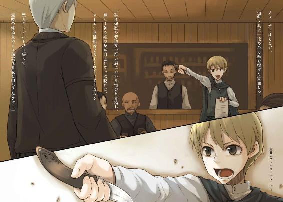

| 狼と香辛料 03 | |
| 支倉凍砂 | |
| KADOKAWA / アスキー・メディアワークス (2013) | |


本書（電子版）に掲載されているコンテンツ（ソフトウェア／プログラム／データ／情報を含む）の著作権およびその他の権利は、すべて株式会社アスキー・メディアワークスおよび正当な権利を有する第三者に帰属しています。
法律の定めがある場合または権利者の明示的な承諾がある場合を除き、これらのコンテンツを複製・転載、改変・編集、翻案・翻訳、放送・出版、公衆送信（送信可能化を含む）・再配信、販売・頒布、貸与等に使用することはできません。
教会都市リュビンハイゲンを出発してはや六日。寒さは日を追うごとに厳しくなり、生憎の曇天ということもあって昼間だというのに緩やかな風にすら身震いする。
特に川沿いの道に出てからは川の冷たさを含んだ風のせいで一段と寒くなった。
曇り空を溶かし込んだかのように濁った川は、見た目としても寒々しい。
リュビンハイゲンの町を出る時に防寒用に買い込んだ古着を重ね着してはいるものの、寒いものは寒かった。
しかし、積荷を優先するあまり防寒用の古着を買う金がなくなり、文字どおり凍えながら北を目指した昔のことを思い出せば苦笑いと懐かしさでいくらか寒さも和らぐというものだ。
そんなかけだし行商人も、七年経てばどうにか形にはなるらしい。
それに、今年の冬は防寒具以外にも寒さを和らげてくれるものがある。
十八の年で一人立ちしてから七回目の冬を迎えた行商人のロレンスは、御者台で隣に座る者へと視線を向けた。
いつもは右を見ても左を見ても誰もいなかった。
時折同じ道を行く旅の道連れはできても、一緒に御者台に座るということはほとんどない。
ましてや、荷物を覆うための布を膝掛けにして共有するなど初めてのことだった。
「なにかや？」
と、やや古めかしい言葉遣いをする同乗者。
見た目の年の頃は十代半ばで、貴族も羨むような綺麗な亜麻色の髪の毛をした見目麗しい部類の少女だ。
ただ、ロレンスが羨むのは綺麗な亜麻色の髪の毛でもなければ少女が身にまとっている上等のローブでもない。
少女が膝掛けの上で毛を丁寧に梳いている、動物の尻尾が羨ましかった。
全体的に茶色で、先っぽだけが雪のように白いふさふさの毛並みをしたそれは見た目どおりにとても暖かい。襟巻きにすればきっと貴族の奥方が大金を積んで欲しがるような上等のものだったが、生憎とそれは非売品だ。
「早く毛づくろい終えて膝掛けの下に入れてくれ」
ローブを身にまとい、櫛で丁寧に動物の尻尾の毛を梳いている少女の姿は内職をする清貧の修道女に見えなくもない。
しかし、少女はロレンスの言葉に赤味がかった琥珀色の瞳をすっと細めると、からっ風に吹かれても少しもひび割れることのない唇の下から牙を覗かせて不機嫌そうに言った。
「わっちの尻尾を懐炉と一緒にするでない」
そして、少女の手元で尻尾がばさりと動いた。
すれ違う行商人や旅の者たちがなんの毛皮かと値踏みするその尻尾は、実のところ未だ持ち主の体から切り離されているわけではない。
その尻尾は、櫛で丁寧に毛を梳く少女のもの。しかも、尻尾を有するだけではなく、少女がかぶるフードの下には人ならざる獣の耳まである。
もちろん、獣の耳と尻尾を有する人がまともであるわけがない。
世の中には生まれる際に妖精や悪魔が入り込んだせいで人ならざる形をして生まれてくる悪魔憑きと呼ばれる者たちがいるが、少女はその類でもない。
その元の姿は麦に宿る恐ろしいまでに神々しい巨大な狼であり、その名をヨイツの賢狼ホロという。常識ある正教徒ならば異教の神々と呼んで恐れおののくような存在ではあったが、ロレンスがホロを恐れたのは少し前の話になる。
今ではホロが常々尻尾を自慢しているところにつけこんで、懐炉代わりにすることだって朝飯前だ。
「それだけいい毛並みだと、膝掛けの下にあるだけで分厚い毛皮を山と積んだ時のような暖かさがあるからな」
目論見どおり、ホロは得意げに鼻を鳴らしたあとに仕方がないなとばかりに膝掛けの下に尻尾をしまってくれたのだった。
「それで、町はまだなのかや。今日中に着くんじゃろう？」
「この川沿いに上って行けばもうすぐだ」
「ようやく温かい飯が食えるんじゃな。もうわっちゃあこの寒い中冷たい粥を食いたくありんせん。いくらなんでも辟易じゃ」
ホロよりもまずい飯には舌が慣れていると自負するロレンスであってもその言葉には賛成だ。
旅では食事が唯一の楽しみだが、冬においてはそうとばかりもいえない。
なにせ寒さで震える中、固くて苦いライ麦パンをそのままかじるかそれを水でもどした粥をすするかのどちらかしか選択肢がなく、添えられるおかずといえばろくに塩も効いていない干し肉か、丈夫な野菜の代表格であるタマネギかニンニクだ。
ホロは元が狼だからか強烈な臭いのタマネギとニンニクは食べられず、ライ麦パンも苦いのが嫌で水でもどしてからかきこんでいる。
食い意地の張ったホロとしては、拷問に近い感じだろう。
「まあ、これから行く町は大市の真っ最中だ。色々な食べ物があるだろうから楽しみにしておけ」
「ほほう。じゃが、ぬしよ、余計なものを買っても懐は大丈夫なのかや？」
一週間前、教会都市リュビンハイゲンでロレンスは欲を搔いたせいで商会の罠に嵌り、一時は破産を覚悟したほどの状況になった。
それを紆余曲折の末なんとか回避したものの、儲けは出ずにどちらかといえば赤字だった。
大騒ぎの原因となった武具も、冬のこの時期に輸送するには重すぎることと、北に行けば行くほど値下がりの影響を受けているだろうと思い、リュビンハイゲンでタダ同然で手放してしまった。
あれやこれやとものをねだるホロだが、ねだる割にはそんなロレンスの懐具合を気遣ってくれている。
普段は憎まれ口や高飛車な態度が多いホロだが、根はとてもいい奴なのだ。
「お前の買い食いくらいなら許容範囲だ。心配することはない」
しかし、ホロはなにが引っかかっているのかまだ心配そうだった。
「ふむ......」
「それに、結局リュビンハイゲンでお前に桃の蜂蜜漬けを買ってやれなかったからな。その分だと思ってくれればいい」
「そうかや......じゃがな」
「なんだ？」
「半分はぬしの懐を心配してのことじゃが、もう半分はわっち自身の心配じゃ。わっちが買い食いをしたら、その分、宿が貧相にならぬかや？」
なるほど、と思ってロレンスは笑いながら返事をする。
「それなりのところには泊まるつもりだ。それとも、部屋に個別の暖炉があったりしないと嫌だとか言うつもりか？」
「そこまで言うつもりはありんせん。じゃがな、わっちの買い食いを言い訳に使われては困るからの......」
「言い訳？」
ロレンスが、少し道からずれた馬を元に戻そうと視線を前に向けた直後、ホロが耳元に口を寄せて囁くように言った。
「金がないからという理由でベッドが一つの部屋を取られたらかなわぬ。わっちもたまには一人でゆっくり眠りたい」
ぐい、と手綱を引っ張りすぎてしまい、馬が不平を漏らしていなないた。
しかし、毎度毎度この手のからかいを受けていれば立ち直りも早くなる。
ロレンスは努めて平静を装って冷たい視線を返していた。
「あれだけ間抜けないびきをかいて寝ていてよく言うな」
ロレンスの立ち直りと反論が予想外だったのか、ホロがつまらなそうに唇を尖らせて体を引く。
この勝機を逃すわけにはいかないと、ロレンスは追撃を打ち放つ。
「それにだな、お前は俺の好みじゃない」
ホロは人の噓を聞き分けることができる耳を持つ。
ロレンスの今の言葉はぎりぎり噓ではない。
それがわかったらしいホロは驚いた顔のまま固まってしまった。
「噓じゃないことくらいわかるだろう？」
そして、止めに向けての最後の攻撃。
ホロはしばらく呆気に取られつつも反撃を試みるように口をパクパクさせていたが、やがてそんな振る舞いそのものが負けの証であることに気がついたようだ。
フードの下の耳がへこたれるのがわかり、そのまましゅんとうつむいてしまった。
久しぶりの勝利。
しかし、本当の勝利はこれではない。
ホロのことが好みではないというのは噓ではないが、まったくの真実でもない。
それを告げることで日々手玉に取られっぱなしのロレンスの復讐劇は完成する。
無防備に寝ているホロや笑っているホロは愛しいと思う。
それに、しゅんとしている様子なども。
つまり。
「ぬしはこういうわっちが好きなんじゃろ？」
上目遣いのホロと目が合ってしまい、ロレンスは自分の顔が赤くなるのを止められなかった。
「たわけが。阿呆な雄ほどか弱いのが好きじゃからな。か弱いのはぬしらの頭のほうじゃと気がつかぬ」
両の牙を見せながら嘲るように笑うホロとあっという間に形勢が逆転する。
「わっちにか弱い姫の役を期待するならば、ぬしは屈強な騎士でなければならぬ。ところが現実はどうじゃ？」
指を差され返事に窮する。
自分は選ばれし騎士ではなく、一介の行商人なんだと痛感したさまざまな場面を思い出してしまう。
ホロはそんなロレンスの様子を見て少し満足したようにため息をついたが、ふとなにかに気づいたらしく人差し指を自分の顎に当てた。
「ふむ。しかし、思えばぬしは一度騎士になってくれたか」
ロレンスはとっさに記憶の引き出しを開けてみるが、そんな格好のいいことがあっただろうかと自問してしまう。
「なんじゃ本人が忘れておるのかや。ぬしはわっちの前に立ちはだかってくれたじゃないかや。ややこしい銀貨の話に首を突っ込んだ時、地下水道で」
「......ああ、あれか」
と、思い出しはしたものの、あれが騎士だったとはとても思えない。ずたぼろの格好でふらふらになりながら立つのがやっとだったのだから。
「なにも腕っ節の強さだけが騎士ではありんせん。しかし、わっちゃあ誰かに守ってもらうなんて初めてのことじゃったからな」
ホロは少し恥ずかしげに笑ってロレンスに身を寄せてくる。この変わり身の速さは相変わらず怖い。損得で態度を豹変させる商人だって裸足で逃げ出すほどのものだ。
しかし、ロレンスに逃げる場所はない。
「これからも、大事にしてくりゃれ？」
狼が子猫のように柔らかく、そして無邪気に笑う。一人で行商を続けていたら何十年経っても見ることができなかっただろう笑顔。
しかし、その笑顔は偽物だ。ホロは好みじゃないと言われたことを怒っている。おそらく、物凄く怒っている。
それがよくわかった。
「......悪かった」
だから、その言葉が魔法の合図だったかのようにホロの笑顔が本物に戻り、体を起こすと喉の奥でくつくつと笑ったのだった。
「わっちゃあぬしのそういうところが好きじゃな」
からかいと冗談の混じった子犬同士のじゃれあいのようなやり取り。
結局、この距離が一番しっくりくるようだった。
「ま、宿のベッドは一つでもかまわぬが、その分、飯の皿は二つがよい」
「わかったわかった」
暑くもないのにかいてしまった嫌な汗を拭いながらそう言うと、ホロはもう一度声を上げて笑った。
「で、この辺だとなにがうまいのかや」
「名物か？ 名物というわけじゃないが、この辺だと......」
「魚、じゃないかや」
まさしくそう答えようとしていたので、ロレンスは少し驚いた。
「よくわかったな。ここから西のほうに行くと湖がある。そこから運ばれてくる魚の料理が名物といえば名物だ。それと、そこを流れる川でも色々獲れるしな。しかし、なんでそれがわかったんだ？」
ホロは人の胸中をあっさりと見破るが、まさか本当になにを考えているかまで見抜けるわけではないだろう。
「ん、さっきからたまに風の具合で匂ってきてたんじゃが、ほれ」
と、言って右手を流れる川とは反対方向を指差した。
「あの荷馬車の列、魚を運んどるじゃろ」
そう言われて初めて気がつくような距離に、ちょうど丘の陰から姿を現した荷馬車の列が見えた。ロレンスの目ではせいぜい荷車の数を数えるのが精一杯で、荷台になにが積まれているかなどわからない。馬の向きからするとこの道と平行に歩いているようにも見えたが、多分どこかで合流することになるだろう。
「魚料理と言われてもわっちゃああまり想像ができぬ。リュビンハイゲンで食べたウナギとかかや」
「あれは油で揚げただけだろ。手の込んだやつだと、野菜や肉と一緒に蒸したり、香草と焼いたり色々だ。あとはあれだな。これから行く町ならではの素材というものがある」
「ほほう」
ホロの目がらんらんと輝き、膝掛けの下に収まっている懐炉代わりの尻尾がわさりと動く。
「それは町に着いてのお楽しみだ」
そうからかってやると、ホロは少し頰を膨らませたがもちろんこの程度で怒るわけもない。
「あの荷馬車によいのがあったら買って晩飯にするなんてのはどうかや」
「俺は魚の目利きは得意じゃない。昔、損したことがあって以来苦手なんだ」
「なに、わっちの目と鼻がありんす」
「魚の良し悪しがわかるのか？」
「なんならぬしの良し悪しも判断してみるかや？」
いたずらっぽく笑うホロを前に、ロレンスはおとなしく降伏する。
「勘弁願う。まあ、いいのがあったら買ってみて持ち込みで料理してもらうか。そっちのほうが安上がりだしな」
「うむ。任せるがよい」
魚を積んでいるらしい荷馬車とどこで合流することになるかはわからなかったが、徐々に距離が近づいているのがわかったのでそのまま道なりに馬を進めて行く。
それにしても、とロレンスは遠くの馬車に目をやっているホロを横目で見ながら思う。
目と鼻で良し悪しを判断するということは、見た目と匂いで判断するということだ。
魚の良し悪しが判断できるのなら、もしかしたら本当に人の良し悪しも判断できるかもしれない。
すぐに馬鹿な考えだと一人笑ったが、やはり少し気になった。
さりげなく、自分の右肩に鼻を近づけて嗅いでみる。旅の暮らしとはいってもさほど臭くはないはずだし、第一着たきり雀なのはホロも一緒だ。
そんな言い訳じみたことを考えていたら、左の頰に視線を感じた。
見たくはなかったが、振り向くとホロが声なく大笑いだ。
「まったく。そんなに可愛くてはわっちの立場がありんせん」
呆れたように言うホロに、結局一言も反論できなかったのだった。
一見すると流れが止まっているかと思うくらいにゆっくりと水が流れる川べりで、馬に水を飲ませていたり荷を積み替えたりしている者たちの姿が目につき始めた。珍しいところでは旅の研ぎ師などもいて、地面に剣を目印代わりに突き立てた横で、研ぎ台の上に頰杖をついて暇そうに欠伸などしていた。
他にも桟橋に横付けされた底が平らな平舟の上で、船頭と馬を連れた騎士らしい者が言い争いをしているのも見える。騎士の装備は軽装だったのでどこかの砦への伝令役なのかもしれない。大方、頭数が揃わないと船を出したがらない船頭と押し問答をしているに違いなかった。
ロレンスも急いでいるのに船を出してくれないことに怒ったことがあるので、そんな光景を見てつい苦笑いをしてしまう。
延々とどこまでも広がっていた荒れ野原も徐々に開墾された畑へと変わっていき、ぽつりぽつりと作業をする人の姿も見え始めた。
この、徐々に人の生活の匂いが漂い始める風景の変化はいつ見ても面白い。
そんな頃になってようやく件の魚を積んだ荷馬車と合流した。
三台の荷馬車が連なっていて、それぞれ二頭の馬が荷車を引いている。荷車には御者台がついておらず、一人だけ身なりの良い男が一番後ろの荷台に乗り込み、雇われ人夫と思われる男が三人、歩きながら馬を御していた。
一台の荷車を二頭の馬で引くなど豪勢な荷馬車だ、というのがロレンスの最初の感想だったが、側に近づいてみて納得した。
荷台には人がすっぽり入れるような樽や木箱が積んであり、そのうちのいくつかには水がなみなみと入れられその中を魚が泳いでいるらしかった。
塩漬けにされない魚は種類を問わず高級品に数えられる。生きた魚は言うまでもない。
生きた魚の輸送というのはなかなかお目にかかれるものではなかったが、ロレンスとしてはもう一つ別のことに対する驚きのほうが大きい。
それは、この高級品を荷馬車三台分も運んでいる荷主が、ロレンスよりも若い商人だったということだ。
「魚を？」
一番後ろの荷台に乗っていた男に声をかけると、魚の仲買人がよく身にまとう油を塗った革の外套のフードの下から少年のような声が聞こえてきたのだ。
「ええ、数匹分けていただけないかと」
ホロと座る場所を替わったロレンスの言葉に、若い商人は即座に返事をする。
「申し訳ありません。うちは魚を売る先が匹数まで全て決まっているんです」
意外な返事にロレンスが驚くと、それに気がついたように若い商人がフードを外して顔を見せた。
フードの下から出てきたのは声に相応しい少年の顔。少年というのが言いすぎだとしても、まだ二十歳にもなっていないくらいのもの。それに、荒々しい男連中の多い魚の仲買人の中では珍しい線の細い体つきだ。揺れる金髪などはどことなく気品すら感じさせていた。
もっとも、見た目が若いとはいえ荷馬車三台分も鮮魚を運ぶ商人なのだ。油断してはならない。
「失礼ですが、行商人の方ですか？」
人当たりのよい笑顔は生来のものなのか、それとも商人のものなのかちょっと判別ができないが、どちらにせよロレンスは笑顔で返事をする。
「ええ、リュビンハイゲンから来たところです」
「そうですか。それでしたら、私たちが今来た道をたどって半日ほどの所に湖があります。漁師の方たちと交渉すればおそらく譲っていただけますよ。ここのところ鯉の良いのが獲れてますね」
「ああ、いえ、買いつけではなく、今晩のおかずに何匹か譲っていただければと思ったんです」
若い商人が笑顔から一転して驚いた顔になったのは、そんな申し出を受けるのが初めてだからかもしれない。
塩漬けの魚を長距離で輸送する魚商人なら、道中で食事用にと求められるのは日常茶飯事だが、近隣の湖と町を往復するだけだとなじみのないことなのだろう。
しかし、若い商人はすぐに驚きの顔から思案顔へと様変わりする。
これは自分の商売の常識とは違う事態に出会ったから、それが新しい商売にならないかと考えている顔だろう。
「商売熱心な人だ」
ロレンスが言うと、若い商人は「あっ」と我に返って恥ずかしそうに笑ったのだった。
「恥ずかしいところを見られてしまいました。ところで、夕食用の魚をお探しということは、今晩はクメルスンにお泊まりでしょうか？」
「はい。冬の大市と、祭り見物に」
クメルスンとはこれから向かう町の名で、今はちょうど夏と冬に行われる年に二回の大市の開催期間中だ。
また、冬の大市にはそれに合わせて大きな祭りも開催される。
詳しい祭りの内容はロレンスも知らなかったが、教会の人間が見たら卒倒するといわれる異教の祭りという評判だけは聞いたことがある。
北への異教徒討伐隊の補給基地を未だに兼ねる教会都市リュビンハイゲンから六日もかけて北上すれば、もはやそこでの正教徒と異教徒の関係は南のほうほど単純ではない。
リュビンハイゲンの北に広がる広大な地域を治める国、プロアニアには王族にも多数の異教徒が存在する。正教徒と異教徒が混在して町にいるのは当たり前のことといえた。
そんなプロアニアの有力貴族が所有する町クメルスンは、そういったややこしい宗教の問題からなるべく離れ、経済の繁栄を願って造られた大きな町だ。そのために町には正教徒の教会がなく、正教徒の布教活動も禁止されていた。そんな町で行われる祭りも正教か異教かを問うことは禁忌で、伝統的なこの町の祭りという形で説明される。
もともとの祭りの物珍しさと、異教徒たちも安心して来られるということもあいまって、ラッドラ祭と呼ばれるこの祭りには毎年物凄い数の人が押し寄せるらしかった。
ロレンスはクメルスンには毎年夏にしか来ず、生憎とその祭りを見たことがない。
だから聞いた話だけを頼りに少し早めに町に着くようにと荷馬車を進めてきたのだが、どうやらロレンスの認識は甘かったらしい。
「ええと、宿はご予約されましたか？」
心配顔でそんなことを言われてしまったのだ。
「祭りは明後日からですよね。まさか、もう宿が足りなくなっているとか？」
「そのまさかです」
隣でホロがわずかに身じろぎしたが、宿を心配しているのかもしれない。
狼の姿ならいざ知らず、人の姿のホロは普通の人と同じで寒さに弱い。いい加減この寒い時期の野宿は限界だろう。
もっとも、それならそれでロレンスにも当てはあった。
「それなら、毎年大市に合わせて商館が宿を手配してくれているそうですから、そちらを頼ってみます」
商館を使うとなればホロのことを根掘り葉掘り聞かれるかもしれなかったので、できれば頼りたくはなかったが背に腹はかえられない。
「あ、組合所属の方でしたか。失礼ですが、どちらの組合に？」
「ローエン商業組合の在クメルスン商館です」
その瞬間、若い商人の顔がぱっと輝いた。
「なんと素晴らしい偶然。私もローエン所属なんです」
「おお、これは神のお導き......と、この辺りでは禁句でしたね」
「あはは、大丈夫です。私も南出身の正教徒ですから」
若い商人は笑い、それから小さく咳払いをした。
「では私から名乗らせていただきます。クメルスンで魚の仲買人をしています、フェルミ・アマーティです。商売上はアマーティで通っています」
「行商人のクラフト・ロレンスです。同じくロレンスと呼ばれています」
二人とも荷馬車の上での名乗り合いだったが、楽に手の届く距離だったのでそのまま握手もする。
こうなると、次はホロも紹介しなければならない。
「こちらは旅の連れのホロ。訳あって共に旅をしていますが、夫婦ではありません」
ロレンスが笑いながらそう言うと、ホロが少し前かがみになってアマーティのほうを見てにこりと笑う。
やはりおとなしくしているホロはかなりのものだ。
アマーティは慌ててもう一度名乗ったが、その頰は赤かった。
「ホロ、さんは修道女の方ですか？」
「一応は遍歴の修道女です」
巡礼の旅はなにも信仰心に目覚めた男だけのものではなく、一市民の女性たちも普通に行っている。
そして、その際に彼女らが名乗る身分で最も多いのが遍歴の修道女だ。巡礼中の市民と答えるよりも、このように答えることで格段にさまざまな面倒事が免除される。
しかし、クメルスンに教会の人間であると一目でわかるような格好で入るには問題があるため、そういった者たちが町に入る際には服のどこかに羽を三本つけるという習慣がある。ホロのフードにもみすぼらしい茶色の鶏の羽が三本ついていた。
南出身というアマーティは、若いなりにそのあたりのことをすぐに理解したらしい。
行商人と若い女の二人旅にもなにか理由があるのだろうと、それ以上の追及はしてこなかった。
「それでは、多少の旅の困難は神からの試練ということですね。と、言いますのも、宿を一部屋くらいならば都合できるのですが、残念ながら二部屋となると少し難しい」
そんな申し出にロレンスが驚くと、アマーティは笑ってあとを続けた。
「同じ組合所属というのもまさしく神のお導きでしょう。魚の取引先の宿屋に頼めば一部屋くらいならば都合をつけてもらえるはずです。女性の方を連れて商館から宿を都合してもらえば、色々と古株の人たちがうるさいでしょう」
「ええ、まったくそのとおりです。ただ、よろしいんですか？」
「もちろん、私も商人ですから商売を考えてのことです。つまり、宿泊先の宿でたっぷりとおいしい魚を召し上がっていただきたいということです」
この若さで荷馬車三台分もの魚を扱っているアマーティはやはり只者ではない。
如才ないとはこのことだ。
ロレンスは悔しさ半分、感謝半分で返事をしていた。
「やはり商売がお上手だ。それでお願いできますか」
「わかりました。お任せください」
アマーティは笑い、それから一瞬だけ視線をロレンスからそらした。
ロレンスは気がつかなかったふりをしたが、視線はホロに向けられたはずだ。
もしかしたら、自分の商売の足しにするだけでなく、ホロにいいところを見せようとしての申し出だったのかもしれない。
そんなところを見ると、ホロと旅をしているロレンスとしてはちょっとした優越感を覚えてしまうのだが、また余計なことを思っているとホロにからかわれる。
ロレンスは頭から余計なことを払拭して、それからはこの自分よりも若い優秀な商人と親交を深めることに専念した。
クメルスンの町には、それからしばらくの後、日が落ち始めた頃にたどり着いたのだった。
食堂のテーブルには鯉の切り身と根菜を煮込んだスープの入った鍋を中心として、魚介類を中心にさまざまな料理が並べられていた。
宿に口を利いてくれたアマーティが魚の仲買人ということもあるだろうが、食事といえば肉料理が中心の南とはやはり趣が違う。その中でも特に目を引くのは巻貝を蒸したものだ。
海の巻貝は長寿の薬、川の巻貝は腹痛の原因といわれるように、クメルスンよりも南では二枚貝を食べても巻貝を食べることはない。教会のお触れでも悪魔が住み着いているので食さないように、と言われるほどだ。
もっとも、それは聖典に書かれた神の教えというよりも、実際的な注意の意味合いが濃い。ロレンスも昔行商の途中で道に迷って川に突き当たった時、飢えに負けて巻貝を食べたら猛烈な腹痛に襲われたことがあり、それ以来巻貝は海のも川のも見ることさえ嫌だった。
幸いなことといえばそれらの料理が小分けにして出されていないことと、ホロがいたくそれをお気に召していること。
苦手な食べ物は全てホロに食べてもらうことにした。
「ふーむ。貝はこんな味だったのかや」
と、感心しながら次々と貝の身をロレンスから借りたナイフの切っ先で引きずり出しては口に運んでいる。ロレンスはといえば、たっぷりと塩の振られたカワカマスの塩焼きをつついていた。
「あんまり食べると腹痛を起こすぞ」
「うん？」
「川の巻貝には悪魔が住んでいる。うっかり食べるとひどい目に遭う」
ホロは引きずり出したばかりの貝の身を見て、少し首をひねってからそれを口に運ぶ。
「わっちを誰じゃと思っとる。わっちがわかるのは麦の良し悪しだけじゃありんせん」
「唐辛子を食べてひどい目に遭ったと言っていたのに？」
その指摘には少しむくれた。
「さすがに見ただけでは味までわかりんせん。見た目は真っ赤によく熟れた果実のようじゃろう？」
喋りながらも貝の身をほじくり出し、時折コップに口をつけては目をきつく閉じている。
この辺では、教会の目が光っていると危険な酒ということでおおっぴらに売ることができない蒸留酒が平気な顔をして出回っている。
ホロとロレンスの手元にあるコップの中身は、燃えるぶどう酒と呼ばれている色が透明に近い酒だった。
「甘い酒を頼んでやろうか？」
「......」
ホロは無言のまま首を振って、きっとローブを剝いだら膨れ上がった尻尾が出てくるだろうというくらいにきつく目を閉じている。
それからようやく酒を飲み下すと、長く息を吐き出して袖口で目尻を拭っていた。
魂を揺さぶる酒、とも呼ばれるそれを飲んでいるホロはもちろん修道女の格好ではない。三角巾を頭に巻いた町娘の格好をしていた。
食事の前に着替えたホロと共にアマーティに改めて礼を言ったのだが、その時のアマーティの顔といったら、ロレンスのみならず、その様を見ていた宿の主人も思わず笑ってしまうくらいの情けないものだった。
当のホロはそんな罪をさらに重ねるように、いつも以上に気合を入れておしとやかに礼を言っていた。
それがこの飲みっぷりと食いっぷりを見たら、アマーティの夢もたちまち覚めることだろう。
「......ぐす。懐かしい味じゃ」
酒のきつさからか望郷の思いからか、少し涙ぐんでそんなことを言う。
確かに、北に行けば行くほど魂を揺さぶる酒は多い。
「これだけ蒸留してあると俺なんかには味がわからないな」
さすがに貝に飽きたのか、時折焼き魚や煮魚に手を伸ばし始めたホロは楽しそうに答えた。
「姿かたちは十年もすれば忘れるがの、ものの味や匂いは何十年経ってもそうそう忘れるものではありんせん。この酒は懐かしい味じゃ。ヨイツのものにとても似ておる」
「北は強い酒が多いからな。昔からこんなのばかり飲んでいたのか」
コップの中身とホロを見比べると、口の端に焼き魚のかけらをくっつけたホロが得意げに口を開く。
「気高き賢狼には甘い酒など似合わぬじゃろう？」
甘い酒どころかミルクと蜂蜜が似合いそうな少女の姿のホロだったが、ロレンスはここは軽く笑って同意しておいた。
きっと、酒の味に故郷のことを思い出しているというのは事実なのだろう。
久しぶりのうまい飯とはいえ、ホロの楽しそうな笑顔はそれだけで説明できるものではない。
ひょんなところで故郷のヨイツに近づいてきたということが実感できて、予期せぬ贈り物をもらった少女のように本当に楽しそうだった。
しかし、ロレンスはそんなホロからつい目をそらしてしまっていた。
見惚れてしまい、それをホロにからかわれるのが嫌だというわけではない。
ロレンスはヨイツがとっくの昔に滅びてしまっているという話があるのをホロにはひた隠しにしてきている。その事実が無邪気に故郷のことではしゃぐホロの笑顔を目に痛い太陽に変えていた。
それでもせっかくの楽しい食事を台無しにすることもない。
ロレンスは悟られぬように気持ちを切り替え、鯉の煮物に手を伸ばすホロに笑って言葉を向けていた。
「鯉の煮物がお気に召したか」
「うむ。鯉は煮ると......こんなにうまいんじゃな。おかわり」
鯉の煮物は大鍋に盛られているのでホロでは手が届かない。なのでロレンスが取ってやることになるのだが、その都度木の皿の中にタマネギが増えていく。どうやら、煮ても食べられないらしい。
「鯉なんてどこで食べたんだ。鯉を食べられる所なんて少ないだろう」
「うん？ 川で。のろまな魚じゃからな。楽に獲れる」
納得した。きっと、狼の姿で魚獲りでもしたのだろう。
「生の鯉は食べたことないな。うまいのか？」
「鱗が牙の間に挟まる。骨が多い。鳥がよく小魚を丸吞みにしておるからうまいかと思ったんじゃがな、わっちの口には合わんかった」
大きな鯉を仕留め、バリバリと頭から嚙み砕くホロの姿を想像する。
鯉は長生きする魚として知られていて、教会からは聖なる魚とも悪魔の手先とも呼ばれている。そのため食するのは北のほうの地方に限られる。
確かに、ホロのような狼がうろうろしている北の地方だったら、多少長生きする程度の鯉に畏れを抱くのは馬鹿らしいことなのかもしれない。
「人がする料理というのは相変わらずよい。けれども、それだけではなく選んでおる魚がどれもよいらしい。あのアマーティという若僧、なかなかの目利きじゃな」
「あの若さでな。それに、取り扱っている量も並みじゃなかった」
「それに引き換え、ぬしの積んでおった荷、あれはなんじゃ」
ホロの目が途端に冷たくなる。
「ん？ 釘だな。このテーブルには......使われてないか」
「釘くらいわかりんす。もっとぱっとしたものを扱えということじゃ。それとも、リュビンハイゲンで失敗したのが応えたのかや」
その言葉には少しむっとするが指摘されたことは事実なのでなにも言えない。
調子に乗って財産の倍というとんでもない金額の武具を買ったことが原因で破産の危機に遭い、危うく死ぬまで奴隷となるところだった。その上ホロにも迷惑をかけてしまい散々な目に遭った。
それらを踏まえて結局リュビンハイゲンでは釘を仕入れたが、その金額はトレニー銀貨で約四百枚。手持ちにかなり余裕を残しての弱気な仕入れといえた。
「ま、荷は地味だがそれなりに利益は出るはずだ。それに、ぱっとしないものばかりを扱っているわけじゃない」
ホロがカワカマスの背骨を野良猫よろしくくわえながら、少し首をひねってロレンスを見る。
ロレンスはちょっとした良い文句を思いついたのだ。
小さく咳払いをしてから口を開く。
「俺の荷馬車にはお前がいるからな」
あまりにも気障ったらしいといえばそうだが、ロレンスは我ながらうまいことを言ったと笑ってしまう。
しかし、笑いながらぶどう酒を飲んでホロのほうを見れば、ホロはその手を止めて呆れ返っていた。
「......まあ、ぬしじゃその程度じゃな」
そして、そんなことを言ってため息をついたのだった。
「お前、もう少し俺に気を遣っても罰は当たらないだろう？」
「雄は優しくするとすぐ図に乗りんす。味をしめて繰り返しそんな台詞を聞かされてはたまらぬからな」
「ぐ......」
言わせておけば、とロレンスは反論する。
「わかった。なら俺も今後は──」
「たわけ」
そして、遮られる。
「雄は優しくてなんぼじゃ」
「......」
顔をしかめて酒に走っても、狩人たる狼は逃がさない。
「それに、わっちがしゅんとしておればぬしは優しくしたくなろう？」
そんな言葉を無邪気な笑顔で言われたら、ロレンスにはもはやなす術がない。
ホロはずるい。
恨めしげな視線を向けると、ホロはにこりと笑ったのだった。
何日ぶりかのまともな食事を終え、宿の部屋へ戻る頃にはさすがに外の通りも静かになっていた。
クメルスンにロレンスたちが到着したのは夕暮れ時だったのだが、町の混雑はロレンスの想像以上だった。
もしもアマーティに出会っていなければ、まず間違いなく商館に行って宿の手配を頼んでいたに違いない。それどころか、もしかしたら商館の一室を借りる羽目になっていたかもしれない。
クメルスンの町のあちこちには、なにを象ったものなのか不明な藁の人形や木の彫刻が並び、大通りはもちろん狭い路地までも楽隊や道化師が見物人を引き連れて歩き回っていた。
そんな町の南側の大広場では営業時間を大幅に引き延ばされた市場が開かれ、大市の名に相応しい活気を見せている。その上、普段は商品の小売を許されていない職人連中までもが市場の外の大通り沿いに露店を並べていた。
きつい酒で火照った体を少し冷まそうと木窓を開ければ、綺麗な月明かりに照らされて、まだ後片づけをしている露店がいくつも見える。
アマーティが都合してくれた宿はこの町でも有数の高級な宿で、普段ならば絶対に泊まろうとは思わないくらいのもの。部屋は町の中心を南北に通る大通りに面した二階で、東西に伸びる大通りとの交差点の近くにあった。ホロのお望みどおりベッドは二つ。もっとも、邪推すればこのへんはアマーティが意地でも二つのベッドの部屋を用意したと思えなくもない。
少し心地よい邪推ではあったが、少なくとも部屋を用意してくれたことにはとても感謝しているので、ロレンスはそれをやめて視線を外に向けた。
広い通りを歩く人たちはみんな揃っての千鳥足だ。
ロレンスが少し笑いながら後ろを振り返れば、こちらはまだ飲み足りないとばかりにベッドの上で胡坐をかきながら酒を木のコップに注いでいる最中だった。
「お前なあ、明日ひどい目に遭っても知らないぞ。パッツィオで二日酔いでひどい目に遭ったのを忘れたのか？」
「んー？ 大丈夫じゃろ。よい酒はいくら飲んでも尾を引かぬからの。されどわっちの後ろ髪は引く。飲まぬ手はあるまい」
注ぎ終わると嬉しそうに口をつけ、夕食で食べ切れなかった鱒の干物をくわえている。
放っておけばきっと一人で嬉々としながら酔いつぶれるまで食って飲むだろうが、ご機嫌でいてくれる分には好都合といえた。
というのも、ちょっと切り出しにくい話があったからだ。
毎年似たような道程を行き来する行商路を変更し、いつもは夏にしか来ないクメルスンに冬のこの時期に来たのは言うまでもなくホロの故郷を目指してのこと。
しかし、ロレンスはホロの故郷であるヨイツがどこにあるのかを詳しく聞いていない。その名前を聞いたことはあるものの、それは昔話の中だけで具体的な場所まではわからない。
これまで詳しい場所を聞いてこなかったのは、故郷の話をするとホロは懐かしさで一時笑顔になるものの、すぐに時間的にも距離的にも遠いそこを思って哀しそうにするからだ。
情けないことだが、故郷の話を切り出すのをためらうにはそれだけで十分だった。
ただ、今ならその話を切り出してもきっと哀しむことはないはずだ。そう意を決して、ロレンスは壁に備え付けの机の上に腰掛けてから、口を開いた。
「で、酔いつぶれる前に聞いておきたいことがあるんだが」
丸出しになっているホロの耳と尻尾がすぐにピクリと反応した。
遅れて、ホロの視線がロレンスに向けられる。
「なにかや？」
聡い賢狼はロレンスの声の調子から気軽な世間話ではないということを察したらしい。口元に薄く笑みをのせて、今は機嫌が良いことを知らせてくれた。
ロレンスの口から重い蓋がゆっくりと外される。
「お前の故郷の場所のことなんだが」
そう切り出すと、ホロは途端に声なく笑ってコップに口をつける。
てっきり真剣な顔つきになると思ったので、その反応は意外だった。
すでに酔っているのか、と思う間もなく、こくりと喉を鳴らしたホロの口が開かれた。
「やはりぬしは場所を知らぬか。うすうすそうじゃないかと思っていたからの。わっちゃあいつそのことを聞いてくれるのかとずっと心配してたんじゃがな」
そして、酒に映る自分の顔を笑うようにコップの中を見ながら、小さくため息をつく。
「どうせヨイツの話を聞こうとすれば、またわっちがどうにかなると思ったんじゃろう。わっちはそんなにか弱く見えるかや？」
故郷の夢を見て泣いていたことを指摘しようかとも思ったが、ホロはそれをわかっていて言っているのだろう。尻尾が楽しげに揺れていた。
「いや、まったく見えないな」
「たわけ。そこはうんと言うところじゃろう」
望んでいたとおりの返答が得られたようで、ホロは一段と嬉しそうに尻尾を振る。
「ぬしは本当に妙なところで気を遣うな。ようやくその話を切り出したのも、どうせ飯の時のわっちを見て大丈夫だと判断したからじゃろう？ まったく......お人好しが」
酒を飲みながら言うホロは、くすぐったそうに笑っていた。
「わっちとしてはそれが嬉しくなくもないがの、どちらかと言えばその間抜けさが見ていて楽しい。このまま黙って北に行って見当外れの所に行ったらどうするつもりだったんじゃ」
ロレンスは肩をすくめるだけでその言葉をかわし、さっさと目的を告げる。
「間抜けな俺が道を間違えないようにヨイツの場所を聞きたいんだがな」
ホロはコップに口をつけて間を設ける。
それから、細く長く息を吐いた。
「実は、詳しく覚えておらぬ」
冗談だろう、というロレンスの言葉を封じるようにあとが続く。
「方向くらいならばすぐにわかりんす。あっちじゃ」
ぴしり、とホロが指を差す方向を見て、ロレンスはそれが北であることをすぐに理解する。
「じゃが、いくつ山を越えて、川を渡って、どれだけ草原を歩いてきたのかはまったく覚えがありんせん。近くに行けば思い出すじゃろうと思っておったんじゃが、それではまずいのかや」
「場所がわかりそうな手がかりはないか？ 道はまっすぐに伸びていないし、北に行くと当てになるような地図もなかなかない。場合によっちゃ遠回りの道じゃないとたどり着けないこともある。例えば、どこか町の名前を覚えてないか。それを手がかりにしてもいい」
ホロはしばし黙考したあと、こめかみに人差し指を当てて口を開いた。
「わっちが覚えておる町の名は、ヨイツと、それにニョッヒラ。あとは......うう、なんじゃったかな......ピ」
「ピ？」
「ピレ、ピロ......そうじゃ、ピローモテン」
胸のつかえが取れたとばかりに嬉しそうな顔をするホロに、ロレンスは首をひねる。
「聞いたことがないな。他にはないか」
「うー......町はいくつかあったが、今みたいにそれぞれ名前などついておらぬ。山向こうの、とか言えば通じるんじゃ。必要ないじゃろう」
確かに、ロレンスも初めて北の地方を回った時は何度か驚かされたことがある。なんとかの町、という所に行くと、旅人しかその町の名前を知らないとくる。その町に住む者や、その近辺に住む者たちは町の名前など知らないと言うのだ。
町に名前をつけるとよくない神様に目をつけられる、と言っていた老人もいた。
きっとよくない神様というのは教会のことなのだろうが。
「じゃあ、ニョッヒラを基点にして考えるか。そこなら俺もわかる」
「懐かしい名前じゃな。まだあそこは湯が出るのかや」
「異教徒の町だというのに長い旅路をものともせず、お忍びでありがたそうに湯に浸かりに行く大司教や国王がたくさんいるという話だ。噂じゃあ、温泉があるからニョッヒラは異教徒討伐の軍がやってこないという話だ」
「あそこの湯の中だけは誰の縄張りでもないからの」
そう言って笑ったホロは、「で、じゃな」と小さく咳払いをする。
「ここをニョッヒラとすると、あっちじゃ」
ホロが指差したのは南西の方向。さらに北を指差されなかったことには正直ほっとした。
ニョッヒラよりも北になれば夏だというのに雪が溶けないような所ばかりだ。
ただ、ニョッヒラの南西というだけではあまりにも広すぎる。
「ニョッヒラからヨイツまでどのくらいだった？」
「わっちの足で二日。人じゃと......わからぬ」
リュビンハイゲン近くで狼姿のホロの背中に乗ったことを思い出す。きっと道なき道を軽快に歩けるのだろう。
そうなると、やはりニョッヒラから相当な範囲が捜索範囲となる。そこからひとつの町、もしかしたら小さな村かもしれないヨイツを見つけるなど砂漠に落とした針を見つけるようなもの。広大な世界に点在する町から町を歩く行商人だからこそ、その困難さがわかる。
しかも、ロレンスが聞いた昔話の中ではヨイツの町は熊の化け物によって滅ぼされている。
もしもそれが本当の話なのだとしたら、そんな大昔に滅びた町の跡を見つけるのは絶対に不可能だ。
ロレンスは一生涯に渡って暇をもてあます貴族ではない。本来の行商路から外れる場所をうろつけるのはせいぜい半年程度。しかも、リュビンハイゲンでの失敗からまた町に店を持つ夢が遠のいてしまった。余計にもたもたしている暇はない。
そんなことを考えていたら、ふっと思いついたことが口から出ていた。
「ニョッヒラからならお前一人でも帰れないか？ 方向はわかるんだろう？」
ニョッヒラから二日程度という距離ならば、きっとホロが自分で言ったとおりに近くに行けば思い出すだろう。
なので、他意なく口からぽろりとそんな言葉が出ていたのだが、直後にそれは失言だったと思った。
ホロが、呆然としてこちらを振り向いていたからだ。
ロレンスが驚くのと、ホロが目をそらすのは同時だった。
「そ、そうじゃな。ニョッヒラまで行けばわっちゃあきっとヨイツまでの道を思い出すじゃろ」
それから浮かべたのは作り笑いだ。一体どうしたのかと考えて、ロレンスは「あっ」と声を上げていた。
ホロは港町パッツィオで、孤独を死に至る病と言った。
孤独をそれほどに恐れるホロだ。ロレンスにその気がなくとも、いくらでも悪い方向に考えてしまう可能性はある。それに、ただでさえ酒が入っているのだ。
もしかしたら、ホロはロレンスが故郷探しを面倒くさく思い始めていると解釈したのかもしれない。
「おい、ちょっと待てよ。悪い方向に物事を考えるな。二日程度で行って帰れるならニョッヒラで待つくらいわけもない」
「うん。それで十分じゃ。ニョッヒラまでは案内してくれるんじゃろ？ わっちはもう少し色々町を見たいからの」
拍子抜けするほどかみ合ったやり取りだが、ホロのよく回る頭が話をうまくつなげているようにしか思えない。
言葉のやり取りとしてはうまくつながっていても、その裏にはずれがある。
ホロはもう何百年も故郷から遠ざかっている。ロレンスが聞いた昔話のように、ヨイツの町がなくなっている可能性もきっと考えているだろうし、それでなくてもさまざまなことが大きく変わるには十分すぎる年月が過ぎている。ホロの不安はとても大きいものだろう。
きっと、ホロは一人で故郷に行くのを怖がっている。
酒の味でヨイツのことを思い出し、無邪気に笑っていたのもその不安の裏返しなのかもしれない。
それは少し考えればわかるはずのこと。ロレンスは自分の迂闊な発言を後悔した。
「いいか、俺はできる限り協力するつもりだ。さっき言ったことは──」
「雄は優しくてなんぼじゃとさっき言ったがな。ぬしよ、あまり気遣われるのも困りんす」
ホロは作り笑いに困った表情を混ぜて、手に持っていたコップをベッドの下に置いた。
「わっちゃあいかんな。どうしてもわっちのものさしで物事を考えてしまう。ぬしらはわっちが瞬きをする間に年老いてしまうからの。そんな短い生涯の中の一年はとても大事じゃ。どうしてもそれを忘れてしまう」
木窓から入る月明かりにホロの体が照らされる。それが一瞬幻のように見えて近づくことをためらった。近づけば、霧の塊のように搔き消えてしまうような気がしたのだ。
ホロがコップを置いたままうつむかせていた顔を上げると、やはりその顔は困ったように笑っていた。
「ぬしは本当にお人好しじゃな。そんな顔されるとわっちのほうが困りんす」
こんな時になんと言うべきなのか。ロレンスは頭の中に的確な言葉を持たない。
今この場で二人の間にずれがあることは明白だ。
しかし、それを是正するための言葉が出てこない。場当たり的な噓を言ってもホロに対しては通じない。
それに、なによりもホロの言葉がロレンスの口を重くさせる。何年かけてもヨイツを見つけてお前を連れて行ってやる、とはとても言えない。その台詞を口にするには、商人というイキモノはあまりにも現実的過ぎる。何百年と生きるホロの存在は、あまりにも遠かった。
「当たり前のことを忘れておったのはわっちのほうじゃ。ぬしの側は居心地がいいからの。つい......甘えてしまう」
照れ笑いながら言うホロの耳が、くすぐったそうにひくひくと動いている。少女のような言葉はかなり本心に近いものなのかもしれない。
ただ、そんな言葉を聞くロレンスは少しも嬉しくない。
まるで、別れの挨拶みたいだからだ。
「くふ、わっちゃあ酔っとるみたいじゃ。さっさと寝ないと次になにを言うかわからんな」
ホロは決して無口ではないが、自分だけ饒舌に喋る様子から余計になにか無理をしているように見えてくる。
それでも、結局ロレンスはホロになにも言葉をかけられなかった。
ロレンスにできることといえば、寝静まってからホロが一人で旅支度をして部屋から出て行かないかに注意することくらいだ。まさかとは思うが、ホロにはどことなくそんなことをしかねない雰囲気がある。
ただ、そんな注意しかできない自分が無性に情けなく、大声で罵りたかった。
夜は静かにふけていく。
閉じた木窓の向こうから、酔っ払いの笑い声が空しく聞こえてきたのだった。
どれほど心配事があっても夜はきちんと眠れるようにできているのが商人らしい。
ホロが一人で出て行かないかと心配していたのに、気がついたら木窓の向こうから小鳥の鳴く声が聞こえていた。
慌てて飛び起きるような失態は演じなかったものの、隣のベッドに視線を向けて、ホロがいることを確認した途端に安堵のため息をついていた。
ベッドから降り、木窓を開けて顔を出す。部屋の中も十分寒いがさすがに早朝の外の空気は段違いに寒く、吐く息は煙よりも白くなる。
その代わりに空は綺麗に澄み渡り、水晶のような朝だった。
宿が面している大通りにはすでに人がいる。早起きが自慢の行商人よりも早起きな町商人たちを見て、ロレンスは頭の中で今日一日の予定をおさらいしてから「よし」と一つ気合を入れた。
昨日の失敗を償うというわけでもないが、明日より始まる祭りをホロと共に存分に楽しむには雑務を今日中に終わらせるのが望ましい。
まずはリュビンハイゲンからの積荷を売却することからだ、と思って部屋の中を振り返る。
そして、昨日の今日で少し気が重かったが、相変わらず眠りこけている相棒を起こそうと歩み寄ってから、ロレンスはふと眉根に皺を寄せた。
貴族よろしく昼過ぎまで眠りこけていることも珍しくないのでそれ自体は別にどうとも思わなかったのだが、ふとあることに気がついたのだ。
いつもなら聞こえてくる間抜けないびきがない。
もしや、と思って手を伸ばすと、それに気がついたようにほんの少しだけ毛布がピクリと動いた。
ロレンスは毛布を軽くめくる。
直後についたため息。
毛布の下には、捨てられた子猫も負けそうなほど弱々しいホロの顔があった。
「また二日酔いか」
頭を動かすと痛いのか、ゆっくりと耳を動かすだけ。
軽く説教の一つでもしてやりたくなるが、昨晩のことを思い出してすんでのところで飲み込んだ。それに、言ったところで聞く耳を持つとも思えない。
「あとで水差しと、万が一の時のために桶を用意してもらっておくから、おとなしく寝てろ」
おとなしく、というところにだけ力を込めて言うと、やはり弱々しく耳が動かされた。
無理に言い聞かせたところでおとなしく寝ているとも思えないが、これほど辛そうならふらふらと出歩きはしないだろう。また、同様にロレンスの留守中に一人で旅支度を整えるというのも無理なわけだから、その点では少しほっとする。
もちろんホロの演技と思えなくもないが、顔色まで変えられるような演技はいくらなんでもできないだろう。
ロレンスはそんなことをつらつらと思いながら、それ以上ホロにはなにも言わず手早く宿を出る準備を終えて、寝返りすら打てないらしいホロにもう一度歩み寄って言葉をかけた。
「祭りは明日からが本番だから慌てなくてもいい」
辛そうな、というのを通り越して脱力しきった情けないホロの顔に、途端に安堵の色が浮かぶのを見て笑ってしまう。
二日酔いの辛さよりも、祭りのほうがホロには重要なようだった。
「昼過ぎには一度帰ってくる」
この言葉には興味がなかったようで、今度は耳が動かない。
ホロのあからさまな反応に苦笑いをしていると、ゆっくりとホロの瞼が開いて口元が笑った。
わざとやっていたらしい。
ロレンスは肩をすくめて毛布をホロの頭にかぶせた。きっと、毛布の下でホロは笑っていることだろう。
それでも、昨晩のことが尾を引いていないことには素直にほっとする。
部屋から出る直前にもう一度ホロのほうを見ると、毛布からはみ出していた尻尾の先が手を振るように二度ほど揺れた。
なにかうまいものを買ってきてやろう。
そう思ってロレンスは部屋の扉を静かに閉めたのだった。
市場開放の鐘が鳴る前の商取引は、基本的にどこの町でもあまり好まれることではない。特にそれが市場のど真ん中であればなおさらだ。
ただ、そんな規則も時と場合によっては大目に見られたりもする。
クメルスンも大市期間中に限っては、市場が開放されてからの混雑を緩和するために時間外の取引を半ば推奨していた。
なので、ようやく建物の向こう側に太陽が見え始めてきたという早朝にもかかわらず、クメルスンの南広場の半分以上を占める市場では、すでにたくさんの商人たちが忙しく立ち回っていた。
方々に積み上げられた木箱や麻袋に、それら荷物と露店とのわずかな隙間に繫がれている豚や鶏などの家畜類。それに、海から遠いこの地方で魚の最大出荷地も兼ねるクメルスンならではの、アマーティが昨日運んでいたような巨大な樽の中で泳いでいる魚の姿なども見受けられた。
ホロが町に立ち並ぶ食べ物屋の露店を見るとそわそわしてしまうように、ロレンスも市場のさまざまな商品を見ていると自然と心が弾んでくる。
あの商品をあの町に運べばどのくらいの利益が出るだろうか、とか、あの商品がこれだけあるとあの地方ではかなりだぶついて値が下がっているのではないか、など、次から次へと色々な考えが頭の中を駆け巡っていく。
駆け出しの頃はほとんどの商品について高いのか安いのかわからずただただ市場を右往左往していたのに、今では色々なことがすぐにわかる。
網の目のように張り巡らされた商品の相関図を完全に把握した時、商人は錬金術師になる。
なんとも格好いいその言葉に少し酔いしれてしまうが、ロレンスはリュビンハイゲンでの失敗を思い出して少し苦笑いをした。
上ばかりを見て欲を搔くと足元をすくわれる。
一度深呼吸をして浮ついた心を落ち着けると、手綱を握りなおして市場の中を行く。ようやくたどり着いた目的の露店は、他の店同様この早朝から商談の真っ最中のようだった。店の主人はロレンスと一つ違いの商人で、元々はロレンスと同じ行商人。それが今では小さいなりに市場で屋根付きの露店を出すことのできる町の小麦商人になっているのは、自他共に認める幸運のお陰だ。この地方の町商人を示す特徴ともいえる、顔が四角くなるように整えられた髭もすっかり堂に入っている。
そんな麦商人マルク・コールは、ロレンスに気がついて一瞬驚いたように目をしばたかせると、笑顔になって軽く手を上げてきた。
商談相手の商人もロレンスのほうを見て軽く目礼する。どんなことがきっかけで知り合いになり、自分の商売の足しになるかわからない。ロレンスは商売用の笑顔でそれに応え、商談の続きをどうぞとばかりに手を差し出した。
「レ、スパンディアミルト。ワンデルジ」
「ハハ。ピレージ。バオ」
すると、ちょうど商談も終わりだったのか相手の商人は聞きなれない言葉をマルクにかけて立ち去った。もちろん、去り際にはロレンスに商人としての笑顔を向けるのも忘れない。
どこかの町で再会してもいいように、ロレンスはしっかりとその顔を記憶にとどめておく。
こういった地道な積み重ねが思わぬ利益を生むものなのだ。
おそらくは北のどこかから行商にやってきたのだろう商人が人ごみにまぎれてから、ロレンスはようやく荷馬車を降りた。
「商談中に邪魔したみたいだな」
「なに、ピトラの山の神様のありがたさを熱心に説かれていたところだ。助かったよ」
木の長持ちの上に座り、手元の羊皮紙を丸めながらマルクは言って、うんざりするように笑った。
マルクはロレンスと同じローエン商業組合の商人だ。二人は毎年同じ時期同じ市場に行商に来ていたのがきっかけで知り合った仲で、互いに駆け出しの頃に知り合ったということもあって言葉遣いに遠慮はなかった。
「下手に向こうの言葉は覚えるもんじゃないな。あいつら、根は悪い奴らじゃないんだが、言葉が通じると思うと熱心に土地の神様のご利益を説いてくる」
「金ぴかの神殿の中から出てこない神様より、土地の神様のほうがご利益あるかもしれない」
ロレンスが言うと、マルクは丸めた羊皮紙でぽこんと頭を叩いて軽快に笑った。
「はは、違いない。豊作の神様は大抵が美人だというしな」
ホロの顔が脳裏に浮かび、ロレンスは笑いながらうなずいておく。
ただ、性格は悪いかもしれない、とはもちろん口に出さなかったが。
「さて、こんな話をしているとまた嫁にどやされる。商売の話でもしようか。そのつもりで来たんだろう？」
マルクの顔が世間話用から商談用に変わる。遠慮のない言葉のやり取りをする仲だといっても、それは商人としての打算的な人間関係だ。ロレンスも気を引き締めて口を開いた。
「リュビンハイゲンから釘を持ってきたんだが、それを買い取ってもらいたい」
「釘？ うちは麦の商店だ。麦の詰まった袋を釘で打ちつける話でもどこかで聞いたのかい」
「長い冬を越すための北からの客が多いだろうと思ってね。麦を売るついでに釘も売れるんじゃないかと思ったまでだ。雪対策の補修には必需品だろう」
マルクの視線がくるりと宙を泳ぎ、ぴたりとロレンスに向けられて止まる。
「確かに需要はあるが......釘、ねえ。量は？」
「三パテの長さが百二十本、四パテが二百本、五パテも二百本。質の良さはリュビンハイゲンの鍛冶屋組合の折り紙つき」
マルクが丸めた羊皮紙で頰を搔き、小さくため息をつく。もったいぶるのは町商人の癖だ。
「十リュミオーネ半なら買い取るよ」
「リュミオーネの相場は？ トレニー銀貨で」
「昨日の市場終了時で三十四枚ちょうど。だから......三百五十七枚か」
「安すぎるな」
仕入れ値よりも安い。即答したロレンスの言葉に、マルクが眉根をゆがめた。
「武具の暴落の話を聞いていないのか？ 今年は北の大遠征がなくなったせいで剣や鎧が投げ売られてる。すなわち鋳潰される鉄が増えたということだ。釘の相場だって下がってるだろう。十リュミオーネだって高いくらいだ」
予想できた反論だったので、落ち着いてやり返す。
「それはもう少し南のほうの話だろう。鋳潰される物が増えたところで、鋳潰すための燃料が高騰しては話にならない。この季節にプロアニアで鉄を溶かしている鍛冶場があればお目にかかりたいな。そんなことをすれば薪を割るための斧で頭を叩き割られるだろう」
雪の降る地方では冬場になると薪の供給も滞る。そのせいで鉄を溶かすために炉に無制限に薪をくべる必要のある鍛冶仕事は冬の間行われない。冬に鍛冶仕事をすればたちまちのうちに燃料の薪は高騰し、町の人間から罵声を浴びせられるだろう。すると、たとえ釘の材料になる剣や鎧兜が増えたといっても、この近辺では釘の値段は据え置きのはずだ。
この程度は多少経験を積んだ行商人ならわかって当然のこと。
案の定、マルクはにやりと笑った。
「まったく、麦商人に釘なんか売りつけにくるなよ。麦に関しちゃあ安く買い叩く方便をそれなりに持ってるが、釘なんか専門外だ」
「それじゃあ十六リュミオーネでどうだ」
「高い。十三リュミオーネ」
「十五」
「十四と三分の二」
ロレンスより少し背の低い、中肉中背のマルクが一本の丸太のような雰囲気に変わる。
これ以上は梃子でも動かないという意思の表れだ。
無理に押せば関係に傷がつく。ロレンスはうなずいて、右手を差し出した。
「それで頼む」
「はは、さすがだな兄弟」
握手をしながらマルクはそう言って笑った。
マルクとしてもかなり妥協した値段なのだろう。
麦商人として店を開くマルクは本来なら釘の売買には関与できない。どこの店がどの商品を扱うかについては各組合によって決められていて、新しい商品を扱う際には既存の取り扱い商人たちに許可を願うか、いくらかの分け前を差し出さなければならないからだ。
一見、円滑な商取引を阻害する不合理な取り決めだが、そうしなければ巨大な資本を持つ大商会があっという間に市場を食い尽くしてしまう。そういう事態を避けるための措置だった。
「で、現金払いか、それとも貸しか？」
「ああ、貸しで頼みたい」
「助かるな。この時期は現金払いが多くて参るよ」
商人同士なら帳簿の上のやり取りや証書で取引ができるものの、村や町から商品を持ってきて現金を欲しがる者たち相手にはそうもいかない。
しかし、貨幣不足はどこの町でも深刻だ。商品を買い取る資力はあるのに支払うべき貨幣がなければ商売は成り立たない。文字も読めない農夫には証書など鼻紙程度の値打ちしかない。
荒野では剣を持つ騎士がもっとも強いが、町中では現金を持つ者が一番強い。教会が経済的に豊かになる原因はここにあったりもする。毎週毎週寄付金という形で現金が手に入るのだから、強くないわけがない。
「それでだ、貸しでいい代わりに、頼みたいことがあるんだが」
長持ちから立ち上がり、荷馬車の荷台に積まれている釘を取りにこようとしたマルクに声をかけると、途端に警戒心を顕わにした視線を向けられる。
「本当に大したことじゃない。ちょっと用があって北のほうに行きたいんだが、道や土地の情勢を北の連中に聞いてもらいたいんだ。さっきみたいに客として来るだろう？」
商売の損得に関わらない頼み事だからか、マルクはあからさまにほっとした顔をする。
わざとらしいマルクの仕草に苦笑いだが、釘をロレンスに都合の良い値段で買い取らされたささやかな仕返しだろう。
「ああ、それくらいならお安い御用さ。しかし、それなら毎年のように夏に来れば苦労も少なかっただろうに。わざわざ冬の中行こうとするなんざ、よっぽどのことだな」
「まあ、色々あってね。儲け話じゃないとだけは言っておく」
「ははは。旅から旅の行商人でも、渡世の義理だけは追いかけてくる、ってやつか。それで、どの辺に行くつもりだ」
「目的地はヨイツという場所なんだが、わかるか？」
片眉を器用に吊り上げ首をひねり、荷台の縁に手をかけながらマルクは答える。
「知らないな。が、俺たちの知らない町や村なんて山ほどあるからな。その名前を知っている奴を見つければいいのか？」
「ああ、いや、とりあえずはニョッヒラを目指すつもりだから、ヨイツのことはついでに聞いてくれるだけでかまわない」
「おう、わかった。ニョッヒラ方面ならドラン平原経由だな」
「話が早くて助かる」
マルクはうなずきながら任せろとばかりに胸を叩く。マルクなら旅に必要な適切な情報を集めてくれるだろう。
ロレンスが麦商人であるマルクに釘を売りつけに来たのはこれを期待してのこと。ただ、目も回るほど忙しいはずのところに情報収集を単に頼むのは心苦しいし、マルクもよく思わないはずだ。
だから、ロレンスは麦商人であるマルクに釘を売りに来た。ロレンスはマルクが鉄細工師と懇意にしているのをよく知っている。つまり、ロレンスから買い取った釘を右から左に転売してそれなりの利益を得られるはずなのだ。
それに、釘を売りつける際にいくらかを現金払いにさせることもできるだろう。今が今年最後の稼ぎ時という麦商人には、現金を手に入れる手段ができることのほうが些細な利益よりもよほど嬉しいはずだった。
予想どおりマルクは二つ返事で了承してくれた。これで旅路に関する情報収集は一段落だ。
「ああ、そうだ。もう一つ聞きたいことがある。大丈夫、ここですぐ終わることだ」
「俺がそんなにケチに見えるのかよ」
マルクの苦笑いに合わせてロレンスも笑い、口を開く。
「この町に年代記作家とかいなかったか？」
そして、マルクはきょとんとする。
「年代記、作家？ ってあれか。延々と町の日記をつけている奴らか」
教会や貴族から報酬を貰い、町や土地の歴史をつづる役目を負っているのが年代記作家だ。
しかし、それを町の日記をつける奴と評するマルクの乱暴さには笑うしかない。
それに、当たらずとも遠からずなのがなんとも面白い。
「そんなふうに評されたら怒るだろう」
「一日中椅子に座って文字を書いているだけで金がもらえるなんざ気に食わねえな」
「呆れるような偶然からこの町で露店を開けるようになったお前に言われたくないと思う」
マルクの偶然話はこの町では有名だ。
ぐっと言葉に詰まったらしく、ロレンスは改めて笑った。
「で、いなかったか」
「あー......確かいたな。ただ、あんまり関わらないほうがいいぜ」
ロレンスの荷馬車の荷台から釘の詰まった袋を手にしながらマルクはあとを続ける。
「どこかの修道院から異端視されて逃げてきたという話だ。この町にはそういう連中が多いだろう？」
正教徒と異教徒のいがみ合いよりも経済の発展を重視して造られたクメルスンは、自然と教会権力を排除する形になるためこの町に逃げ込む自然学者や思想家、それに異端者は多い。
「ちょっと話を聞きたいだけだ。年代記作家は土地の昔話や言い伝えなんかも集めてたよな。そのへんを聞きに行きたいんだ」
「また妙なものに興味を持ったもんだな。北のほうに行った時の話の種作りか」
「まあそんなもんだ。それで、いきなり訪ねるのもなんだから、誰か仲介できるような人も知らないか」
マルクは少し首をひねってから、釘の詰まった袋を片手に露店を振り向いて大声で人を呼ぶ。
奥に積み上げられた麦袋の山の陰から出てきたのは少年だ。マルクはいつの間にやら弟子を取れるような身分になっていたらしい。
「一人いたな。ローエンの奴のほうがいいだろう？」
弟子の小僧に釘の詰まった袋を次々押しつけながら言うマルクを見ていると、ロレンスの胸中でますます早くヨイツを見つけて元の行商に戻りたいという気持ちが強くなる。
ただ、そんなことをホロに悟られればまた面倒なことになるし、ロレンスとしてもホロと早々に別れたいと思っているわけではない。
この相反する気持ちの整理をロレンス自身つけられない。
ホロと同じ時間を生きられるのならば、一年や二年商売を放り出したってかまわない。
しかし、ロレンスの人生はあまりにも短い。
「どうした？」
「え？ あ、いやなんでもない。ああ、組合にいるのならそのほうがいい。仲介を頼めないか？」
「もちろんそのくらいならかまわないぜ。無償でやってやるよ」
無償で、のところに力を入れたマルクに思わず笑ってしまう。
「早いほうがいいか？」
「できれば」
「なら、先に小僧を走らせておくか。商館にギ・バトスって名前の古株の行商人がいると思う。恐れ知らずの人でな、この町で最も関わっちゃならない連中と商売をしている。確か年代記作家の異端の修道士とも懇意のはずだ。毎年祭りの前後一週間くらいはのんびり休養してるような人だから、多分昼頃行けば商館で飲んだくれてるだろう」
同じ組合所属であっても、行商人同士であったり、アマーティのようにあまり接点のない商売をしていると顔や名前を知らない場合がたくさんある。
ロレンスはギ・バトスの名前を復唱して、頭に刻み込んだ。
「わかった。恩に着る」
「はは。この程度で恩に着せてちゃあとが怖い。それより、お前も祭りが終わるまでは町にいるんだろう？ 一回くらいうちに飲みに来いよ」
「ああ、恩返しに一度くらいはお前の家自慢を聞きに行くとするよ」
マルクは声を上げて笑うと、最後の釘の詰まった袋を小僧に押しつけて小さくため息をついた。
「だが、町商人になっても悩みや苦労は尽きないもんだな。行商人に戻りたい、と思うことがしょっちゅうだ」
依然として行商人の身で、日々店を持つために金を稼ぐロレンスには曖昧に同意することしかできない言葉だったが、マルク自身それに気がついたようだ。「忘れてくれ」とばつが悪そうに笑った。
「ま、互いに頑張るしかない。商人はいつだってそうだろう？」
「そうだな。互いに頑張ろう」
ロレンスはマルクと握手を交わし、新たに客が訪れたこともあってマルクの店をあとにした。
荷馬車をゆっくりと進めてから人ごみにまぎれる直前、ロレンスは後ろを振り向いてマルクの露店を見る。
もうロレンスのことなど忘れて次の客と商談に入っているマルクの姿は正直ロレンスにとって羨ましいものだ。
しかし、そんな町商人になったマルクでも行商人に戻りたいと思うことがあるという。
その昔、自国の窮状を打破するべく豊かな隣国へ戦争を仕掛けようとした王様にある宮廷詩人がこう言ったという。
自分の領土は悪いところだけが見え、隣の領土は良いところだけが見えるものでございます、と。
ロレンスはその言葉を思い出して少し我が身を振り返ってみる。
ホロの故郷探しのことやリュビンハイゲンでの騒ぎから店を持つ夢が遠のいたことなどばかりが目につくが、よくよく考えればホロという得がたい連れと旅ができているのだ。
もしもホロと出会わなかったと考えれば、今も独りで孤独に苦しみながら同じ行商路をぐるぐるしていたことだろう。
しかも、荷馬が人に変わって話し相手になってくれないか、などと半ば本気で思っていたくらいなのだ。それを思えば今のロレンスは一つの夢が実現した状態ともいえる。
この先、また独りの行商に戻る可能性は高い。そうなった時、きっとロレンスは今のことを懐かしく思い出すだろう。
それを思ってロレンスは手綱を握りなおす。
商会や商館への挨拶回りを午前中で終えたら、ホロにとびきりうまい昼飯を買って行ってやろうと思ったのだった。
教会のないクメルスンでは、昼を告げる際にはこの町で最も高い屋根を持つ貴族の家に取り付けられた鐘が盛大に叩かれる。もちろんその鐘には豪奢な彫り物が施され、町のあちこちから視線を向けられることになる屋根は一流の職人によって手入れをされている。
貴族が見栄のためだけにわざわざしつらえた鐘と屋根は、総額で三百リュミオーネをくだらないといわれているが、そういうことができるからこその貴族なのだろうと妬むことすら忘れてしまう。
金庫の中に金貨をしこたまためこんでいる豪商のほとんどが妬まれるのは、こういった遊び心がないからなのかもしれない。粗暴で有名な騎士だって、金遣いの荒い者は町で人気者だ。
ロレンスがそんなことを考えながら宿の部屋の扉を開けると、途端に鼻につく酒の臭いに思わず顔をしかめていた。
「こんな臭かったのか......」
ろくに口もすすがずに外に出たのは失敗だったかなと思ったが、多分この臭いのほとんどが未だ眠っている狼のせいだろう。
ロレンスが部屋に入っても一向に起きる気配はなかったが、いつもどおりの間抜けないびきが聞こえていたので体調はだいぶ回復したのかもしれない。
あまりに部屋が酒臭いので木窓を開けてからベッドに歩み寄ると、そのすぐ側には空になりかけている水差しと、幸いなことに空のままの桶が置かれていた。毛布からはみ出た顔も血色が良くなっている。甘い蜂蜜菓子の代わりに滅多に買わない小麦パンを買ってきたのは正解だった。
きっと、目を覚ましたら開口一番腹減ったと言うに違いない。
手に持っている小麦パンの入った麻袋をホロの鼻に近づけると、小さな鼻がヒクヒクと動く。硬くて苦いのが当たり前なライ麦や燕麦のパンとは違い、甘くて柔らかい小麦パンはその香りもうまそうだ。
本当に眠っているのか怪しくなるほど匂いを嗅いでいたホロは、やがて「ふが」と間抜けな声を出し、直後にもそもそと毛布の中に顔をうずめた。
視線をホロの足元のほうに向ければ、毛布からはみ出た尻尾がふるふると震えている。
大欠伸でもしているのだろう。
しばし待つと、案の定涙を滲ませたホロが毛布の下から顔を出した。
「むう......なにか物凄くよい匂いが......」
「気分はどうだ？」
ホロはこしこしと目をこすってから、もう一度欠伸をはさんで独り言のように返事をする。
「......腹減った」
ロレンスはこらえきれずに笑い出してしまった。
しかし、ホロは特に興味もなさそうにゆっくり体を起こして、もう一度欠伸をする。それから、ふんふんと鼻を鳴らすと無遠慮な視線をロレンスが持つ麻袋に向けてきた。
「そう言うだろうと思って、奮発して小麦のパンを買ってきたんだよ」
麻袋ごと渡すと、気高い賢狼は途端に匂い袋を前にした猫になったのだった。
「ぬしは食べんのかや」
ベッドに腰掛けながら麻袋を抱え込み、真っ白い小麦パンをがっつく様はどう見ても袋の中身を他人に譲り渡すような心の広い食べ方には見えない。
大体、そんなふうに聞きながらも目つきは獲物を盗られまいとする猟犬のそれなのだ。
食べ終わる前に一応聞いておくというのが、ホロなりに精一杯の気遣いなのだろう。
「ああ、俺はいい。先に味見で食べてきた」
普通ならば勘ぐるところだが、噓を見抜けるホロはその言葉が真実だと即座にわかったらしい。あからさまにほっとした顔をすると再びパンへの猛攻を開始した。
「喉に詰まらせるなよ」
ホロと出会ってすぐに立ち寄った教会で、ジャガイモを喉に詰まらせていたことを思い出す。ホロは嫌そうな顔をして睨んできたが、ロレンスは軽く笑って腰掛けていた机から体を離し、椅子を引いて座った。
机の上には蠟で封をされた数枚の手紙。商館にもひとまず顔を出してきたら、ロレンス宛でいくつかの町から送られてきていたのだ。
年中旅に暮らす行商人といっても、季節ごとに立ち寄る町は決まっているので意外と手紙を受け取る機会というものは多い。
どこそこの町を経由してくるのならば来年あの商品を買ってきてくれれば高く買い取るだの、今この商品が高いがあちらの地方はどうだった、などさまざまだ。
それにしても、とロレンスは思う。クメルスンには毎年夏にしか来ないというのに、冬を目前にしたこの時期にすでに手紙が来ているというのは珍しいことだ。下手をすればこの手紙は半年以上商館の棚の中で眠っていることになったかもしれない。今回の場合はその手紙がクメルスンに着いてから二週間以内にロレンスが来なければすぐさま南に向けて送るようにとすら書いてあったが、手紙を送るには言うまでもなくそれなりの金がかかる。
かなり急を要しているのがよくわかった。
差出人はどちらもプロアニアの北のほうに位置する町に住む商人だ。
ロレンスが慎重に蠟をナイフで削っていると、ふと気配を感じたので顔を上げればホロが興味深そうに覗き込んでいた。
「手紙だよ」
「ふむ」
ホロは短く返事をして、パンを片手に机に腰掛ける。
見られて困るものでもないので、ロレンスはそのまま封を開けて中身を取り出した。
「親愛なるロレンス殿へ......」
神の御名に於いて、という文句から始まらないのがいかにも北からの手紙らしい。
ロレンスは前口上を飛ばして本文に目を落とす。
相当慌てて書かれたことが窺える乱れた筆跡を目で追っていくと、内容は一瞬で把握できた。
確かに商人にとって重要な情報がそこには書かれていた。
しかし、ロレンスはもう一通の手紙にも目を通し、同じ内容が書かれているのを確認してため息をつき、それから小さく笑ったのだった。
「なにが書いてあったんじゃ？」
「なにが書いてあったと思う？」
質問に質問で返されたのが不快だったのか、ホロは少しむっとしたものの視線を宙に泳がせてから答えた。
「恋文ではなさそうじゃな」
こんな荒々しい筆跡の恋文をもらったら百年の恋も冷めるというものだろう。
ホロに手紙を差し出しながら、ロレンスはもう一度笑った。
「必要な情報というものは、大抵いらなくなってから来るものだ」
「ふむ」
「親切心で送ってくれたんだから礼の一つもしなきゃならないが、まったくどう思う？」
さすがに満腹になったのか、それとも全部食べてしまったのか、ホロは指をなめながらもう片方の指でつまんだ手紙に目を走らせる。
そして、不機嫌そうにつき返してきた。
「わっちゃあ字が読めぬ」
「あれ、そうなのか」
少し驚いて手紙を受け取ると、ホロの目がすっと細まった。
「わざと言っておるのであればぬしも腕を上げたの」
「いや、悪い。知らなかった」
ホロは言葉の真偽を見定めるようにじっとロレンスのことを見てから、そっぽを向いてため息をついた。
「大体じゃな、まず覚える文字の種類が多すぎる。それからじゃな、不可解な組み合わせが多すぎる。喋っておることを決まりに従って書けばよいとはいうが、明らかにそれは噓じゃろう」
どうやら、ホロは一度文字を覚えようとしたらしい。
「子音表記とかか」
「なんと呼ぶかは知らぬが、ややこしい決まり事じゃ。ぬしら人がわっちら狼より優れておるとすれば、その不可解な文字を操れるということじゃ」
危うく、他の狼たちも書けなかったのかと聞くところだったが、すんでのところで飲み込んで同意をしておく。
「けど、皆簡単になんか覚えられないだろ。俺も散々苦労したよ。しかも間違えるたびに師匠に頭を殴られてたからな。頭の形が変わるかと思ったよ」
ホロは疑わしげな視線を向けてくる。単なる気遣いの噓なら直ちに怒ると言わんばかりだ。
「噓がないことくらいわかるだろう？」
ロレンスがそう言うと、ホロはようやく疑わしげな視線をそらした。
「で、なんと書いてあったんじゃ？」
「ああ、今年は北の大遠征が取りやめになったから、武具の扱いに注意しろ、だとさ」
ロレンスが受け取った手紙を放り投げながら言うと、ホロはきょとんとしたあとに苦笑いをした。
「その手紙を早くに受け取っておれば、あんなことにはならなかったのかや」
「そのとおりだ......が、まあ結果論だ。この手紙を出してくれた二人が、金を使ってでも俺にこの情報を知らせてくれようとしたということがわかっただけ儲けものだ。この二人は今後とも信用できる」
「ふうん。じゃが、手紙を見ると見ないとでは天国と地獄じゃな」
「笑えないが、まったくそのとおりだ。手紙一枚に入る情報が、本当に運命の分かれ道だ。情報がなければ商人は戦場で目隠しをするようなものだ」
「ぬしは照れ隠しならいつもしておるがな」
手紙を封筒にしまおうとしていた手が止まり、その瞬間にしまったと胸中で呟いていた。
「あふ。ぬしをからかっても眠気すら覚めんな」
欠伸をしながら机から下り、ベッドのほうに歩いて行くホロを苦々しく目で追うと、くるりと振り返ってこちらを見た。
「で、ぬしよ、もう祭りに行けるんじゃろ？」
ベッドの上に脱ぎ捨ててあったローブを手にするホロは、音がしそうなほど目をらんらんと輝かせている。そんな様子を見ていると連れて行ってやりたくもなるが、生憎とまだ用事が残っていた。
「悪いな、まだ無理......」
と、言葉が途中で切れたのは、ホロが瞬時に泣きそうな顔に変わってローブを握り締めていたからだ。
「冗談でもそういうのはやめてくれないか」
「やはりぬしはこういうのに弱いのかや。覚えておく」
ホロの演技を見破ったはいいものの、そんな言葉に抗する術は持たない。
また一つ嫌な弱点を知られたと、げんなりしながら机のほうに向きなおった。
「うむ......しかしぬしよ。わっちだけで町に行っては駄目かや？」
「駄目だと言ってもどうせ行くだろう」
「む、そう言われるとそうなんじゃが......」
封筒に手紙を入れなおしてから再び振り向くと、ホロは気まずそうにローブを握っていた。
言ったそばからその手を使うのかと、半ば呆れながら思ったもののすぐに気がついた。
金も持たずに祭りに行けば、立ち並ぶ露店を前に生殺しの憂き目に遭うのは間違いない。
要するにいくらか軍資金が欲しいのだろうが、それをすんなり口に出せるほどホロも堕ちてはいないようだった。
「ちょっと今細かいのがないが......あんまり派手に使うなよ」
椅子から立ち上がり、腰にくくりつけてある皮袋からイレード銀貨と呼ばれるものを一枚取り出して、歩み寄ってきたホロに手渡した。
クメルスンを所有する貴族の、七代目当主だかの肖像が刻まれた貨幣だ。
「トレニー銀貨ほどの価値はないから、店でパン一つ買っても嫌な顔はされない。きちんと釣りは渡してくれる」
「うむ......」
ホロは銀貨を手にしてもまだ歯切れの悪い返事をする。次にロレンスの頭に浮かぶのは、どうにかしてもっと銀貨をせしめようと画策しているのではという疑念。
ただ、警戒心を悟られてはさらにそこをうまく突かれてしまう。
ロレンスは努めて平静を装って訊ねていた。
「どうした？」
「んむ？ うん......」
しおらしい態度の時は要注意。
ロレンスの頭が商談用に切り替わる。
「やはり、一人で行っても仕方ないかやと思っての」
そして、その瞬間頭は空転した。
「ぬしはなんの用事が残っておるのかや。そっちに連れて行ってもらえるなら、銀貨は返しんす」
「え、あ、いや、なんだ、人と会うんだが......」
「どうせぶらぶらするのは同じじゃからな。わっちと連れ立っておるのがまずいなら離れておる。それでもよいから、連れて行ってくれぬかや？」
特別媚びるわけでも、しおらしくしているわけでもなく、普通に連れて行ってくれと頼んでいるように見える。
連れて行ってくりゃれ？ と小首を傾げて言われたら少し演技を疑ったかもしれない。
ただ、今回は頼み方が普通な割に妙に弱気だ。
これが演技なのであれば、引っかかってもかまわない気がする。
それに、もし演技でなかったとしたら、こんな様子のホロを疑えばきっとホロは傷つくだろう。
「本当にすまないが、今日一日は一人でいてくれないか。このあと、人に会わなくちゃならないし、そのままその人の紹介で別の所に行くかもしれない。外で待ってもらうにしても、ほとんどずっとになる」
「うむ......」
「今日中に雑用を全部片づけてしまえば明日からは落ち着いて祭りを見物できるはずだ。だから、今日一日は一人で我慢してくれないか」
両手の指の数で足りてしまうような年齢の女の子を諭すような口調になってしまったが、ベッドの横に佇んでいるホロの様子はそれくらいか弱い。
それに、ホロの気持ちもなんとなくわかった。
ロレンスがクメルスンには夏にしか来ないのも、冬の大市と共に開かれる祭りに一人で参加したくないからだ。
体が触れ合うほどの人ごみであればあるほど、一人でいることの寂しさが身にしみる。
商館で宴会を催していて、一人だけ旅人用の宿に帰るなんてことも同じくらいに寂しい。
連れて行ってやりたいのはやまやまだが、このあとの用事に同席させるわけにはいかない。
このあと、ギ・バトスの紹介でこの町の年代記作家に会うことになっている。年代記作家のことは商館の館長も知っていたらしく、手紙を受け取るついでにいくらか話も聞いた。その年代記作家はロレンスが予想したとおりにプロアニア一帯はもちろんのこと、プロアニア以北の異教の物語も収集し書物にしているらしい。
そこにホロを連れて行き、万が一ヨイツに関する昔話が出たとしたらまずいことになる。ロレンスが聞いたことのある昔話がヨイツの町が熊の化け物によって滅ぼされたというものであるのだから、実はヨイツの町は今でも繁栄していますという話が出てくるとは到底思えない。
それをずっと隠し通すのは難しいことだろうが、頃合を見計らって言うくらいのことはするべきだと思った。この問題は、とても繊細なのだから。
ホロとの間に少し沈黙が流れる。
「うむ、まあ、ぬしの邪魔をするのもよくありんせん。それに、またぬしに手を叩かれても困るからの」
殊更悲しげに言ったのは演技だろう。
それでも、リュビンハイゲンでホロの手を叩いてしまったことは未だロレンスの胸を痛ませる。察しのいい賢狼はそこのところをわかっていてわざと言っているのだろう。自分のわがままを聞いてくれなかったことに対する、ささやかな復讐だ。
「なにか土産を買ってくるから、今日のところは我慢してくれ」
「......また物で釣るのかや？」
批難がましい目つきのくせに、尻尾は期待するように揺れている。
「じゃあ甘い言葉のほうがいいか？」
「ふん。ぬしの言葉なんぞ青くてしょっぱくて食えぬ。こちらから願い下げじゃ」
ひどい言いようだが、ホロが機嫌を直したように笑っているので、ロレンスはおとなしく降参を示して手を振った。
「ま、一人でぶらぶらしてきんす」
「悪いな」
ロレンスが言うと、ホロはなにかに気がついたように声を上げた。
「そうじゃ、帰りが二人になっておったら、ぬしは悪いが部屋から出てくりゃれ？」
一瞬どういう意味かわからなかったが、すぐに町で誰かを引っ掛けてきたらという意味なのだと気がついた。
ホロくらいの器量ならばいくらでもありえそうな気がする。
しかし、その言葉に対しどんな顔をすればいいのかわからない。
怒ればいいのか、笑えばいいのか。いや、無視するのが一番だと気がついた時には、ホロが心底楽しそうに笑っていた。
「ぬしの可愛い顔が見れたから、今日一日くらい一人でも大丈夫じゃな」
からからと笑うホロに、ロレンスはため息をつくほかない。
本当に、腹の立つ狼だ。
「ま、今のところぬしの腕の中が一番じゃからな。安心するがよい」
またしても言葉に詰まる。
本当に、本当に腹の立つ狼だった。
昼過ぎということもあり、さすがに商館の扉を開けると人の数は増えていた。
クメルスンの町商人や、クメルスンを中心に商売を行う行商人たちの中には祭りを楽しむためにしばらく開店休業の者たちも多いらしく、商館は昼から酒と笑い声に満ちていた。
年代記作家への仲介役を頼むことになっているバトスはマルクが言うほど飲んだくれでもないらしく、午前中に商館に立ち寄った時は商用で町に出ているとのことだった。
館長に聞けばまだ帰っていないとのことで、人と会うので酒が飲めないロレンスはどうやって時間をつぶそうかと少し悩む。
似たような境遇の商人も何人かいるにはいるが、彼らも酒場のような雰囲気に飲まれてカード博打にいそしんでいるので迂闊に声をかけられない。
仕方がないので同じく酒を飲んで酔っ払うことのできない館長と世間話をしていたのだが、そのうちに扉が開いてまた一人商館にやってきた。
入り口から真正面に入った所で館長と話していたために誰が入ってきたかはすぐにわかった。商人というよりも貴族の三男坊が似合う、アマーティだ。
「ロレンスさん」
アマーティもすぐに気がついたようで、入り口付近で飲んでいた商人連中に軽く挨拶をしてから声をかけてきた。
「こんにちは。宿の件、助かりました」
「いえ、こちらこそずいぶん魚料理を頼んでいただけたようで助かります」
「味にうるさい連れが絶賛していましたよ。魚の目利きができていると」
ロレンス自身が魚をうまかったと言うよりも効果的だろうと思ったら、案の定だった。
アマーティの顔が、商人ではなく少年のように輝いた。
「はは、そう言っていただけると嬉しいです。なにかご希望の魚があれば明日にでもとびっきりのものを買いつけてきますよ」
「鯉が特にうまいと言ってましたね」
「なるほど......わかりました。また喜んでいただけるようなものを見つけてきましょう」
ロレンスは自分の好みを聞かれなかったことに胸中で苦笑いだったが、きっとアマーティはそんなことにも気がついていないだろう。
「あ、ところで、ロレンスさんはこのあとなにか御用事が？」
「バトスさんとお会いしたく時間をつぶしている最中です」
「そうですか......」
「どうかしましたか？」
アマーティは突然顔を曇らせて口ごもるが、切った張ったの魚の買いつけに明け暮れる商人らしく、すぐさま意を決して口を開いてきた。
「ええ、実は町のご案内でもできればな、と思いまして。ロレンスさんと買いつけの道すがら出会ったことも神のお導きでしょうし、行商人の方のお話を伺えれば見聞も広まるのではないかと」
うまく下手に出てはいるが、ホロ目当てなのはロレンスにだってわかる。ホロではないが、アマーティに尻尾がついていればそわそわと揺れている様が透けて見えるようだった。
そして、ロレンスはちょっとした名案を思いついた。
「せっかくお誘いいただいたのに残念です。連れのホロも町を見て回りたいと朝からごねてましたのでよい機会だったのですが......」
アマーティの顔色が変わった。
「もしよろしければ、ホロさんだけでもご案内いたしますよ。実は、今日はもう仕事がなくて暇なんです」
「そんな、申し訳ないです」
うまく驚けたかどうかわからなかったが、アマーティにはロレンスの細かな表情の変化など読み取れてはいないだろう。
その視線の先にはホロしかいない。
「いえ、一人でぶらぶらしていると酒で商売の儲けを飲んでしまいますから。ちょうどいいというと言葉が悪いですが、ご案内いたしますよ」
「そうですか？ ただ、一人で宿にいてくれと言っておとなしくしているような奴ではないので宿にいるかどうかわからないのですが」
「はは。ちょうど宿のほうに仕入れの相談もありましたので、顔を出しがてらいらっしゃったらお誘いします」
「申し訳ないです」
「いえいえ、その代わり、今度はロレンスさんも町をご案内させてください」
このへんの口上はきちんとした商人のものだ。
ロレンスよりもおそらく五か六は若いし、見た目は頼りないアマーティだがその実しっかりとした商人なのだろう。
ホロに気を奪われつつも押さえるところはしっかりと押さえてくる。
うかうかしていられないな、とロレンスが思っているところに再び商館の扉が開いた。
ロレンスと同時に扉のほうに視線を向けたアマーティが「ちょうど良い頃合でしたね」と言ったのでそれが誰かすぐにわかった。
待ち人来れり、というやつだ。
「それでは、ロレンスさん、私はこれで」
「あ、はい。よろしくお願いします」
他になにも用事がなかったのか、それともホロのことで頭が一杯で用事を忘れてしまったのか、アマーティはそう言って商館から出て行った。
銀貨を渡してきはしたが、ホロはきっと今頃ベッドの上でごろごろしていることだろう。
アマーティのあの様子ならばねだればねだっただけ物を買ってもらえそうだし、ホロのいいカモに違いない。
そんなアマーティを思うと少し気の毒ではあったが、あの様子なら喜んで財布の紐を緩ませるはずだ。
他人の財布でホロの機嫌を買えるのならこれほど嬉しいこともない。
ただ、残念なのはこれくらいの頭の回り方がホロの前だとできないということだ。
常に一歩先どころか、小手先であしらわれてしまう。
やはりホロが長生きしている分だけ差があるのだろうかと思っていると、アマーティと入れ替わりに商館に入ってきた男が、ぐるりと一通り商館の中を見回したのちにロレンスのほうに歩いてきた。
マルクの店の小僧がクメルスンの町を駆けずり回ってくれたらしく、事前にロレンスのことがバトスに連絡が行っているはずなので当たりをつけてきたのだろう。
ロレンスは軽く目礼して、商談用の笑みを顔に浮かべた。
「クラフト・ロレンスさんですか。ギ・バトスです」
そう言って差し出してきたバトスの右手は、歴戦の傭兵のようにごつく、分厚かった。
マルクの説明を聞いた感じでは、バトスは商売の儲けよりも儲けた金で酒を飲むのが楽しみな行商人のようだったが、実際に会ってみるとまったく逆の雰囲気を身にまとっていた。
道を歩くバトスの体は棺桶を少し縦から潰したような安定感のあるもので、ウニの棘のような無精髭が生えている顔は風と砂埃に鍛えられたなめし革のようだ。握手をした右手ものんびり馬車馬の手綱を握って日々を過ごすようなものではなく、年中重いものを持っていることがすぐにわかるほど。
そのくせ、頑固そうでも偏屈そうでもなく、出てくる言葉は温和な聖職者のように柔らかい。
「最近はロレンスさんのように諸国を巡る方のほうが多いようですね。同じ所を行ったり来たりしている私はそろそろ同じ商品を扱うのに飽きてきました」
「そんなことを言ったら町の小売商や職人の方に怒られてしまいますよ」
「はははは。違いない。皮ひもを扱って五十年、なんて方たちもごろごろいらっしゃいますからね。飽きたなんて言ったら確かに怒られてしまいます」
そう言って笑うバトスは、ヒョーラムと呼ばれる地方の鉱山地帯を回る貴金属の行商人で、三十年近く険しい山々とクメルスンを往復しているのだという。
風が強く、木もあまり生えない険しいヒョーラムの山々を、とてつもなく重い荷物を背負って何十年も歩くというのは並大抵のことではない。
大市の前後に一週間ほどクメルスンに逗留するというのも、それくらいの休憩が必要だということなのだろう。
「しかし、ロレンスさんもずいぶん物好きな方ですね」
「え？」
「北の地方の昔話などを聞きたくて年代記作家を探しているということですが。それとも、なにか商売の種にする目論見が？」
「いえ、そういうわけではあリません。そうですね。酔狂かもしれません」
「はははは。まだお若いのに良い趣味をお持ちです。私が昔話などに興味を持ったのはここ最近です。本当は商売にするつもりだったのですが、逆に虜にされてしまいました」
昔話を商売にする、というのがちょっとロレンスには思いつかないが、バトスの話が面白そうだったので黙って聞いておくことにした。
「何十年も同じ場所を行き来していて、ふと思ったんですよ。私が知っている世界というのは物凄く狭いです。しかし、その場所ですら何百年も前から人が行き来していて、当然私はその時のことを知らないということに」
ロレンスもバトスの言うことがなんとなくわかる。
世界の広さは、たくさんの地域を回れば回るほど無限に自分の目の前に広がっていく。
それを池の広さに喩えるとしたら、バトスが感じているのは池の深さのことだ。
「私ももう年ですし、どこか遠くに行く気力もありませんし、大昔に戻ることもできません。ですから、私が見てこられなかった世界と、また神様の意地悪のせいで遡れない大昔のことをお話としてでいいので知りたくなったのです。若い頃は目先の利益ばかりを追いかけていてこんなことは露ほども思わなかったのですが、当時の私に少しでもそういった余裕があれば、私の人生はもっと違ったものになったかもしれない......と。ですから、今からご興味を持たれているロレンスさんが少し羨ましい。はは、年寄り臭い言葉ですが」
自嘲気味に笑うバトスだったが、その言葉は多少なりともロレンスに感銘を与えていた。
確かに、そう考えると昔話や言い伝えは、自分には絶対に経験ができなかったことを知ることができるという素晴らしいものだ。
ホロと出会って数日しか経っていない時、ホロが何気なく言った言葉の重さがわかったような気がした。
ぬしとは生きてきた世界が違う。
ホロが生きてきた時間の大半は、今となっては同じ時代を生きた全ての人間がとっくに死んでいる知られざる時間だ。
その上、ホロは狼であり人ではない。
そう考えるとホロの存在がまた違った意味で特別に思えてくる。
ホロがなにを見て、聞いて、旅をしてきたのか。
宿に帰ったら、ホロがどんな旅をしてきたかを聞いてみたくなった。
「ですが、昔話や言い伝えなどは教会から見たら迷信か異教の物語でしかないですからね。教会の目があるとなかなか集められません。ヒョーラム地方は山岳地帯ということもあって面白い話が多いのですが、あの辺は教会が目を光らせていますからね。クメルスンはその点いい町です」
プロアニアは異教徒と正教徒が混在する国だが、混在する所だからこそ教会が力を持っている地方や町では厳格な対応が取られていることが往々にしてある。
そして、そんな教会の力を排除しようとしている異教徒の町は、常時臨戦態勢という物々しさだ。平和的にそれらの問題から切り離されているクメルスンは、プロアニアでは特別な存在といえるかもしれない。
しかし、そんな町であってもやはり全ての対立がなくなっているかと問われればそんなことはない。
ロレンスとバトスは年代記作家に会うために、クメルスンの北側の地区にやってきた。
クメルスンの町は拡張を前提に造られているために市壁も取り壊しが容易な木組みのもので、その分、道や建物はどこもゆったりとした造りになっている。
そんな町だというのに、町の中に背丈を超える石壁が存在した。
南やプロアニアの他の町から教会に追われてきた者たちが住む区画を区切る石壁。
この区画が石壁で区切られているのは、町の人間がそこに住む者たちを厄介者だと思っている証拠だ。この町の中では罪人でなくとも、例えばリュビンハイゲンに行けば即縛り首のような連中なのだから当然ともいえる。
しかし、とロレンスはすぐに思いなおした。
この石壁は単に彼らを隔てるためのものではなく、必要にも迫られてそうしているのではないのかと。
「これは......硫黄ですか？」
「はは、ロレンスさんは薬石まで扱いますか」
数々の鉱石について有数の採掘量を誇る鉱山がいくつもある、ヒョーラム地方を回るバトスには嗅ぎなれた臭いなのかもしれないが、ロレンスはこの独特の臭気につい顔が歪んでしまう。
石壁に設けられた扉をくぐった途端に鼻をついたその臭いは、この区画に一体どんな人間がいるのかを瞬時に知らしめる。
教会の最大の敵、錬金術師だ。
「いえ......知識として知っているだけです」
「知識は商人の武器です。ロレンスさんはよい商人ですね」
「......恐縮です」
石壁に設けられた扉をくぐると、そこは町中よりも数段地面が低くなっていた。
建物同士の間隔も狭く、見なれた町の路地を思い起こさせるが妙なところもいくつかある。
まず、細い道を歩いているとやたらと鳥の羽が目についた。
「毒の風が常に臭いとは限りませんからね。小鳥を飼っておいて、彼らが突然死んだら要注意です」
鉱山などに用いられる安全策というのは知っていたが、いざ実際に用いられている場所に来ると背筋を冷たいものが這う。
毒の風というのは言い得て妙だが、ロレンスとしては教会が好んで用いる死神の手という表現のほうがしっくりくる。妙に冷たい風だな、と思うと体が凍ったように動かなくなるところからきているらしい。
路地のあちこちに猫がいるのも、やはり鳥と同じ目的で飼われているものなのか、それともその鳥を狙って集まってきているだけなのか。
どちらにせよ、不気味な感じしかしなかった。
「バトスさん」
黙って歩いていることが苦になるというのは久しぶりだった。
猫の鳴き声と鳥の羽ばたき、それに怪しげな金属音と鼻を突く硫黄の臭いに満ちた薄暗い路地の雰囲気に耐えられず、ロレンスは前を行くバトスに声をかけていた。
「この区画にはどれくらいの数の錬金術師がいるんですか？」
「そうですねえ......おそらくお弟子さんも含めて二十人いるかいないかでしょうが、なにぶんにも事故が多いので正確な数はわかりません」
しょっちゅう死人が出ているということだ。
質問を間違えたと後悔して、商人らしい質問に切り替えた。
「錬金術師相手の商売というのは儲かりますか？ 危険もたくさんつきまとう気がするのですが」
「うーん......」
と、一体なにが入っていたものなのか、目も覚めるような緑色のなにかが付着した樽を避けながら、バトスはのんびりと答える。
「貴族様の後ろ盾をお持ちの錬金術師の方たち相手の商売は大変儲かります。金、銀、銅は言うに及ばず、鉄、鉛、錫、水銀、硫黄、リンなどをたくさん買っていただけますからね」
意外に普通の商品に驚いてしまう。
もっと怪しげな、例えば足が五本の蛙などを買うのかと思っていた。
「ははは、意外ですか？ 北を回っている方でも錬金術師は魔術師と思っている方が多いですからね。実際は金細工師と大して変わりません。金属を熱したり、酸で溶かしたりしているだけです。もっとも」
狭い路地の十字路を右に曲がる。
「魔法を研究されている方がいるというのも事実です」
後ろを振り向いたバトスが、にやりと犬歯を見せて唇を吊り上げる。
ロレンスはついたじろいで足を止めてしまうが、バトスはすぐにいたずらを詫びるように笑ったのだった。
「ただ、私も噂程度にしか聞いたことがありませんし、この区画にいる錬金術師の方たちでも実際にそういう方に会ったことのある人はほとんどいないそうです。ちなみに、この区画にいる方たちは皆さんいい人たちですよ」
文字どおり神をも恐れぬ所業に日々を費やすといわれる錬金術師を、いい人、などと評するのを初めて聞いた。
彼らの話題を口にする時、人はいつも恐れと好奇のない交ぜになった言い知れぬ背徳感を覚えるものだ。
「まあ、儲けさせていただいているのですから、悪い人たちなどとは口が裂けても言えませんよ」
バトスの商人らしい言葉に、ロレンスは少しほっとして笑ったのだった。
それから間もなくして、バトスは一軒の家の扉の前で立ち止まった。
陽が当たらず、穴だらけの道にはどす黒い水溜りがいくつもある。
狭い路地に面した壁に取り付けられた木窓はひび割れていて、二階建ての建物は心なしか斜めに歪んでいる。
見た目はどこの町にもある貧民窟の一角だが、決定的に違う点が一つある。
それは、子供のはしゃぐ声がまったくせず、静まり返っているということだ。
「そんなに緊張せずとも、実に気の良い方ですよ」
何度目かわからない気遣いの言葉を受けても、ロレンスは情けなく曖昧に笑うほかない。
しかし、緊張するなというほうが無理だ。
この区画には、この世でもっとも逆らってはいけないところから重罪人の烙印を押された者たちが住んでいるのだから。
「ごめんください」
それでもバトスは臆するふうもなく扉をノックし、気軽な口調でそう言った。
しかし、乾きすぎた扉はもう何年も開かれていないようにすら見える。
小さく、猫の鳴き声がどこからか聞こえた。
異端の廉で修道院を追われた修道士。
やせ細った蛙の干物のような老人が、ぼろぼろのローブを身にまとっている姿が脳裏に浮かんでは消えていく。
普通の行商人は立ち入らない世界。
そして、ゆっくりと扉が開かれた。
「あれ、バトスさんじゃない」
そんな言葉が聞こえた瞬間、ロレンスは膝から力が抜けそうなほど拍子抜けしてしまった。
「お久しぶりです。お元気そうでなによりです」
「それはこっちの台詞よ。ヒョーラムの山を歩き回って無事だなんて、よほど神様に好かれているんだね」
薄い木の扉を開けて顔を見せたのは、背の高い青い瞳の女性だった。年の頃はロレンスよりもいくつか上くらいだろうか、ローブを身にまとっているがゆったりと着こなしているそれが逆に妖艶に見える。
口調も軽快で、それにどちらかというまでもなく美人だ。
しかし、ロレンスはとっさに錬金術師が探し求める不老不死の法、というものを思い出した。
魔女。
その言葉が頭に浮かんだ瞬間、女性の瞳がロレンスに向けられた。
「あらいい男。けど、その顔は私を魔女だと思っている顔ね」
ずばりと胸中を言い当てられ、取り繕う間もなくバトスが口を挟む。
「なんならそのように紹介致しましょうか？」
「やめてよただでさえ辛気臭い場所なんだから。だいたいこんな綺麗な魔女がいるものですか」
「美しさゆえに魔女といわれる奥方も多いそうですよ」
「バトスさんは相変わらずね。さぞヒョーラム地方にはたくさんの巣がおありなんでしょうね」
なにがなんだかまったくわからないが、ロレンスは現状把握を放棄してとにかく落ち着くことに専念した。
深呼吸を一回半。
直後には、背筋を伸ばして行商人ロレンスになっていた。
「で、姐さん。今日用があるのは私ではなく、こちらのロレンスさんなのですが」
ロレンスが立ちなおったことを気配で察したのか、的確な頃合でなされたバトスの紹介に、ロレンスは一歩前に出て商談用の笑顔を浮かべて挨拶をする。
「大変失礼致しました。行商人のクラフト・ロレンスと申します。本日はディアン・ルーベンス氏にお会いしたく参りましたが、氏はご在宅でしょうか？」
滅多に使わない、ただ丁寧なだけの丁寧な言葉遣い。
しかし、扉に手をかけたままだった女性はきょとんとして、それからすぐに楽しそうに笑った。
「なんだ、バトスさん話してないの？」
「あ」
うっかりしていたと言わんばかりにバトスは額を軽く叩き、ロレンスに申し訳なさそうな視線を向けてきた。
「ロレンスさん、こちら、ディアン・ルーベンスさんです」
「ディアン・ルーベンスです。男性名みたいでしょう？ ディアナとでもお呼びください」
打って変わって上品な雰囲気でにこりと笑ったディアナ。そんな振る舞いは相当高貴な修道院にいたのではないかと思わせるのに十分だ。
「まあ、こんなところではなんなので、奥にどうぞ。取って食ったりは致しません」
扉を開ききって家の奥を指し示しながら、ディアナはいたずらっぽく言ったのだった。
ディアナの家は、外見に違わず中も相当な荒れ具合で、嵐に見舞われ難破した船の船長室といえば通じるかもしれない。
盗賊の宝箱を思わせる鉄の補強がついた木箱がだらしなく蓋を開けられたまま部屋の隅に積み上げられていたり、そこそこ値が張りそうなしっかりとした椅子が衣類や書物の下敷きになっていたりする。
また、そんな部屋の中には一体なんの鳥の羽なのか、そこで巨大な鳥が思う存分毛づくろいをしたかのように見事な純白の羽根ペンがたくさん散らばっていた。
混沌とした、という言葉が相応しい部屋の中で、わずかばかりの秩序があるのは本棚と、ディアナが作業をする場所であろう大きな机の周りだけだった。
「それで、ご用件というのはなんでしょう？」
奇跡的な間取りなのか、そこだけ光の当たる机の椅子を引いて腰掛けながら、ディアナはロレンスたちに椅子を勧めるでも白湯を注ぐでもなくそう口を開いた。
白湯はともかく椅子もないのはどうにかならないのかと思っていたら、バトスがいつものことといった感じで荷物置き場となっている椅子の上から勝手に物をどけて、一つをロレンスに勧めてくれた。
傲岸不遜な貴族であっても、来客には椅子くらい勧めるものだ。
しかし、そんな型破りな性格でも嫌味なところが感じられず、それもひとつの愛嬌となっている気がした。
「突然お邪魔した非礼をまずお詫びします」
こんな型どおりな挨拶にも、ディアナは笑顔で小さくうなずいた。
ロレンスは一度小さく咳払いをしてあとを続ける。
「実は、ルーベンスさんが──」
「ディアナです」
と、即座に訂正を挟んだディアナの目は真剣だ。
ロレンスがなんとか動揺を隠し「失礼」と言うと、ディアナの顔には柔らかい笑顔が戻った。
「えー、実は、ディアナさんが北の地方の昔話に詳しいとお聞きしまして。もしよろしければ話をお聞かせ願えないかと」
「北の？」
「はい」
ディアナは少し思案顔をしながら、視線をバトスに向ける。
「てっきり商売の話かと思ったのに」
「ご冗談を。商売の話に来たら叩き出しますでしょう」
バトスの言葉にディアナは笑うが、なんとなくそれが本当のように思えた。
「けれども、私がお望みの話を知っているかどうか」
「それは私がまるっきりの作り話を聞かされている可能性もありますから」
「あら、それならそれで新しいお話としてこちらが拝聴させていただきますね」
ディアナの優しい笑顔に、ロレンスはつい目をそらして咳払いをしてしまう。
ホロが側にいなかったのは本当に幸いだ。
「それで、私がお聞きしたいのはヨイツという町についての昔話なのですが」
「ああ、月を狩る熊に滅ぼされた、という町ですね」
即座に記憶の引き出しが開いたらしい。
しかし、いきなりその話が出てきたことに、やはりホロを連れてこなかったのは正解だったとロレンスは思う。おそらくヨイツは本当に滅びてしまったのだ。それをいかにしてホロに伝えるかと考えると頭が痛む。
ロレンスがそんなことを思っているとディアナはおもむろに立ち上がり、この部屋の中では奇妙な秩序を保っている本棚に歩み寄って、整然と並ぶ大きな本の中から一冊を手に取った。
「確かこの辺に......あったあった。月を狩る熊、イラワ・ウィル・ムヘッドヘンドとでも発音するのかな、その熊に滅ぼされた町ヨイツ。この熊のお話ならいくつかありますよ。かなり古いお話ですけど」
本のページをめくりながらすらすらと話すディアナの人差し指はペンだこで痛々しく腫れている。もしかしたら、本棚に並ぶ全ての本はこのディアナ自身が書いたものなのかもしれない。
どれほどの異教の物語や迷信がそこに詰まっているのだろうか。
と、ロレンスはふと気がついた。バトスが昔話や言い伝えを商売にしようとしたのは、きっとこのディアナが書いた書物を教会の手に売り渡すことだろう。
ここにある書物があれば、どの地域にどんな誤った教えが広まっているか一目瞭然なのだから、教会関係者は喉から手が出るほど欲しがるはずだ。
「その熊の話ではなく、ヨイツの町についてなのですが」
「町について？」
「はい。とある理由からヨイツの場所を探しています。昔話や言い伝えの中から場所がわからないものでしょうか」
なにかの商品の名産地ではなく、昔話の舞台はどこなのかと聞かれれば大抵の人間は困惑するものだ。
ディアナも少し意表を突かれたといった顔をしてから、本を机に置いて考え始めた。
「場所、ねえ......場所、場所......」
「わかりませんか」
ロレンスが再度訊ねると、ディアナは頭痛に襲われでもしたかのように手を額に当て、残る手で待てと言ってくる。
黙っていればどこかの高貴な女修道院の院長として通りそうなディアナだが、そんな様子を見ているととてもひょうきんな性格のように見える。
固く目を閉じ、しばらく唸ってからようやく顔を上げたディアナの顔は、初めて針に糸を通すことができた少女のような笑顔だった。
「思い出した。プロアニアよりももっと北を流れるローム川の源流に、レノスという町があってそこにこんな昔話があるわ」
突然、バトスに向けていたようなくだけた口調になったディアナに面食らってしまう。
どうやら昔話のこととなると我を忘れる性格らしい。
そんなディアナが、咳払いをしたのちに目を閉じて古の文を暗誦し始めた。
「はるか昔、村に一匹の大きな狼が現れり。名をヨイツのホロウと名乗り、身の丈は見上げるほどに高い也。すわ村への天罰かと思いきや、ホロウは東の深き山々の森より出でて、南へ向かう途中なのだと語れり。酒を好み、時折娘の姿に成り代わり、村の娘たちと踊れり。見目良く、年の頃若し。けだし、人の物ならざる尾を有すなり。しばし戯るる後、村の豊作を約束し南へと下る也。その年より豊作続き、我ら、狼を麦束尻尾のホロウと名づける也」
淀みなく語るその様も驚きの対象なら、突然ホロの名前が出てきたのも驚きだ。
多少発音は異なっていてもまず間違いなくホロのことだろう。豊作を約束したというのもそれを裏付けするし、娘の姿になり尻尾を有していたというのも符合する。
ただ、そんな驚きもディアナの語った話の内容からすれば瑣末なもの。
ローム川の源流に位置するレノスという町は現存する。そこを基点にして東の山々の森とわかれば、ニョッヒラから南西に線を引き、レノスから東に引いた線と交わるところがヨイツの町だ。
「お役に立てた？」
「ええ、レノスから東の山となれば限られますからね。十分な手がかりです」
「それはよかったわ」
「このお礼はぜひ近いうち──」
という言葉の先はディアナの手で制された。
「私はこのとおり、教会から追われてもなお異教の地の昔話が大好きなの。それも、教会に配慮して中身を捻じ曲げていない、きちんとした言い伝えどおりの昔話がね。見たところロレンスさんは行商人のようですから、なにか面白い話の一つでもあるでしょう？ それを聞かせてもらえれば、お礼なんて結構よ」
教会にて歴史をつづる者たちは教会の権威のために。貴族に囲われる者は主である貴族をたたえるために歴史をつづるのは当然といえば当然といえる。
教会都市リュビンハイゲンの名前の元となった、聖人リュビンハイゲンにまつわる話も町に言い伝えられている話とホロの話との間には大きな違いがあった。それは教会の権威を保ち、さらに飛躍させるために意図的に書き換えられていた。
信仰と経済の自由な町クメルスンの、こんな貧民窟のような所で暮らしているディアナはそれらが許せないほどに昔話が好きなのだろう。
異端の廉で修道院を追われたというからどれほど危険な思想の持ち主なのかと思えば、単に自らの命を忘れるほどの趣味人のようだった。
ロレンスは「わかりました」と答えると、とっておきの話をした。
それはとある麦の大産地の話。
麦の豊作を司る狼の話だった。
結局多少の酒も入り、ディアナとはバトスも交えてさまざまな地方の色々な昔話や伝説について熱心に話し込んでしまっていた。
日が傾きかけてようやくロレンスは我に返り、引き止めるディアナを丁重に断ってバトスと共に家を辞した。
バトスと二人で狭い路地を歩いている途中、話の席のことを思い出してどちらともなく笑い出してしまうくらい、話は盛り上がっていた。
伝説の竜や黄金の都といった、今ではすっかり眉につばをつける癖がついてしまった話がこれほど楽しかったのは久しぶりだ。
行商人の師匠の下に弟子入りしてからもしばらくは、ロレンスだって剣を手に取り諸国を旅する遍歴の騎士になる憧れを捨てていたわけではない。師匠と共に行く行商の途中で聞く、火を吹く竜や、天を覆い尽くすほどの巨大な鳥、そして山々すらを自由自在に動かす大魔法使いの話に、密かに心躍らせていたのも事実だ。
もっとも、いつしかそれらの話は作り話なのだとわかるようになっていった。
それがこれほどまでに楽しめたのは、やはりホロとの出会いがあったからだろう。
数々の伝説や昔話は決して作り話ではなく、世界を歩いて回る行商人にも遍歴の騎士と同じく大冒険の可能性がある。
それに気がつくだけで、もう何年も忘れていた心地よさが胸の中に広がっていた。
ただ、そんな酔いもリュビンハイゲンへ金を密輸する最中のことを思い出して苦笑いに変わる。
姿こそ見ていないが、リュビンハイゲンに程近い不気味な噂の絶えない森にはホロのような狼がいたはずなのに、ロレンスにできたことといえば痛快な冒険活劇の主役ではなく、状況に流されるだけの脇役だった。
やはり、商人には商人らしい生活がお似合いということだ。
そんなことを思いながら、宿に続く大通りに出たのでロレンスはそこでバトスと別れた。
仲介役を買って出てくれたことに礼を言ったら、「一人で姐さんの所に行くのも色々と方々がうるさいので、よい口実でした」と返事が来た。
確かに、あんな気さくで美人で、なおかつ錬金術師がたむろする地区に住んでいるとくれば、一人でそんなディアナに会いに行くことがどれほど周りの人間の好奇の目を引くかわからない。
商館の連中は、そういった話に目がないのだから。
「また是非誘ってください」
というバトスの言葉も、挨拶としてではなく本当にそう思っているようだった。もちろんロレンスも楽しい時間が過ごせたので、それには噓なくうなずいていた。
夕日はそろそろ家々の屋根の向こうに消えそうな時間で、町の大通りも仕事帰りの職人に、商談を終えた商人、それに村から運んできたのであろう作物や家畜を売り払い帰途に就く農夫たちが多く行き交っている。
大通りを南に下り、町の中心部に近づけばそれらの人ごみに酔っ払いや子供たちが混ざり出す。
いつもならば日が暮れかける時間になると途端に数が少なくなる町娘の姿もとても多く、どうやら前夜祭といった感じだ。所々に人垣ができていて、中には占い師などが堂々と人をたくさん集めて占いをやっていたりした。
ロレンスはそんな人ごみを抜け、通り沿いにある宿も素通りして一路クメルスンの市場へと向かっていた。
ディアナの話からヨイツのある程度の場所がわかったため、ニョッヒラを目指すのではなくひとまずレノスという町を目指すことにした。
距離的にそちらのほうが近いということもあったし、道が整っているということも挙げられる。それに、レノスの町に行けばもっと詳しいホロの伝承が残っているかもしれないという期待もある。
そんなわけで、旅に必要な情報を集めてもらうためにマルクの露店を再度訪れたのだった。
「お、色男」
しかし、ロレンスが露店を訪れるとマルクは酒を片手にご機嫌の様子で、店の奥ではバトスへの連絡を張り切ってやってくれた小僧が顔を真っ赤にして仰向けに倒れている。
そんな飲んだくれの男二人の代わりに、積み上げられた商品に夜露対策用の幌をかけたりして店じまいの準備をしているのはマルクの妻、アデーレだ。
ロレンスに気がつくと軽く一礼した後、旦那であるマルクのことを指差して苦笑いをしていた。
「どうした？ まあ飲めよ」
「ああ、朝に頼んでおいた情報集めのことだが......おい、いれ過ぎだ」
茶色の陶器製の酒入れからだばだばと木のコップに酒を注ぐマルクに注意しても、聞く耳はすでに持っていないらしい。
なみなみと酒の注がれたコップを手に取るまでは返事はしない、とばかりの顔つきだった。
「まったく」
ロレンスは呆れ気味にコップを手に取って口をつけたが、なかなかのぶどう酒でうまい。塩の効いた干し肉が欲しくなってくる。
「で、なんだって？ 行き先でも変更したいのか」
「ああ、そのとおりだ。ローム川の源流にレノスって町があるだろう。確か材木や毛皮で有名だったな。そこに行きたい」
「なんだ、結構な行き先変更だな。ニョッヒラ方面についての情報はすでにいくつか話が集まっていたんだがな」
酔ってはいても常に頭のどこかが覚めていなければ商人ではない。
「悪いな。ちょっと事情が変わった」
「ほう」
と、マルクは笑って酒を水のように飲む。
それから、実に楽しそうな目をロレンスに向けてきた。
「連れと仲違いという話は本当だったのか」
数拍の間をあけてから、ロレンスは聞き返した。
「なんだって？」
「はははは。調べはついてるぜ色男。お前が上等の宿にえらく美人な修道女と泊まっているのは周知のことだ。まったく神をも恐れぬ所業とはこのことだ」
クメルスンくらいに広い町であっても、リュビンハイゲンほどの大都市でなければ知り合いの知り合いまでたどればほぼ全ての町商人にたどり着くことができる。それくらいに町商人たちの横のつながりは強い。誰かがロレンスとホロを見かけ、口伝で広まっているのだろう。
市場で店を開いているマルクがホロのことを知っているのだとすれば、商館の連中が知らないわけがない。バトスとあのまま商館に帰らなくて良かったと、その点ではほっとする。
しかし、解せないのはマルクの言った仲違いという言葉だ。
「俺と連れは酒の肴になるような間柄じゃない。だが、仲違いというのは？」
「へっへっへ、色男はとぼけ方もうまいな。だが仲違いといわれちゃ本音が顔に出るな」
「なにせ美人なのは間違いないと思うからな。仲違いとなっては大きな損失だろう」
日頃のホロとのやり取りのお陰か、落ち着いて対処できた自分に少し驚いてしまう。
ただ、できればこんなことがうまくならないで商談の技術が上がって欲しいところだったが。
「げふ。なに、ついさっきだがな、件のお前の連れと、うちの組合の若い奴が連れ立って歩いていたという話が入ってきた。ずいぶん仲良さそうだったということだぜ」
「ああ。アマーティ、さんのことか」
年下だが呼び捨てはよくないかとも思ってさん付けにしたが、少し卑屈すぎたかとも思う。
「なんだすでに諦めたあとか」
「残念ながらそういうことじゃない。俺が今日一日は用事があって連れの相手をできないのと、アマーティさんが暇で俺たちの町案内を買って出てくれた。この二つが組み合わさったということだ」
「ふーん......」
「不満か？」
マルクはてっきりつまらなそうな顔をするのかと思ったが、突然気遣うような顔になってロレンスは面食らう。
「同じ行商人だったよしみから忠告するが、アマーティの奴は見た目より相当したたかだ」
「......どういう意味だ？」
「うかうかしていると本当に連れを取られちまうぞ、ってことだ。あの年の奴らが一度夢中になったらどんな無茶でもやってのけるしな。それに、アマーティがあの若さでどれだけの量の魚を扱っているか知ってるか？ しかも、あいつは南のほうの国の結構いい所の生まれなんだがな、末の子だから一生兄貴たちの下で飼い殺しが目に見えている、ってことで三年ほど前に単身家出してここまでたどり着いて商売を始めたんだ。すごい話だろう」
線の細いアマーティの見た目からはとても信じられはしない話だが、現にアマーティが人を雇って荷馬車三台分の魚を輸送しているのを見た。
しかも、魚の納入先とはいえ大通りに面した宿の部屋をあっさりと確保してくれた。旅人で溢れ返る中、そんな芸当はそうそうできるものではない。
じわりとロレンスの胸の中に危機感が芽生えるが、同時にホロがあっさりとアマーティに転ぶわけがないとも思う。
ホロと出会ってからのことを思い返してみても、ますますその気持ちは強くなる。
「心配無用だ。連れはそんな軽薄な奴じゃないよ」
「ははは。すごい自信だな。俺はアデーレの奴がアマーティと連れ立って歩いてるなんて聞いたらもう駄目だとあっさり諦めるな」
「あたしがアマーティさんとなんだって？」
飲んだくれの亭主の代わりに店の後片づけをしていたアデーレがいつの間にかマルクの後ろに立っていて、凄みのある笑みを浮かべながらそう言った。
四年前、クメルスンに行商に来ていたマルクと出会いがしらにぶつかった拍子に恋に落ちたという、三流吟遊詩人だって呆れるような、クメルスンでは有名な恋物語を経てマルクと結婚したアデーレは、麦商人の妻として年々貫禄がついてきているようだ。
ロレンスが初めて見た時はか弱そうだったアデーレも、今ではマルクよりも体がでかい。
二年前に子供も生まれたということだから、母は強しということかもしれない。
「お前がアマーティと連れ立って歩いていたら、お前が愛しくてたまらない俺は嫉妬の炎で身を焼かれてしまうと言ったんだ」
「勝手に焼いてればいいさ。あんたが燃え尽きて炭になったらわたしゃそれで火を起こして、アマーティさんのためにおいしいパイを焼いてやるからさ」
アデーレの啖呵にマルクは二の句が継げず酒に逃げている。
女が強いのはどこも一緒なのかもしれない。
「で、ロレンスさん、こんな所でこんな飲んだくれに付き合ってたらうまい酒もうまくないでしょう。もう店を引き上げますから家に来ればとびっきりの料理をご馳走しますよ。ちょっと子供がうるさいかもしれないけどね」
マルクの子供と聞くだけでどれだけ腕白なのか想像もつかない。
子供が苦手なロレンスとしてはそれだけで腰が引けてしまうが、それとは別の理由で誘いを断った。
「まだやりかけの仕事が残っていますので」
もちろん噓だが、アデーレは疑うそぶりも見せず残念そうにした。
しかし、マルクはロレンスの胸中を見透かしているように小さく笑っている。
「残した仕事は大きいからな。ま、頑張れよ」
やはり見透かされているらしかったので、ロレンスは苦笑いを返しておく。
「ああ、そうだ。行き先変更は了解した。祭り期間中もうちは店を開けてるからな。これ以上ないくらい確かな情報が手に入るだろうさ」
「助かる」
コップの中身も全て飲み干し、ロレンスは改めて礼を言ってマルク夫妻に別れを告げた。
一人で活気と喧騒に満ちた夜の市場を歩いていると、自然と足が速くなってしまう自分に気がついてロレンスは苦笑してしまう。
やり残しの仕事なんていうのは大噓もいいところ。
本当のところは、マルクとアデーレのやり取りを見ていて宿に帰りたくなったのだ。
その理由を明確に言葉にするのは自分の胸中ですら嫌だったから、もちろん人前で言えるわけもない。
頭の中にアマーティと連れ立って楽しそうにしているホロの様子が浮かんでは消える。
悔しいが、ロレンスは自分の足が速くなっていることに何度も気がついたのだった。
夜が更けるにつれますます賑やかになっていく木窓の外の喧騒を聞きながら、宿からペンとインクを借りて今後の行商計画を立てているところにホロが帰ってきた。
やや慌てながら宿に帰ってもホロはまだ出歩いていたらしく、肩透かしを食らった感じにはなったが慌てている様子を見られなくて助かったと少しほっとした。
ホロはアマーティと宿の前で別れてきたと言うので一人だったが、首に子狐の毛皮の襟巻きを巻いているのを見ても相当アマーティを手玉に取っていることがわかる。この分だと他にも色々と買ってもらったに違いない。
アマーティにどんな礼をするべきかと考えると、無事ホロが宿に帰ってきてくれたことに対する安心と喜びよりも、頭の痛みのほうが大きかった。
「うー......苦しい。むう......ぬしよ、ちょっと......手伝ってくりゃれ」
一体どれだけ食べて飲んだのか、自力では絹の腰帯が解けないらしい。
ロレンスは呆れつつも仕方がないので椅子から立って、ベッド脇で悪戦苦闘しているホロの腰帯を解いてやり、腰巻きスカートにしているローブも取ってやった。
「ほら、横になるなら襟巻きとケープも外せ。変な癖がつくぞ」
という言葉にもほとんど生返事だ。
ベッドに腰を下ろしたホロがそのまま横になるのをなんとか食い止めて、襟巻きと兎皮のケープ、それに頭に巻いた三角巾を外してやる。
されるがままになっている最中にすでにホロはうつらうつらとしている。宿の前でアマーティと別れてきたのは、無様を晒さないでいられる限界が宿の前だったからだろう。
そんなホロから襟巻きとケープと三角巾をなんとか外してやると、そのままこてんと横になってしまう。
お気楽な様子のホロについ苦笑いが浮かんでしまったものの、ロレンスは手にした狐の襟巻きの毛並みを見て小さくため息をついてしまう。こんな質の良い商品、転売に用いるならばまだしも贈り物にするなどロレンスには考えられなかった。
「おい、ちょっとお前、他になにか買ってもらったものはないか」
この分だと他になにかとんでもないものを買ってもらっているかもしれない。
しかし、ホロは足をベッドに上げる気力も残っていなかったようで変な姿勢のまますでに寝息を立てている。ロレンスの言葉にも自慢の耳すら反応せず熟睡の態勢だ。
仕方ないとばかりにロレンスはホロの足をベッドに上げてやったが、それでも一向に目を覚まさない。
ここまで無防備なのはロレンスを信頼しているからなのか、それとも侮っているからなのか。
ついつい自問してしまうが、考えても損しかしなさそうなことなのでそんな疑問を頭から追い払い、襟巻きとケープを机の上に置いてローブをたたみなおそうとした。
そんな拍子になにかがローブから落ちて、ことんと音を立てる。
拾い上げてみれば、綺麗な立方体の金属だった。
「鉄......？ いや、違うな」
入念にやすりで削ったかのように尖った角と、月明かりに照らして見ても見事というほかない平らな面。鉄細工にしても値が張りそうだったが、これがなにかを問いただすためにホロを起こせばどれほど怒り狂うかわからない。
明日、目を覚ましたら聞いてみようと思い、机の上に置いた。
ローブを椅子の背にかけて三角巾もたたみ、腰帯は皺を伸ばしてから丸めておく。
なんで下男でもないのに自分がこんなことをしなければならないのかと思ったものの、早速間抜けないびきをかいて眠るホロを見るとそんな気持ちも消えてしまう。
自ら動く気配がまったくなかったので、ベッドに歩み寄って毛布をかけてやり、もう一度苦笑する。
それから、机に着いて再び行商の計画に舞い戻った。
行商の都合でヨイツを探しながら北の地に長く滞在することができないのなら、北の地を回ることを前提にした行商に変更すればいい。その案を実行するか否かは別にしても、考えておいて損はない。
それに、さまざまな町と行商路を紙に書いて、特産品や利益率の高い商品を列挙してあれこれと行商路を考えるのは久しぶりだ。
寝る間も惜しんで計画を立てていた昔を思い出して懐かしくなる。
しかし、昔と今では決定的に大きな違いがあった。
その計画が自分のためなのか、それとも他の誰かのためなのか。
間抜けないびきを聞きながら、ロレンスは獣脂の蠟燭が燃え尽きるまで羽根ペンを手にしていたのだった。
「食べ物、酒、それと襟巻きに、このサイコロ」
「他には？」
「それだけじゃな。あとは、山ほどの甘い言葉をもらいんす」
尻尾の毛を梳く櫛を少し嚙みながらうっとりと言うホロに、ロレンスはげんなりした顔を向けた。
目が覚めると幸い二日酔いではなかったようなので昨晩の事情聴取を行っていたのだが、明るいところで改めて見るホロの土産はやはりかなり値の張るものだった。
「酒と食い物も相当飲み食いしてたようだし、なによりこの襟巻きだ。こんなものもらってきやがって......」
「実に質の良い毛皮じゃ。わっちの尻尾には劣るがな」
「これはお前が買わせたのか？」
「わっちゃあそれほど恥知らずじゃありんせん。向こうが勝手に勧めてきたんじゃ。ま、贈り物に襟巻きとはなかなか洒落が効いておる」
ロレンスが狐の襟巻きから視線をホロに向けると、ホロは楽しげに言った。
「わっちに首ったけ」
「誰がうまいこと言えと言った。こんな高価なものもらったら、もらいっぱなしというわけにはいかないだろう。まったく、タダでお前の機嫌が買えると思ったらとんだ赤字だ」
「うふふ、やはりそんなこすいことを考えておったかや。まあそんなところじゃろうとは思ったが」
「この襟巻きの礼の分は祭りで使うつもりだった予算から引いておくからな」
途端にホロが不満げな視線を向けてくるが、睨み返すとすぐに素知らぬ顔でそっぽを向く。
「......ったく。まさかとは思うが耳や尻尾は晒してないだろうな」
「それは大丈夫じゃ。わっちだってそこまで間抜けではありんせん」
昨日部屋に帰ってきた時の様子を思い出すとそれすら怪しくなくもないが、さすがにそのへんは注意しているかと思いなおす。
「俺との関係は聞かれなかったか？」
「なんでそんなことをぬしが聞くのかわっちゃあ聞きたい」
「口裏を合わせておかないと色々勘ぐられるだろう」
「ふむ。その考えは当たっておる。すでに色々追及された。わっちゃあ旅の修道女で、わっちを売り飛ばそうとしておった悪い輩からぬしが助けてくれた、と答えておいた」
ホロが修道女ということ以外はなんとなく事実に沿っている。
「で、わっちはぬしから助けられたがぬしに大借金を負う羽目になり、とても返せぬので道中の安全を神に祈ることで返済している最中の、哀れな身の上でありんす......よよよ、と哀しげに言っておいた。どうじゃ、見事につじつまがあっておるじゃろう？」
なんだかロレンスが悪者に取れなくもない筋書きだが、一応相手が納得しそうな説明ではあった。
「そんな話をしたら、突然襟巻きを買ってくれりんす」
旅の偽修道女は、小悪魔のような笑みを浮かべてそう言ったのだった。
「まあそれでいいか。で、このサイコロはなんだ？ なんでこんなもの買ってきたんだ」
昨晩は月明かりの下で見たせいで色がわからなかったが、一流の鉄細工師の手にかかったような見事な立方体を成している金属のサイコロは黄色がかった鉱物だった。
ぱっと見だと、磨かれていない金にも見える。
しかし、ロレンスはこの金に似た鉱物に見覚えがある。
これは人の手によって作られたものではない。天然の鉱物だ。
「それかや。それは占い師が使っておってな。運命が見えるサイコロだと言う。見事な形じゃろう？ よくこんなものを作ったと感心するほどじゃ。高値で売れること間違いなしじゃな」
「たわけ。こんなものが売れると思うのか」
ホロと同じ罵り方をしてやると、ホロの耳が爪弾かれたようにピクリと動く。
「こいつはサイコロじゃない。黄鉄鉱と呼ばれる鉱物だ。それに、こいつは人が作ったものでもない」
その言葉は意外だったのか、ホロが訝しむような表情を作るが、ロレンスはそれを無視して机の上の黄鉄鉱の結晶を指でつまんでホロのほうに放り投げた。
「豊作を司る賢狼も石には詳しくないのか。そのサイコロは、そのサイコロの形のまま採掘されるんだよ」
まさか、という顔でホロは笑い、受け取った黄鉄鉱を弄ぶ。
「俺の言葉に噓がないことはわかるだろう」
ホロは小さく唸り、黄鉄鉱を指でつまむ。
「特に使い道もなく、よく土産物として売られてるな。あとは、見た目が金に似ているから詐欺に使われたりもする。他に買っている奴なんていたのか？」
「たくさんおった。このサイコロを使って占いをしておる占い師の腕が良くてな、その見事さはわっちも唸るほどじゃ。そして、占い師がこのサイコロを持てば誰でも自分の運命を予測できるとぬかしてな、そのせいで占い師が売るこのサイコロを欲しがる者はとても多かった。他にも色々理由をつけて売っておった」
「こんなものが？」
「うむ。これほど見事ではない不細工な形のものも、病気が治るとか魔除けになるとか色々言っておった」
うまい商売を考えつくものだと感心する。祭りや大市だと時折妙なものが流行したりする。
文字どおりお祭り騒ぎに便乗しての商売だろうが、黄鉄鉱とは考えたものだ。
「そのサイコロも、アマーティが競り落とした」
しかし、さすがにそれにはびっくりする。
「競り落とした？」
「かなりみんな熱くなっておったな。わっちゃあ競りなんて初めて見たが、すごかった。じゃから、高値で売れると思いんす」
ロレンスはその話を聞いて、ヒョーラム地方の鉱山地帯を歩き回るというバトスのことを思い出していた。
バトスはこの話を知っているだろうか。もしもバトスが黄鉄鉱の在庫を持っているか、またはその調達に伝があるのだとしたら、これは大儲けにつながるかもしれない。
そう思っていた矢先だった。
扉をノックする音がしたのだ。
「？」
一瞬、ホロがアマーティに耳と尻尾を実は見られていて、などという可能性を考えたがそういうことなら勘の良いホロが気づくはずだ。
視線を扉からホロに向けると、ホロはのそのそと毛布を頭からかぶっている。どうやら港町パッツィオの時のような危険な来客ではないらしい。
ロレンスは扉に歩み寄って、ためらわずに扉を開く。
扉の向こう側にいたのは、マルクの露店にいた小僧だった。
「朝早くから申し訳ありません。主人からの言伝があります」
朝早く、というほど早朝でもないが、ようやく市場が開いたかどうかというこの時刻に小僧を走らせてまで伝えるようなことがロレンスには想像がつかない。
一瞬、マルクが重病にでもかかったかと思ったが、それなら主人からの言伝とは言わないだろう。
ホロももそりと動いて顔だけ出している。
小僧がそれでホロに気がついたらしく視線をそちらに向けたが、ベッドの上で毛布を頭からかぶっている少女を見ていらぬ想像をしたらしい。一瞬で顔を真っ赤にして顔をそらしている。
「で、言伝というのは？」
「あ、は、はい。すぐに知らせるようにと言われ走ってまいりました。実は──」
とんでもないその内容を聞いたあと、ロレンスもクメルスンの町を走ることになったのだった。
クメルスンの町は朝早くから動き出していた。
町を南北に抜ける大通りを渡り、商館のある西に向かう途中、ところどころで標識のようなものを立てている人々が見えた。
小僧と連れ立って駆けながらそれらに目をやると、やはり標識のようなのだがなんと書いてあるかはわからない。見たこともない文字が書かれ、中には花やカブの葉や藁束が巻かれているものもあった。
おそらく今日から始まるラッドラ祭で使うものなのだろうが、生憎と今はそんなことを詮索している暇がない。
日がな一日マルクにこき使われているせいか、小僧の足はとても速くまったく息も切れていない。体力にはそれなりに自信のあるロレンスだったがついて行くのがやっとだ。息が切れ始めてようやく商館にたどり着いた。
普段はぴったりと閉じられ、身内意識を強く感じさせる頑丈そうな木の扉が開け放たれている。入り口には朝から酒を片手にしている商人たちが三人ほど。
視線を商館の中に向けて楽しげに話していたが、ロレンスに気がつくや手招きしながら商館の中に向かって声を張り上げた。
「おい！ 件の騎士、ハシュミットがご到着だ！」
騎士ハシュミットといわれ、ロレンスは小僧の言ったことが噓や冗談ではないことを確信する。
海とブドウ畑の情熱の国、エレアスに伝わる有名な恋物語。
宮廷騎士、ヘント・ラ・ハシュミットはその主人公だ。
しかし、騎士と呼ばれてもロレンスはまったく嬉しくない。
騎士ハシュミットは愛する貴族の娘イレーザのために勇敢に戦ったが、国王の息子フィリップ三世からイレーザを賭けた決闘を申し込まれ、悲運のうちに命を落としてしまう。
石段を駆け上り、囃す商人連中を搔き分けて商館の中に飛び込んだ。
全員の視線が、磔にされた罪人に群がる槍のようにロレンスに集まってくる。
その一番奥、商館館長が居座るカウンターの前。
そこに、国王の息子フィリップ三世がいた。
「改めて宣言します！」
甲高い、少年のような声が商館ロビーに鳴り響く。
魚の仲買人が着る、油を塗ったなめし革の外套ではなく、儀礼用のマントを身にまとったまさしく貴族の子息のようないでたちのアマーティ。
その視線がまっすぐにロレンスを射抜き、ロビーに居合わせている商人たちが息を飲んでそんなアマーティに注目する。
アマーティはそこで、短剣と共に一枚の羊皮紙を掲げて宣言した。
「私は遍歴の修道女の細い肩にかかる借金を弁済し、麗しき神の娘の身が自由になった暁には、ローエン商業組合を天より見守ってくださる聖人ランバルドスに誓って、遍歴の修道女ホロに誠実なる愛を申し込みます！」
笑い声と感嘆のため息が混じったような、不思議な熱気のこもったどよめきが起こる。
アマーティはそれら一切を気にすることなくゆっくりと手を下ろし、右手に持っていたナイフをくるりと半回転させ、刃をつまんで柄をロレンスのほうに差し出した。
「ホロさんから、その身に降りかかった苦難、そして処遇についてお聞きしました。私は自由人たる己の身分と財産により、彼女に自由の羽を取り戻させたいと思います。そして、その上で結婚を申し込みたいのです」
昨日の、マルクの言葉が鮮明に蘇る。
あの年の奴らが一度夢中になったらどんな無茶でもやってのける。
ロレンスは苦々しい思いでアマーティの差し出したナイフの柄を見て、さらに羊皮紙に目を向ける。
少し距離があるせいで書いてある内容は見えなかったが、おそらく今アマーティが言ったようなことが具体的に文書にしたためてあるのだろう。羊皮紙の右下の赤い印は、きっと蠟の判ではなく血判だ。
公証人のいない地域や、公証人に任せるよりもはるかに尊い契約をする際に用いられる契約法がある。契約書に血判を押した者が、そのナイフを相手に渡し、神に誓わせるのだ。
この契約を守らぬ際は、そのナイフで相手を殺すか、自らの喉に突き立てる。
アマーティの差し出すナイフを手に取れば、この契約は結ばれる。
しかし、ロレンスはもちろん動けない。こんなことになるとは露ほども思っていなかったのだから。
「ロレンスさん」
アマーティの目が言葉を発したように見えた。
下手な言い訳や無視が通じるようには思えない。
ロレンスは苦し紛れに時間稼ぎの台詞を口にしていた。
「ホロが私に借金を負っているのは事実ですし、その返済の代わりとして道中の安全を祈ってもらっているのも事実です。しかし、借金がなくなったからといって彼女が旅の同伴をやめるとは限りません」
「もちろんです。ですが、やめてくれる自信が私にはあります」
おおっ、と小さいどよめきが再度起こる。
酔っているようには見えないが、まったくのフィリップ三世がそこにはいた。
「......それに、ホロは曲がりなりにも遍歴の修道女です。結婚は──」
「私がそのあたりのことを知らないと思っているのなら心配はご無用です。ホロさんがどこの修道会にも属していないのはわかっています」
ロレンスは、しまった、という言葉が口から漏れ出ないために口を引き結ぶしかない。
遍歴の修道女には二種類存在する。一つは教会から認められた托鉢修道会などの拠点を持たない宗派の修道士。もう一つは、どこの修道会にも属さない「自称」の修道士だ。
遍歴の修道女の大半はこの自称修道士であり、旅の便宜上名乗っているにすぎない。もちろん、どこの修道会にも属していないために聖職者に課される結婚の禁止などは存在しない。
アマーティはそこを知っている。そうなると、今更どこかの修道会に口裏を合わせてもらうなどということは不可能だ。
アマーティの口が流暢に言葉を紡ぎ出す。
「私もこのような形でロレンスさんに契約を申し込みたくありません。この場に居合わせている方々は、私の姿を騎士ハシュミット物語のフィリップ三世だとお思いでしょう。しかし、クメルスンの都市法では女性が借金を負っている場合、彼女の後見人はその借金の主となっています。もちろん」
そう言ってアマーティは言葉を切り、咳払いをしてからあとを続けた。
「後見人であるロレンスさんが私のホロさんに対する求婚を無条件に認めてくださるのならば、このような契約書は持ち出さずにすみますが」
滅多に見られない女の取り合い劇は最高の酒の肴だ。
商人たちが低い笑い声を漏らし、事の推移を見守っている。
経験を積んだ商人であるのならば、大方がホロとロレンスの関係を言葉どおりには捉えていないだろう。借金を負った遍歴の修道女が、本当に借金返済の代わりに商人の旅の安全を祈っているなどと思うほうがどうかしている。借金のかたに売られるのが嫌で商人に付き従っているか、または好きで付き合っているかのどちらかと考えるのが自然だ。
もちろんアマーティもそのへんは考えているのだろうが、きっと前者のように思っているだろう。
これほど派手で堂々とした真似をできるのも、哀れで美しい不運の修道女を、借金の鎖から救い出すという大義名分があるからに違いない。
実際はそうではなくとも、これではロレンスのほうが悪者になってしまう。
「ロレンスさん、契約のナイフ、受け取っていただけますね？」
見守る商人たちが歯をむき出しにして声なく笑う。
美しい女を連れた行商人が、脇を甘くしていたばっかりに、今、若い魚商人に取られようとしているのだ。
こんな見世物滅多にない。
そして、ロレンスに無様でない逃げ道などない。
ならばアマーティに負けぬほど堂々とするのみだ。
それに、ホロが借金を完済してもらったくらいでロレンスとの旅をやめるなど絶対に考えられはしないのだから、恐れることはなにもない。
「契約書も見ずに契約を締結するほど私は不注意ではありません」
アマーティはうなずき、ナイフを引っ込めて代わりに羊皮紙の契約書を差し出してきた。
注目の集まる中、ロレンスはゆっくりと歩み寄り、その契約書を受け取って目を通す。
書かれていることは案の定アマーティが先ほど宣言したようなことで、それが堅苦しい表現になっているだけだった。
そんな中、ロレンスの最大の関心はアマーティが完済すべき借金の額。
一体いくらと言ったのか。
アマーティがこれほど自信満々に言うのだからもしかしたら相当安い金額なのかもしれない。
そして、一文の中にその金額を見つけた。
一瞬、目を疑う。
トレニー銀貨で千枚。
ロレンスは安堵感が胸に広がるのを実感した。
「この契約書の記述どおりで間違いないですね？」
再度上から見直し、容易に曲解ができるような罠の文言が入っていないかも確認する。もちろん罠としてではなく、自分にも利用ができないかと探してみる。
しかし、堅苦しいがちがちの言葉で書いてあるのはそういった余地を残さないためであり、足元をすくわれない予防策でもある。
アマーティはうなずき、ロレンスもうなずくほかなかった。
「わかりました」
そう言って契約書をアマーティに渡し、目配せをする。
再度アマーティの手に持たれたナイフが柄を向けてロレンスに差し出される。
ロレンスがそのナイフに手を伸ばし、契約が成立する。
この契約の証人はこの場にいる全ての商人と、なによりもこのナイフによって誓われた組合の守護聖人ランバルドスの名だ。
一斉に商人たちが声を上げて杯をぶつけ合わせ、この見物の結末を好き勝手に語り出す。
そんな騒ぎの中、当事者二人は静かに視線を合わせ、やれやれといわんばかりの顔をした館長に契約書とナイフを預けた。
「この契約の履行期限は祭り最終日である明日の日没時。よろしいですね？」
アマーティの言葉にうなずき、「トレニー銀貨千枚を現金で。値切り、分割交渉には一切応じない」と言ってやる。
いくら荷馬車三台分の鮮魚を運ぶ魚商人とはいっても、トレニー銀貨千枚をぽんと出せるほど金に余裕があるわけがない。それほどの商人であれば絶対にロレンスの耳にも入っている。
もちろん、銀貨千枚分の仕入れ、というのならきっと楽にやってみせるだろう。
しかしこれは言葉を悪くすればホロを銀貨千枚で買うということに等しい。ホロを転売するつもりでもなければ、その銀貨千枚はまるまるアマーティの懐からロレンスの懐へと移動するだけなのだ。
そんなことをすれば明日の魚の仕入れにも困るに違いない。万が一ホロがアマーティの求婚を受け入れたとしても、待っているのは厳しい生活と商売だろう。愛は金で買えないと詩人は言うが、その逆もまた真なのだから。
「それではロレンスさん、明日、またこの場所でお会いしましょう」
それでも、アマーティは依然興奮冷めやらぬといった顔で、大股歩きに商館ロビーから出て行った。その背中に声をかける者はおらず、すぐに視線は一斉にロレンスに集中する。
ここで一言言わなければ、アマーティにしてやられた取るに足りない行商人と思われてしまう。
ロレンスは衿をただし、自信満々に言ってやった。
「まあ、借金を肩代わりしてもらったくらいでは、私の連れは彼になびかないでしょうね」
よく言った、とばかりに歓声が上がり、直後に「ロレンスが二、アマーティが四だ！ さあ張る奴はいないか！」という言葉が商館を駆け抜けた。
胴元に躍り出たのはロレンスも知る塩商人で、視線を向けるとにやりと歯を見せて笑った。
ロレンスの倍率が低いということは、この場にいる商人たちの意見としてはアマーティの分が悪いという判断になる。銀貨千枚という記述を見た時に広がった安堵感は、なにも希望的観測ではない。常識的に考えれば、間違いなくアマーティは無謀だ。
次々と賭けを申し込む者たちも、その多くがロレンスに賭けていく。金が自分に賭けられれば賭けられるほど自信の後押しになっていく。
アマーティが求婚を宣言した時には肝を冷やしたものだが、それが実現する可能性はかなり低い。
そして、この時点でアマーティはすでに劣勢であるのに、ロレンスがもっとも安心することのできる最後の関門がある。
即ち、ホロが首を縦に振らない限りアマーティはホロと結婚することなどできはしない。
ロレンスはこの点に関して絶対の自信がある。
ホロがロレンスと共に北の故郷を目指しているということをアマーティは知り得ない。
情報は商人にとって重要なものであり、それを手に入れられないことは戦場で目隠しするようなものだとホロに言った。
これはまさしくその典型といえる。アマーティは下手をすれば、町を駆けずり回って必死に集めた銀貨千枚でホロの借金を返済しても、なおホロがロレンスと共に北へと行ってしまう可能性が十分に考えられるのだから。
ロレンスはそんなことを考えながら、不可抗力ながら騒ぎの原因となってしまったことを館長に一言詫び、すぐにその場をあとにした。
賭けが一段落ついて商人たちの関心が自分に向く前にここを出るのが得策だ。酒の肴にされてはたまらない。
結構な人数の商人たちを搔き分けてロレンスが商館を出ると、外に見知った顔の人がいた。
年代記作家のディアナを紹介してくれた、バトスだ。
「厄介なことに巻き込まれましたね」
苦笑いのロレンスに、バトスも同情するように笑った。
ところが、すぐに「ですが」と言葉を続ける。
「アマーティさん、資金の調達に当てがあってのことだと思いますよ」
バトスの意外な言葉に、ロレンスの顔から苦笑が消える。
「まさか」
「もちろん、あまり感心できる方法じゃないようですが」
よもやリュビンハイゲンでロレンスが取ったような方法ではあるまい。
クメルスンでは高額の関税がかかるような商品はなく、税がかからなければ密輸は意味を成さない。
「さして間をあけず皆さんのお耳にも入るかと思いますので、詳しい内容は言いません。あまりロレンスさんにだけ肩入れするのも、勇気を振り絞って商館であれほどの宣言をしたアマーティさんが気の毒ですしね。ただ、ロレンスさんには早めにそのことを伝えておきたかった」
「なぜです？」
バトスは少年のように笑った。
「どんな理由であれ、共に旅をしてくれる相手がいるのは嬉しいことですからね。それを取られるのは行商人としてあまりにも辛い」
笑顔で言うあたりが、偽らざる本音と感じさせる。
「早く宿に帰り、対策を練られたほうがよろしいでしょう」
ロレンスは大きな商談を良い条件でまとめてくれた商売相手にするように礼をして、足を宿に向けた。
アマーティには資金調達の当てがある。
これは誤算だったが、やはりホロとロレンスとの間にはバトスの知らない事情がある。
祭りのために通行も制限された大通りを歩きながら、胸中で何度も試算した。
結論は、ホロがアマーティになびくわけがない、だった。
事のあらましを宿に残っていたホロに告げると、思いのほか反応は薄かった。
マルクが寄越してくれた小僧の言葉を聞いた当初こそ驚いていたものの、今のところ尻尾の毛づくろいのほうが重要らしい。胡坐をかいたままその上で尻尾をいじくっていた。
「それで、ぬしはその契約を受けたのかや」
「ああ」
「ふうん......」
こんな調子で、すぐに尻尾に目を落としてしまう。アマーティには気の毒だがホロの関心は薄い。
案ずるまでもなかったか、とロレンスが木窓の外に視線を向けると不意にホロが声を上げた。
「ぬしよ」
「なんだ？」
「もしもあの坊やがぬしに銀貨千枚を渡したらどうするんじゃ？」
なにをどうする、と聞けばつまらない顔をするに違いない。
ホロは、ロレンスがこんなふうに聞かれた時、真っ先に頭になにが浮かぶかを訊ねているのだろう。
ロレンスはしばし考えるふりをしてからわざと最良の選択肢を外して答えた。
「お前が使い込んだ金額を清算したら、残りはお前にやるよ」
ホロの耳がゆっくりと頭の上で動き、瞼が瞳を半分ほど隠す。
「わっちを試すでない」
「俺ばっかりいつも試されてるのは不公平だろう」
「ふん」
つまらなそうに鼻を鳴らして、ホロは手元の尻尾に視線を落とす。
ロレンスはわざと真っ先に頭に浮かんだことを言わなかった。
そして、ホロがそれに気がつくか試したのだ。
「もしもアマーティが契約を完遂したら、俺も契約を守る」
「ほう」
ホロは視線を上げていないが、目は尻尾を見ていないことくらいわかる。
「もちろん、お前は自由の身だ。好きにすればいい」
「すごい自信じゃな」
胡坐を解き、足をベッドから下ろす。
それがいつでもロレンスに飛びかかれるようにするための準備に見えて少したじろいでしまったが、ロレンスは自信を持って答えていた。
「自信じゃない。俺はお前を信じているだけだ」
ものは言いようだ。
結局指し示す事態は同じなのに、このように言うととても格好いい。
ホロも一瞬きょとんとしてしまっていたが、よく回る頭でそのことに気がついたらしい。
楽しそうに笑ってから、一息でベッドから立ち上がる。
「まったく。おろおろしておったほうがまだ可愛げがあるというものじゃな」
「自分でもだいぶ成長したと実感できるくらいだ」
「ふん。落ち着いて振る舞うだけで大人かや」
「違うのか」
「勝てる博打かどうかを見極めて、自らに有利と踏んだからこその余裕など、単なる小賢しさといえような。そんなもの大人じゃありんせん」
御歳数百歳の賢狼の御高説に、胡散臭い売り込みを聞いている時のような顔になってしまう。
「例えばじゃな、アマーティに契約を申し込まれた時、契約を受けないこともまた立派なことだったじゃろう？」
それはない、とロレンスが口にする前にホロがあとを続ける。
「どうせぬしは周りを見て、恥か否かを判断したんじゃろうが」
「う」
「仮に逆の立場になったと考えてみよ。つまり、こうじゃな」
ホロは咳払いをして、胸に右手を当てて語り出した。
「わっちゃあその契約を受けることなどとても考えられぬ。わっちゃあロレンスといつまでも一緒にいたい。たとえ借金といえどもそれはわっちとロレンスをつなぐ絆の一つ。どれほどたくさんの糸がロレンスとつながっておっても、その一つが切れることなどこの身には堪えられぬ......。なれば、この場で恥を受けようとも、その契約は受けられぬ......とな。どうかや？」
まるで歌劇の一場面のようだ。
それほどホロの表情は真剣で、その言葉はロレンスの胸に深く重く響いた。
「わっちゃあこんなことを言われたら、嬉しさで胸が詰まってしまいんす」
もちろんそれは冗談だろうが、ホロの言葉にも一理ある。
しかし、素直に認めるのもロレンスには面白くない。これでは、ロレンスが外聞を気にして契約を受けてしまった根性なしだということになってしまう。それに、こんなあまりにも率直すぎることを人前で宣言したら、その場はいいとしてもあとが困る。
「確かにそれは男らしいことかもしれない。しかし、それが大人かというとまた別問題だろう」
ホロは腕組みをしながら少し視線を泳がせて、小さくうなずいた。
「確かに、良き雄ではあるが向こう見ずな若々しさに溢れすぎじゃな。言われたら嬉しいかもしれぬが、げっぷが出そうじゃ」
「そうだろう？」
「ふむ。そう考えると良き雄であることと、良き大人であることは相容れぬことなのかもしれぬ。良き雄は子供じみておる。良き大人は腑抜けておる」
頑迷な騎士が聞けば激怒して剣を抜きそうなほど男を小馬鹿にした言葉だ。
からかうような笑みも向けられて、もちろんのことロレンスは反撃を試みる。
「ならば良き女でありつつ良き大人であられる賢狼ホロは、アマーティに契約を申し込まれたとしたらどう対処するんだ？」
ホロの笑みは一向に消えない。
腕組みすら解かず、ホロは即座に返事をした。
「笑って受けるに決まっておる」
ロレンスは言葉に詰まり、ホロの笑みに追い詰められる。
軽く笑って少しも力まず、アマーティの契約をさらっと受けるその様が、とてつもない余裕と懐の広さを想像させた。
しかし、そんな発想はロレンスにはない。
目の前にいるのは、賢狼を自称するホロだった。
「もちろん、契約を受けて宿に帰ってきたらの、こう、なにも言わずにぬしの下に歩み寄ってな......」
と、ホロはロレンスを窓際に追い詰めて、腕組みを解くとそっと手を伸ばしてくる。
「うつむくんじゃ」
尻尾と耳も伏せ、肩も落とすと実に儚げだ。こんな罠を張られたらまず見抜けないだろう。
直後に聞こえてきたホロの忍び笑いが、底知れぬほど恐ろしかった。
「ま、ぬしはそれなりに良き商人じゃ。勝てる博打だと踏んで契約を結びはしたろうが、きっと水面下でさまざまな動きをし、裏工作をして万全を期すに違いない」
うつむかせていた顔を上げ、耳も尻尾も楽しげに揺らしながらするりと体を半回転させロレンスの横にぴったりと付く。
ホロがなにを言っているのか、すぐにわからないロレンスではない。
「祭りに連れて行けと？」
「契約のためならば賄賂も辞さぬ商人様じゃろ？」
アマーティとの契約そのものには直接ホロは関係しない。それでも、アマーティの求婚が成功するか否かがこの騒ぎの終着点である。あえて言葉を選ばずに言えば、銀貨千枚が丸儲けできるか否かはホロの機嫌一つにかかっている。
ロレンスとしては、裁判官たるホロに賄賂を贈らない手はない。
「どちらにせよアマーティの情報集めに動かなきゃならないからな。ついでに連れて行ってやるよ」
「わっちを連れて行くついでに、じゃろうが」
「わかったよ」
わき腹を殴るホロに、ロレンスは笑いながらため息をついて返事をしたのだった。
まず調べるべきはアマーティの財産だ。
推測では銀貨千枚をぽんと出せるわけもないと思ったし、バトスが言うにはあまり感心できない方法を用いてまで金策を行っているというのだから、やはりそうなのだろう。
しかし、万が一があっては困るのでロレンスはマルクの露店を訪れて協力を要請した。
祭り期間中も店を開けているせいで、件の騒ぎをじかに見れなかったマルクは二つ返事で了承してくれた。噂ばかりが先行してホロの姿を実際に見ていない商人が多い中、ホロを連れて露店を訪れたのも効果的だったようだ。
騒ぎの経緯を一番近い席で見れるというのなら、それくらいお安い御用というわけだ。
「それに、町を走り回るのは俺じゃない」
使い走りの小僧に同情してしまうが、誰もが通る道といえばそうなので、なんとも複雑な気分だった。
「しかし、件の美女を連れて歩いて大丈夫なのか」
「ラッドラ祭を見たいと言うし、それに、鍵かけて宿に閉じ込めておいたら本当に俺が借金で縛りつけているみたいじゃないか」
「と、ロレンス氏はおっしゃっておりますが事の真相は？」
マルクは笑いながらホロに話を振り、いつもの町娘の格好にアマーティからの贈り物である狐の襟巻きを巻いたホロは、心得たとばかりに胸に両手を当てながら返事をする。
「真相もなにも、わっちゃあ莫大な借金の鎖で縛られていんす。明日も見えぬこの鎖は、わっちが走って逃げることすらできぬほどに重い......。もしもぬし様が外してくれるなら、わっちゃあ喜んで麦の粉で白くなりんす」
マルクの顔が、一気に大笑いへと進化する。
「わはははは。アマーティが参るわけだ。この分だと縛られているのはロレンスのほうだな」
ロレンスは取り合わずそっぽを向く。マルクとホロの両方から攻められては負けるのが目に見えているからだ。
ただ、日頃の行いが良かったのかちょうどよい頃合で救世主が現れた。
人ごみの間をすり抜けて走る小僧が帰ってきた。
「調べてまいりました」
「おお、ご苦労。どうだった？」
小僧はマルクに報告しがてら、ロレンスとホロにも挨拶をする。
小僧が一番欲しかったのは、マルクやロレンスからのねぎらいではなくホロからの笑顔に違いない。
そこのところを心得ているホロが殊更おしとやかに小首をかしげて微笑むと、その罪な振る舞いに小僧の顔が耳まで真っ赤になっていた。
「で、どうだった？」
ニヤニヤ笑うマルクに小僧は慌てて返事をする。マルクのことだから、小僧はきっと長い間からかわれることだろう。
「は、はい。えっと、納税台帳には、二百イレードの課税があったそうです」
「二百イレードか。そうすると......トレニー銀貨で八百枚くらいが町の参事会が把握しているアマーティの現有財産だな」
ある程度財産を持っている町商人ならば、いくらかの例外を除いて町に税金を納めている。その額はすべて納税台帳に記載され、取引関係にある者ならば誰もが閲覧できる。マルクの知り合いを通じてアマーティと取引関係にある者にアマーティの納税額を調べてもらったのだ。
ただ、町商人が町の参事会に正確な財産を申告しているわけもなく、いくらかの隠し財産があるものと見たほうがいい。それに、商人ならば財産の多くを売掛債権などの形で持っている。
が、それでもホロの身柄を銀貨千枚でぽんと買えるような財産ではない。
となると、もしもアマーティに契約完遂の成算があるのだとしたら、借金か博打などの短期間で大金を集める方法に絞られる。
「この町の賭場は？」
「うるさい教会がないから野放し、というわけでもない。カード、サイコロ、兎追い、くらいしかないな。賭け金の上限も決まってる。博打では無理だな」
少ない言葉の質問にすぐに的確な答えを返してくるあたり、マルクもマルクなりにアマーティの金策の方法を考えているのだろう。
なにせ、銀貨千枚で換金不可能な商品を買うというのに等しいのだから、その資金の出所が気にならない商人など存在しない。
ロレンスがそんなことを考えながら、次になにを調べてもらうか考えているとマルクが不意に口を開いた。
「そうそう。博打といえば、アマーティとの契約がどうなるかの他に、その先の賭けもできているらしいな」
「その先？」
「ああ、契約がアマーティの勝ちになり、さらにその先の勝負がどうなるか、だ」
マルクの顔が挑発的に笑い、ロレンスの顔は反対に渋くなる。
当のホロはマルクの露店の奥に積み上げられている麦の束や麦粉に興味を持ったらしく、小僧の甲斐甲斐しい案内を受けながら見て回っていた。
そんなホロの耳にも聞こえたらしく、視線を向けてくる。
「今のところお前が有利だが、倍率は一・二。接戦だな」
「胴元にいくらか分け前を請求しないとな」
「ははは。で、実際のところどうなんだ？」
賭けに有利な情報を聞き出して儲けようという魂胆はもちろんのこと、単純に野次馬根性からも聞いているのだろう。
ロレンスはまともに取り合わず肩をすくめただけだったが、その質問にはいつの間にか歩み寄ってきていたホロが答えた。
「答えが用意されている質問であっても、容易に答えられないものが多いのが世の中でありんす。例えば、麦粉の混ざり具合など、の」
「うっ」
マルクは慌てて小僧に視線を向けるが、小僧は自分はなにも言っていないとばかりに首を振る。麦粉の混ざり具合とは、きっと純度のことだろう。小麦の粉の中に他の安い麦の粉をいくらか混ぜて嵩を増やすのは麦商人の常套手段だ。
日々麦粉を扱う麦商人であっても、わずかな混ぜ具合では判別など不可能だろうが、麦に宿るというホロには一目瞭然なのだろう。
ニヤニヤと笑ってあとを続けた。
「もしもわっちの借金が返済されたらどうするか、聞いてみたいかや？」
ホロの得意技、笑っていない満面の笑みだ。
マルクは小僧同様に首を激しく横に振り、ロレンスに助けを求めるような視線を向けたのだった。
「しかし、こうなると直接相手の行動を監視するしかないか」
「陰険じゃな」
的確なホロの意見がロレンスの胸に突き刺さる。
「水面下の戦いと言って欲しいな。どうせ向こうもこっちの行動を逐一誰かに監視させてるだろうからな」
ところが、それには立ちなおったマルクが異論を唱えた。
「いや、それはどうかな。アマーティはほれ、ああ見えても単身家出してこんな辺境の町までやってきて、独力で今の稼ぎを得ているくらいだからな。それに加えてあの若さだ。結構我が強いんだよ。俺ら町商人みたいに横のつながりをあまり重視しないどころか、今言われたみたいに陰険だと軽蔑している節がある。信じているのは自分の魚の目利きと、売り込みに行く口のうまさ。それと、神のご加護だろう」
まるで騎士だなと、そんなやり方で今の地位を築いているアマーティを少し羨ましくも思う。
「だからこそ、ふらりと町にやってきた魅力的な娘っ子にのぼせちまったんだろうな。町にいる女共は町商人以上に強い横のつながりの中で生きているからな。周りの評判ばかりを気にして、互いに監視し合い、少し突出している奴らがいれば全員で攻撃する。そういうのは軽蔑の対象なんだろう。もちろん、そんな奴らばかりじゃないのは、俺はアデーレと結婚したことでわかっているがな」
行商人からするとマルクの言った説明はよくわかる。確かに外から見ているとそう思えるものだ。
ロレンスは隣に寄ってきたホロを一度見て、そんな状況でホロのような娘に出会ったら一発で参ってしまうかもしれないと思う。それに、ホロのことを普通の娘だと思っているのだからなおさらだろう。
「だが、アマーティさんがそうであったとしても、俺は商人の横のつながりを使うことになんのためらいもない。騎士同士の戦いならば陰険な行為はとがめられるだろうが、商人同士の戦いに泣き言は存在しないからな」
「まあ、俺もそれには賛成だな」
マルクはそう言ってから、視線をホロに向ける。
ロレンスも再びホロを見ると、ホロはそれを待っていたかのように頰に両手を当てて恥ずかしがるように口を開いた。
「わっちはたまには正攻法で攻められたいの」
きっとマルクも、ホロには敵わないと悟っただろうなと、ロレンスは思ったのだった。
結局マルクに伝を使ってもらいアマーティの情報を集めることにした。その際、バトスがアマーティの資金調達に心当たりがあるようなことを言っていたことも付け加えておいた。
ホロのことを信用しているといっても、その信用の上に胡坐をかいていればホロにどんな足元のすくわれ方をされるかわからない。それに、場合によってはアマーティの金儲けに便乗できるかもしれない、という考えもある。
ロレンスとホロはいつまでもマルクの店の前にいても商売の邪魔なので、マルクに情報収集を頼んでから店をあとにした。
町はますます活気に満ちているようで、市場から広場に出ても市場の中と変わらないほどの人出だった。
時刻は昼に近く、道すがら気になる露店にはどこも人が並んでいる。もちろんそんなことでめげるホロではなく、気になる露店にはロレンスから巻き上げた貨幣を握り締めて並んでいる。
そんな様子を遠くから眺めながら、そろそろ昼を告げる鐘が鳴り響くだろうと思っていた頃、不意に間延びした低い音が聞こえてきた。
「角笛？」
角笛といえば羊飼いで、リュビンハイゲンで共に危ない橋を渡ったノーラのことを思い出してしまうが、勘のいいホロに見抜かれるとまた厄介だ。
頭から追い出しつつどこから聞こえてきたのかと探していると、目当ての揚げパンを無事買えたらしいホロが帰ってきた。
「今、羊飼いのような音がしなかったかや」
「したな。お前がそう思ったということは、やっぱり角笛か」
「食べ物の匂いに溢れておって、とても羊がおるかどうかなどわからぬ」
「羊なら市場にもたくさんいるだろうが、町中で角笛なんか吹かないだろう」
「羊飼いの娘もおらぬじゃろうしの」
言うと思ったので、さほど動揺はしなかった。
「むう。ぬしが動揺せぬと、わっちがぬしの気を引いておるみたいじゃないかや」
「それは恐悦至極だな。恐悦すぎてあとが怖い」
ホロは楽しそうに揚げパンを音を立ててかじる。ロレンスも少し笑いながら改めて視線を周りに向けると、人の流れが一方向に向いていることに気がついた。人々は町の中心に向かっている。さっきの角笛は祭り開始の合図だったのだろう。
「多分祭りが始まったんだろうな。見に行くか？」
「食べてばっかりもつまらぬ」
ロレンスが苦笑いで歩き出すと、ホロはロレンスの手を取ってついてきた。
人の波に逆らわず、市場を横目に北へと歩いて行くと、やがて笛や太鼓の音の合間に歓声が聞こえてきた。
ホロのような格好をしている町娘や、職場から抜け出してきたような顔を真っ黒にした職人の見習いふうの小僧、それに服に羽を三本つけた旅の説教師と思われる者や、軽装の騎士か傭兵と思われる者など、とにかくさまざまな種類の人たちが集まっていた。
位置的に、歓声の聞こえてくる場所はクメルスンを東西南北に分ける二本の大通りが交わる場所なのだが、人だかりのせいで交差点を見ることはできない。ホロはなんとか見えないかと背伸びをしたりしているが、ロレンスでも見えないのでそれより背の低いホロが見えるわけもない。
ロレンスはふとあることを思いついてそんなホロの手を引いて、大通りから脇の小道へと入った。
喧騒ざわめく大通りとは違い、少し小道に入ると静かなものだ。表の騒ぎとは無縁といった顔で物乞いがボロに包まって眠っていたり、露店で売るためなのか職人たちが忙しそうに開け放たれた作業場で仕事をしていた。
ホロはすぐにどこに向かっているのか察したらしく、黙ってついてくる。
大通りで祭りが行われているならば、ロレンスたちが泊まっている宿からは祭りの様子がよく見えるだろう。
人通りの少ない小道を軽快に歩き、宿の裏口から入って二階へと上る。
どうやら同じことを考え、それを商売にしている者もいるようで、二階に上がると通り沿いの部屋の扉がいくつか開け放たれており、入り口では小ずるそうな商人が椅子に座って暇そうに貨幣を弄んでいた。
「この点はアマーティに感謝だな」
部屋に入り木窓を開けるや、一瞬でそこが特等席だとわかった。
少し顔を出せば東西と南北に町を抜ける大通りの交差点がまるまる見えるし、普通に外を覗くだけでも十分に見渡せた。
交差点で笛や太鼓を鳴らしているのは頭からすっぽりと真っ黒いローブをかぶった不気味な連中で、男なのか女なのかすら判別がつかない。
そんな黒装束の者たちのあとをこれまた不思議な格好をした者たちがついて歩いている。
数人分の布地を縫い合わせた大きな服の中に人が何人も入って頭上に人の顔を模した仮面を掲げていたり、おそらく肩車をしたまま頭からすっぽりとローブをかぶって巨人に扮し、細い木を組んだ大剣を持った者、それに身の丈を超えるような大弓を持っている者もいる。そんな者たちが大剣を振り回したり大弓を振り回したりするたびに、見物人から歓声が上がっていた。
しかし、ただこれだけのことなのかとロレンスが思っていると、一際高い歓声が上がり新たな楽器の音色が聞こえてきた。
ホロも小さく声を上げ、ロレンスはホロの邪魔にならないように窓から顔を出した。
宿は交差点の南東に位置していたが、どうやら東側からまた奇怪な格好をした集団が現れたらしい。
先頭を黒装束の者たちが行くのは同じだったが、その後ろについて歩く者たちの格好は交差点にいる者たちとは明らかに違っていた。
ある者は顔を黒く塗って頭に牛の角を二本くっつけていたり、ある者は鳥の羽のようなものを背負っている。獣の皮をかぶっている者も多く、ホロが耳と尻尾を出して混ざっていてもわからないような気がする。そんな一行が通り過ぎたあと、歓声というよりもどよめきと共に現れたのは、人の身の丈を優に超える藁束の人形だ。犬かなにか、四足の獣の形をしたその大きさはホロの狼の姿よりも大きい。それが木を組んだ支えの上に乗っていて、支えを十人ほどの男たちが担いで運んでいる。
よほどホロになにか話しかけようかと思ったが、一心不乱に祭りの様子を見つめていることに気がついてそれはやめた。
次から次へと動物を思わせる格好や、動物を象った人形などが列を成してやってきて、広場になっている交差点をうろうろする。
やがて先頭を行く黒装束の者たちが、交差点のあちこちに立てられている標識のようなものを見て、さまざまな方向を指差しては歩き回っている。
それを見る限り、この祭りは単なる仮装行列ではなく、なんらかの物語性を持つのだろうが生憎とロレンスにはわからない。あとでマルクにでも聞いてみようかと思っていたら、今度は南北に抜ける大通りの北側からまた行列がやってきた。
今度は普通の人間の列だったが、ある者はボロを身にまとい、ある者は貴族の格好をし、ある者は騎士の格好をしている。共通しているのは皆が手にスプーンを持っていること。一体なぜスプーンを持っているのかと不思議に思っていたら、三つの行列が交差点の真ん中でぶつかり合い、口々に聞いたことのない言葉を叫んでいく。見物人たちはわずかなどよめきと緊張感を持ってその言葉のやり取りを聞いていて、ロレンスも少し緊張してしまう。
これからなにが起こるのかと思っていたら、黒装束の者たちが一斉に同じ方向を指差した。
それは交差点の南西で、皆の視線も一斉にそちらを向く。
すると、そこにはいつの間に用意していたのか大きな樽を載せた台車がいくつもあり、台車の周りにいた者たちがわざとらしい大笑いをしたかと思うやその台車を引いて交差点にやってきた。
黒装束の者たちは一斉に手にしている楽器をかき鳴らし、奇怪な格好をした者や、動物を象った人形を引く者たちも歌い出し、樽の蓋を開けた者たちがひしゃくで中身をすくっては辺りにまき始めた。
そして、それが合図だったかのように遠巻きに眺めていた見物人たちも交差点に入り、各々勝手に踊り出す。
その踊りの輪はどんどん広がっていき、奇妙な格好をした者たちも何人かが交差点から飛び出して大通り沿いを踊りながら歩いて行く。
それに釣られて踊る者たちもいて、あっという間に大通り全体が大きな舞踏場に変わってしまう。交差点の真ん中では先ほど行列を成していた者たち同士が肩を組んで輪舞を踊っていたりもする。もうこうなってしまっては収拾などつかないだろうから、きっと今日はこのまま夜まで歌って踊って騒ぎ通しだろう。
祭りの進行というよりも、大騒ぎの開始の合図が一段落ついたことが見て取れた。
ホロもほとんど身を乗り出していた窓から体を引っ込めて、ロレンスのほうを向くや否やこう言った。
「わっちらも踊りに行こう」
生まれてこのかた踊りを踊ったことなど片手の指で数えられるほどしかない。こういった祭りは避けていたのもあるし、一人で踊っても悲しいだけだったからだ。
そんなことを思って一瞬ためらってしまったが、差し出されたホロの手を見て思いなおした。
どうせ周りは酔っ払いばかりだ。多少へたくそでもかまわない。
それに、差し出された小さな手は万金に値する。
「よし」
ホロの手を取り覚悟を決めてロレンスはそう言った。
そして、そんなロレンスの気負いを察したのかホロが笑いながら言葉をかけてきた。
「わっちの足を踏まぬようにと注意するだけでよい」
「......努力する」
二人揃ってそのまま宿を出て、大騒ぎの中に飛び込んだのだった。
これほど騒いだのは何年ぶりだろうか。
それくらい踊って笑って酒に酔っていた。
楽しさの余韻に浸る、なんてことも初めてだったかもしれない。
楽しさのあとにはいつもそれらを打ち消して余りあるほどの寂しさがあったからだ。
しかし、酒を飲んではしゃぎすぎ、足元もおぼつかないホロの肩を支えながら宿の階段を上るロレンスの胸のうちには、いくらか熱が冷めてちょうどよい温かさになった楽しさが残っている。ホロといる限り、ずっと大騒ぎが続いているような気がしていた。
部屋に入ると開けっ放しだった木窓の向こうからは依然として町の喧騒が聞こえてくる。夜は始まったばかりでこれから昼間の騒ぎに入れなかった職人や商人連中の騒ぎが始まるだろう。
しかも、祭りは新たな局面に入るらしく、宿に戻ってくる途中に交差点のほうを見ると人があわただしく行き交っていた。
ホロも体力があれば見たがっただろうが、生憎とこの様だ。
ホロをベッドに寝かせ、昨日に引き続き下男よろしく寝支度を整えてやってから一つため息をつく。
ただ、それは悪いため息ではない。頰を赤くして無防備に横になるホロを見て、笑みと共に出てきたため息だ。
アマーティには悪いが、もはやロレンスはアマーティとの契約になんの恐れも抱いていない。
それどころか、宿に帰ってくるまでそのことをすっかり忘れていたくらいだ。
宿に帰ってきたロレンスに言伝があると宿の主人が教えてくれた。送り主はマルクで、アマーティの金稼ぎの方法がわかったので大至急店に来いという内容だった。
それを聞いても真っ先に頭に浮かんだのは、明日でいいか、といういつもならば絶対に思わないようなことで、自分の中で恐ろしく優先順位が下がっていることがよくわかった。
それよりも気になっていたのは、言伝と共にロレンス宛に送られてきていた手紙のほうで、封には蠟が使われ、差出人には綺麗な字でディアナの名がある。手紙を持ってきたのは棺桶のような体格の男、ということだからきっとバトスだろう。
ヨイツのことについてなにか他に思い出したら教えてくれと頼んでおいたのでそのことかもしれない。今すぐ封を開けて見てみようかとも思ったが、腰を下ろして手紙を読んだらますますマルクの所に行くのが億劫になりそうだったのでやめた。
一回取り出した手紙をもう一度上着の中にしまい、喧騒が聞こえてくる木窓を閉めて部屋を出ようとする。
扉に手をかけたところで背中に視線を感じ、振り向けば他に誰がいるわけでもない。ホロが眠そうな瞼をこじ開けるようにしてロレンスのほうを見ていた。
「ちょっと外に行ってくる」
「......雌の匂いがする手紙を胸に忍ばせてかや」
不機嫌そうなのは、眠気をこらえているからではなさそうだ。
「すごい美人だったな。気になるか？」
「......たわけ」
「年代記作家の人だ、と言ってわかるか？ ヨイツの情報を提供してくれた人だよ。北のほうの昔話や言い伝えに詳しい人だ。まだ手紙の内容は見てないが、昨日話をしただけでも有益な情報は手に入った。お前の話なんかも聞けたよ」
猫が顔を洗うように目をこすってからホロはむくりと体を起こした。
「......話？ わっちの？」
「レノスって町にお前の言い伝えが残ってた。麦束尻尾のホロウ。お前のことだろう」
「......わからぬが、有益な情報とはなにかや」
さすがに故郷がらみの話で目が覚めたらしい。
「町の言い伝えに、お前がどの方角から来たかというのが残っていた」
「そ......」
と、目を見開いたまま固まり、遅れて感情が顔に表れてきた。
「それは、本当かや」
「噓をついても仕方がないだろう。レノスという町の東のほうの森から来たらしい。ニョッヒラから南西で、かつ、レノスから東に行った山にあるところがヨイツだ」
その予想もしていなかったであろう話に、ホロは握り締めていた毛布を抱き寄せてうつむいた。ホロの狼の耳は、毛の一本一本に嬉しさが詰まっているようにふるふると小刻みに震えている。
迷子になったまま長い時間を過ごし、ついに見知った道を見つけて安堵する少女がそこにいた。
ホロはゆっくりと長く息を吸い、それから大きく吐き出す。
その場で泣き出さなかったのは賢狼としての意地かもしれない。
「よく泣かなかったな」
「......たわけ」
少し唇を尖らせたのは本当に泣きそうだったからだろう。
「ニョッヒラから南西ってだけじゃ正直厳しかったが、これならかなり狭まったな。まだこの手紙は開けてないが、多分追加の情報だろう。この分なら思ったよりも楽に目的地に着けるかもしれない」
ホロはうなずいてから少し視線をそらし、毛布を抱いたまま改めて窺うような視線をロレンスに向けてきた。
赤味がかった琥珀色の瞳が期待と不安の入り混じった輝きを帯びる。
尻尾は不安げに先っぽだけを揺らし、そんな様子は苦笑いしてしまうくらいにか弱い少女だ。
しかし、この視線の意味がわからないようではそんなホロに喉笛を嚙み千切られても言い訳はできない。
ロレンスは咳払いをして、すぐに答えた。
「半年も探せば見つかるだろうな」
石像のように硬くなっていたホロの体に血が流れ出すのがよくわかる。
ホロは、「うん」と嬉しそうにうなずいた。
「そういうわけで、この手紙の差出人は福音を告げる鳩のような人だ。無粋な詮索をしたことを反省するんだな」
ホロは不機嫌そうに唇を尖らせたが、それがわざとだとわからないわけがない。
「で、今からちょっとマルクのところに行ってくる」
「雌の匂いのする手紙を胸に忍ばせて？」
再び向けられたホロのそんな言葉に思わず笑ってしまう。
手紙を置いていけ、ということだろう。
それをそのまま言えないのは、読めもしない手紙でも置いていって欲しいと思うほどそわそわしていることが恥ずかしいからだ。
ロレンスは、なかなか見ることのできないホロの丸わかりの心境を楽しみながら、手紙を手渡したのだった。
「差出人は美人じゃと言ったな？」
「大人の雰囲気を身にまとった、な」
片方の眉だけを器用に吊り上げて、手紙を受け取ったホロは目を細めてロレンスを睨む。
「お前は大人すぎて老獪なんだよ」
すると、牙を見せて笑った。
「で、アマーティが銀貨千枚を調達する方法がわかったらしい。それを聞きに行ってくる」
「そうかや。せいぜいわっちを買われぬように対策を練ることじゃ」
これだけのやり取りをしてその言葉を真に受けるわけもない。
ロレンスは軽く肩をすくめてそれをかわす。
「読みたければ勝手に手紙を開けてもいい。読めればの話だがな」
ホロは鼻を鳴らして手紙を持ったままベッドに横になり、さっさと行けと言わんばかりに尻尾を振る。まるで骨をくわえて寝床に戻った犬のようだ。
とてもそんなことなど言えはしないので、声なく笑って扉を開け、部屋を出る。
扉を閉じ際にもう一度ホロを見ると、見越していたかのように尻尾が振られた。
それを見て小さく笑い、大きな音を立てないように、ロレンスはゆっくりと扉を閉じたのだった。
「まったく、人にものを頼んでおいていいご身分だな、ロレンス」
「悪かった」
マルクの家に行こうか迷ったが、まだ市場にいるかもしれないと思って先に露店に行ったらそれが正解だった。
市場では露店のあちこちで月明かりを頼りに酒を酌み交わす者たちが多く、商品を見張る夜警の者たちの中にも誘惑に負けて酒を飲んでいる連中がかなりいた。
「ま、実際のところ祭り期間中は結構暇だから別にいいんだが」
「そうなのか？」
「ああ、祭り中に荷物を持ってうろうろしたくないだろう？ 麦みたいにかさばるものは特に、祭りが始まる前に売って終わる頃に買う。後夜祭はまた別だがな」
本祭と呼ばれる二日間にわたる催しののちに、大市よりも長く続く後夜祭は単なる酒宴だと聞く。もっとも、大騒ぎをして酒を飲むのに祭りを口実にしたくなる気持ちもわからないではなかった。
「それに、こっちもお前の情報のお陰ですでにいくらか儲けさせてもらっているからな、今回は勘弁してやろう」
そう言って笑うマルクの顔は商人のそれだ。
どうやらアマーティの金稼ぎの方法は便乗が可能なものだったらしい。
「便乗したのか。で、どんな方法だった？」
「おう、これがまたうまい話だ。なに、儲けるからくりがうまいとかじゃない。濡れ手で粟のぼろ儲けという意味だ」
「それは商人として興味津々だな」
手近にあった丸太を短く切った椅子に座りながらロレンスが言うと、マルクは言葉の含みににやりと笑う。
「騎士ハシュミットは踊りがお上手という話が入ってきているがな。このままじゃ浮かれている間に銀貨千枚を積まれて麗しの姫を取られちまうぞ」
「俺はお前がアマーティさんに全財産を賭けようとかまわないが？」
ロレンスの切り返しを、マルクは盾ではなく剣で受け止めた。
「そのフィリップ三世だが、お前のことを色々言っているらしいぜ」
「え？」
「哀れな娘に借金を背負わせて好き勝手に連れ回しているとか、旅の道中も冷たくて苦い麦の粥しか与えずに過酷な仕打ちを行っている、とかな」
マルクは笑い話でもするかのように面白そうに喋っているし、ロレンスもそれを聞いて苦笑いしか出てこない。
アマーティはロレンスの悪い噂を流し自分の行為を正当化しようとしているのだろうが、ロレンスとしては名誉を傷つけられる痛みというよりも顔の周りを蚊が飛び回るような鬱陶しさに頰が引きつってしまう。
大体、剣を手にした傭兵ならばいざ知らず、行商人が借金を背負わせて無理やり旅を共にさせるなど無理もいいところだ。後ろ盾のある町の中ならともかく、野原に出てしまえば証文などなんの効果もない。
それに、旅なれた者であれば道中の食事がまずい粥だけであったとしても不思議には思わないだろう。むしろ儲け最優先の商人であれば飯すら食わない場合があってもおかしくはない。
アマーティの言葉をロレンスの悪評として受け取る者など皆無だろうが、問題はそこにはない。重要なのはロレンスがそんなアマーティと同じ土俵に立って女の取り合いをしているという、その事実を言い触らされているということだ。
それが直接的に商売に影響するとかいうわけではなくとも、一人前の商人としてそれはあまり喜ばしいことではない。
マルクのニヤニヤとしたいやらしい笑みも、そんなむずがゆい腹立たしさをわかっているからだろう。ロレンスは小さくため息をついて、この話は終わりだとばかりに手を振った。
「それで、儲け話というのは？」
「おうよ、それだ。バトスさんが見当をつけている、みたいな情報から調べたらすぐにわかった」
と、するとバトスの商売がらみだ。
「宝石売買？」
「近いが違う。およそ宝石とは呼べない代物だ」
鉱山地帯を回る商人が扱う商品の列が一斉に頭の中を駆け巡っていき、ふと思いつくものがあった。
ホロとの話で出た、金に似た鉱石。
「黄鉄鉱」
「ほう、すでにその話を耳にしていたのか」
正解だったらしい。
「いや、俺もうまい商売にならないかと思っただけだ。占い師がらみだろう？」
「らしいな。本人はすでに町を出たあとだというが」
「そうなのか」
突然湧き起こった歓声に視線を向ければ、再会を喜んでいるのか旅装の男たちと町商人が聞きなれない声を上げながら次々に抱擁を交わしていた。
「ただ、一応表向きの理由じゃ占いの腕が良すぎて教会の異端審問官に目をつけられたため、とかなっているが怪しいものだ」
「その根拠は？」
マルクは酒を一口飲み、後ろの物置台から小さい麻袋を手に取った。
「大体そんな教会の奴がこの町に来れば大騒ぎだ。それに、黄鉄鉱の流通量がちっとばかし多い気がする。多分、どっかの町から買いつけてきて、売り捌けたから町をあとにしたんだろう。それと......」
麻袋の中身を交渉台の上にぶちまけると、月明かりに照らされて白く輝く黄鉄鉱が転がり出る。形は綺麗なサイコロ形から、パンをいびつにしたような塊状のものもある。
「希少感を煽るためじゃないのかと思ってる。これ、今いくらすると思う？」
マルクが手に取ったのは、一応黄鉄鉱の中では最も高い値をつけるサイコロ形のもの。本来なら十イレード、トレニー銀貨にすれば四分の一枚程度だろう。
しかし、ホロがアマーティから黄鉄鉱を買ってもらった時に競りになっていたという話を思い出して、少し大胆に値を言った。
「百イレード」
「二百七十だ」
「ま」
さか、という言葉を飲み込み、ホロの話を聞いた直後に在庫の買いつけに走らなかった自分を罵った。
「俺たち男からすりゃ宝石だって馬鹿げた値段だが、こいつの今の値段はもっと馬鹿げている。明日、市場が開けばもっと上がるだろう。今、町の女たちはこぞってこいつを買い求めてるからな。占いと美容の秘薬はいつだって人気商品だ」
「それにしたって、これが？ 二百七十？」
「サイコロ形に限らず、さまざまな形のものも色々な効用があるとかで高値をつけている。女連中は大市に来て懐が温かい商人や農夫の連中をたぶらかしてるからな。しかも、どの女たちもにわかに注目を集めているこの奇跡の石をどれだけ買わせたかで周りと競っている節がある。そんなわけだから、女が甘い声一つ出すたびに黄鉄鉱の値段が上がっていくという按配だ」
酒やちょっとした装飾品を町娘にねだられ買ったことのある身としては耳が痛い。
もっとも、それよりもロレンスにとってはあまりに大きい商取引の機会をみすみす逃したことの後悔のほうが痛い。
「仕入れに対して儲けが何割という次元じゃない。何倍、何十倍の話だ。お前の姫を狙うフィリップ三世はすさまじい荒稼ぎをしているという話だ」
ホロの借金を返済するなどという発想は、爆発的に増える懐の銀貨を見てのことだったらしい。
アマーティがホロに黄鉄鉱を買ってやった時点でこの儲けに手を出していたとすると、すでに相当の稼ぎを出していてもおかしくはない。本当に明日中に銀貨千枚を用意してしまいかねない。
「この商売にちょっと首を突っ込んだ俺でさえ、すでに三百イレード儲けている。それくらい値段の上がり方が異常だ。これをみすみす逃す手はないというものだ」
「このことを知っているのは？」
「朝には市場に知れ渡っていたようだな。俺としたことが知ったのはかなり遅い部類だったらしい。ちなみに、お前がお姫様と踊っていた頃には石商人の露店の前はえらい騒ぎだったぜ」
酔いはとっくに覚めているというのに、酒を飲んでいるマルクよりも顔が赤くなってしまう。
それはホロとのことをからかわれてではなく、目端の利かない商人だって飛びつくようなうまい話が市場を駆け巡っていた頃、一人その横で踊りに現を抜かしていたことについてだ。
まともな商人ならいくら赤面したってしたりない。
商人失格。
リュビンハイゲンでの失態に引き続き、ロレンスは頭を抱えたくなった。
「まあ、アマーティがややこしい商売に手を出していたりすれば、つついて邪魔のしようもあるだろうが、こればっかりは止められないだろうな。気の毒だが樽の中の魚だな」
調理されるのを待つだけ、という意味だろうが、ロレンスはそのことで落ち込んでいるのではない。大きな儲けを逃し、ホロと遊んでいた自分に対して落ち込んでいた。
「それと、この儲け話だが、商人連中に話が広まってると言ったろう？ 転売目当ての商人たちが買いに走っているから値段はますますうなぎのぼりだ。要は風が強くなったばかりだ。ここで帆を張り損ねれば一生の後悔だろうよ」
「そうだな。座して帆を張る船を見送る手もない」
「そうだそうだ。それに、万が一の場合があった時には、新しい姫を買う金もいるだろう？」
にんまりと笑うマルクにロレンスは苦笑いだが、リュビンハイゲンでの赤字を補塡するにもいい機会だ。
「じゃあ、とりあえず釘の売掛代金分でいくらかこの黄鉄鉱を買わせてもらうかな」
ロレンスの言葉に、マルクは失敗したとばかりに嫌そうな顔をしたのだった。
結局四つの黄鉄鉱をトレニー銀貨三十枚分で買ったロレンスは、かがり火に照らされながら歌って踊る人たちの間を縫って宿へと向かう。
その頃には祭りの第二部も始まっていたようで、荒々しい太鼓の音が聞こえてくる。
人が多くてちらりとしか見ていないが、昼間から始まったものとは違い荒っぽいものらしい。藁束で作られているのだろう人形同士がぶつけられたり、剣舞を舞っている者たちも見えた。
日が暮れるまでは肩を組んで踊り、酒を飲んでいたのに唐突な展開だった。
ただ、祭りが見たければ部屋から見るのが特等席だ。
さっさと人ごみを搔き分けて宿を目指す。
それよりも、考えることが少しだけあった。
アマーティがトレニー銀貨で千枚という大金を稼ぎ出してロレンスに叩きつける可能性は濃厚となったが、やはり動揺することも心配することもない。
気にすることといえば手元の黄鉄鉱がいくらになりどれだけ儲けられるかということで、ホロがアマーティから買ってもらったという黄鉄鉱をどう言いくるめて安く買い叩こうかということだった。
普段はさして価値のないものが突然黄金に化けることがある。
祭りの空気というのはどこか独特だ。
大通りの騒ぎや明かりから少し離れた路地への入り口などでは、人目もはばからずに騎士や傭兵連中が女を口説き、また肩を抱いていた。
盗賊と変わらないような暗い目つきをした怪しげな騎士に体を預けているのは、商売女でもなさそうな普通の町娘で、きっとこんな祭りの時でもなければもっと身持ちの堅いしっかりとした男としか話さないだろう。
ただ、そんな怪しげな媚薬のように人の目を曇らせる祭りの熱気があるからこそ、黄鉄鉱の高騰なんていうことが起きるのだと思えば、商人としてはそれもまた結構なことだった。
ロレンスはそんなことを思いながら、露店で酒の熱さに喉を焼かれた連中用に売られている冷たい瓜を二つ買い、ホロへの土産にした。
手ぶらで帰ればどんな憎まれ口を叩かれるかわからない。大きな鳥の卵のような瓜を一つ脇に抱え、一つを手に持って苦笑いをする。
宿の一階にある食堂も外と変わらぬ賑やかさで、それらを横目に階段を上って二階に行く。
二階に来れば一階の騒ぎも対岸の火事のようにどこか非現実的だ。
小川のせせらぎにも似た小さなざわめきを聞きながら扉を開け、部屋に入る。
ずいぶん部屋が明るいなと思ったら、木窓が開け放たれていた。
きっと、手紙を読むのに暗かったのだろう。
ロレンスはそんなことを思ってなにかおかしいことに気がついた。
手紙？
部屋に入り、木窓の明かりの下で手紙を手にしていたホロと目が合った。
怯えるような目。
いや、違う。
茫然自失から我に返った者の目だ。
「お前......」
字が読めたのか、と聞く前にロレンスの言葉は喉の奥でかすれた。
ホロの唇がわなわなと震え、たちまちのうちに肩が震え出す。ホロの細い指にかじかんだように力がこもっているのが見て取れたが、その指の間から手紙が舞い落ちる。
ロレンスは動けない。動けば、雪像のように固まっているホロが砕け散ってしまいそうな気がした。
ホロが手にしていたのはディアナからの手紙のはず。
それを見てホロがこんな様子になっているのだとすれば、考えられる可能性は多くない。
頭に浮かんだのは、ヨイツのこと。
「ぬしよ、どうしたのかや？」
平素と変わらぬ口調でホロの口から言葉が聞こえる。今にも崩れ落ちるか意識を失ってしまいそうなほど危うい様子なのに、うっすらと笑顔すら浮かべて喋るホロの様子は、あまりにちぐはぐでなにか夢のようだ。
「わっちの顔になにか......つ、ついて、おるかや？」
笑って喋ろうとしても、最後のほうは唇が引きつっていてうまく喋れていない。
ホロと目が合っているのに、ホロはもうどこも見ていない。
「なにもついちゃいない。ただ、お前は少し酔っ払っているかもしれない」
黙ってホロの前に立つことができずに、なんとか刺激しないようにと言葉を選んでそう言った。
次になにを言うべきか。いや、ホロがなにをどのように知ってしまったのかを知るほうが先だと思い至る前にホロが口を開いていた。
「う、うむ。わ、わっちゃあ酔っておる。そのはず、じゃ。酔っておるに違いない」
かたかたと歯の根を鳴らしながらホロは笑い、ぎこちない動作でベッドに歩み寄って腰を下ろした。
ロレンスもそれを受けてようやく扉の前から動けた。臆病な鳥が飛び立ってしまわないようにと注意しながら、なんとか机までたどり着く。
二つの瓜を机の上に置き、ホロが落とした手紙にさりげなく視線を向けた。
ディアナの綺麗な字が月明かりで浮かび上がっている。
昨日お話しした、古に滅びしヨイツの町について......。
そんな文がロレンスの目に飛び込み、思わず目を閉じた。
ホロは、後々ロレンスを驚かすか、からかうかするために文字が読めないなどと言っていたのだろう。ちょっとしたお遊びでそう言って、早速機会到来とばかりにロレンスが置いていった手紙を読んだに違いない。
それが裏目に出た。
ホロはヨイツについて書かれているであろう手紙の内容が気になって仕方がなかったはずだ。
うきうきと、はやるように手紙の封を開けるホロの様子が目に浮かぶ。
そして、突然目に入ったヨイツが滅んだという記述。それがどれほどの衝撃だったか想像もつかない。
ホロはベッドに腰掛けたまま、ぼんやりと床を見つめている。
ロレンスが言葉をかけあぐねているうちに、ホロがゆっくりと顔を上げた。
「ぬしよ、どうしよう」
口元に引きつった笑みが浮かぶ。
「わっちゃあ......帰る場所が、なくなってしまいんす......」
瞬きも嗚咽もなく、ただ涙だけが血のように溢れ出る。
「どうしよう......」
大切なものを壊してしまった子供のように、ただ呟くだけのそんな姿が痛ましくて見ていられない。故郷を思い出す時、人はいつでもそこでは子供だ。
ホロは何百年も生きてきた賢狼なのだから、もちろんヨイツが時の流れの中に埋没してしまっていることも考えただろう。
しかし、子供に理屈が通じないように、あまりにも大きい感情の前には理性などなんの役にも立たないのだ。
「ホロ」
ロレンスが名を呼ぶと、びくりと体をすくませて我に返る。
「あくまでも、昔話だ。誤った言い伝えも多い」
諭すように、できる限り真実味を帯びるようにそう言った。可能性という話をするのなら、そんな可能性は恐ろしく低い。何百年も消えることなく存続する町というのは誰もが知っているほど大きい町でなければほとんどない。
しかし、とてもではないがロレンスには他に言うべき言葉がない。
「あや......まった？」
「そうだ。新しい王や部族に支配された場所なんかは、新たな領地になったことを示すようにそういった昔話を作らされることが多い」
噓ではない。そういった話を何度か聞いたことがある。
しかし、ホロは突然首を横に振った。涙が頰の上を右に左にと横滑りする。
ホロの目に、嵐の前の静けさのような色が宿り始めていた。
「なら、なぜ、ぬしは、それをわっちに黙っておった？」
「頃合を見て言おうと思っていた。これは繊細すぎる話題だ。だから──」
「うふ」
咳き込むようにホロが笑う。
なにか、嫌なところに魔物が入ったような気がした。
「そん、そんなことも知らず、に、暢気に浮かれておったわっちの様子はさぞ面白かったろう？」
一瞬、ロレンスは頭の中が真っ白になる。そんなこと思うわけがない。なぜそんなことを言うのかと怒りが喉までせりあがってきた。
しかし、なんとかそれはこらえた。
ホロは自分でもなんでもいいから傷つけたいだけなのだと気がついたからだ。
「ホロ、落ち着いてくれ」
「落ちっ落ち着いておる。こんなにもわっちの頭が巡っておるんじゃからな。ぬしは、ヨイツのことを前から知っておったな？」
唐突に図星をつかれ言葉に詰まってしまう。
それが致命的な失敗だったとわからないわけがない。
「じゃろうな、そうじゃろうな。ぬしはわっちと出会った時からそれを知っておったろうな。そうであれば、色々説明がつく」
ホロの顔が追い詰められた狼のそれに変わる。
「ふふ、ぬしは、あ、哀れでか弱い子羊が好きじゃからな。なにも知らず、とっくに滅びた故郷に帰りたいなどと言っておるわっちはどうじゃった？ 間抜けで可愛かったじゃろう？ 哀れで愛しかったじゃろう？ わがままも許して優しくしたくなったじゃろう？」
ロレンスが口を開くのを遮って言葉を重ねる。
「ニョッヒラから勝手に帰れとぬしが言ったのも、わっちに飽いてきたからじゃろう？」
自暴自棄な笑顔。口にしていることが悪意に満ちた曲解であることはホロだってわかっているはずだ。
怒って殴りかかれば、ホロは喜んで尻尾を振るに違いない。
「本当に、そう思っているのか？」
ロレンスが言葉でホロの頰を叩くと、真っ赤に燃えた瞳がロレンスを射抜く。
「ああ思っておる！」
立ち上がったホロの両手が真っ白になるくらい握り締められぶるぶると震えている。
むき出しにされた牙はかちかちと音を立て、尻尾はぱんぱんに膨れ上がっている。
それでも、ロレンスはたじろがない。ホロのその怒りは、あまりにも濃い悲しみだったからだ。
「思っておる！ ぬしは人じゃ！ 獣を飼育する唯一の存在じゃからな！ ヨイツを餌に間抜けなわっちの様を見るのはさぞ楽──」
「ホロ」
取り乱して腕を振り回すホロに一息で近づき、その腕を摑む。力の限りに摑む。
捕らえられた野犬のように怯え、怒り、抵抗するホロの力は見た目どおりの少女のもの。
がっちりと腕を捕らえられれば力の差は歴然としている。
ホロは徐々に抵抗をやめ、一変してすがるような目を向けてきた。
「わ、わっちゃあ独りになってしまった。どう、ど、うすればよい？ わっちの帰りを待ってくれる者はもうおらぬ。どこにもおらぬ......。わっちゃあ......独りになってしまった......」
「俺が、いるだろ」
噓偽りのない言葉。
それに、こんな台詞、おいそれと言えるものではない。
しかし、ホロは嘲るような笑みを浮かべて言い放った。
「ぬしはわっちのなんじゃ？ ......いや、わっちはぬしのなんじゃ？」
「っ」
即座に言葉が返せない。考えてしまった。
噓でもなんでも答えれば良かったのだと、一瞬後に気がついた。
「嫌じゃ！ もう独りは嫌じゃ！」
ホロは叫び、直後にぴたりと動きを止めた。
「なあ、ぬしよ、わっちを抱いてくりゃれ？」
もう少しで摑んだホロの腕を放すところだった。
鬼気迫る笑顔。ホロが嘲っているのは、取り乱している自分自身だ。
「わっちゃあもう独りじゃ。じゃが、子がいれば二人じゃ。今のわっちはほれ、人の形を成しておる。人であるぬしとできぬこともあるまい。な？ ぬしよ......」
「喋るな。もう、頼むから」
ホロが胸のうちのどうしようもない感情を溜めきれずに、毒と刃の言葉に変えて口から出しているのが痛いほどわかった。
しかし、ロレンスにはそれを真綿に包んで冷えるまでおいておくなどという芸当ができない。
だから、そう言うのが精一杯だった。
ホロの笑みが一段と強まる。それに釣られて涙がまた溢れた。
「ふふ、あは、うふふははは、そうじゃよな。ぬしはお人好しじゃからな。期待などしておらぬ。じゃが、かまわぬ。わっちは思い出した。わっちを......そうじゃ、わっちを愛する者がおることをな」
ロレンスに腕を摑まれ派手にもがくことこそしないものの、隙あらばいつでも腕を引き抜けるようにと力がこめられていたホロの拳がふっと緩められる。それに伴い、ホロの体からも緊張が抜けた。ロレンスが摑んでいたホロの腕を放すと、弱った蝶のような言葉がもれ出てきた。
「ぬしがその話で慌てておらぬのも、そういうことだったのじゃろう？ 銀貨千枚とならば惜しくもないと思ったからじゃろう？」
なにを言っても無駄だというのがありありとわかり、ただ黙って聞くほかない。
ホロ自身最後の燃料で火を起こしたといった感じで、そのまま黙りこくってしまう。
それからしばらく沈黙が続いたが、ロレンスが再び手を伸ばそうとした瞬間、ホロは不意に弱々しい声で口を開いた。
「......すまぬ」
ゴゴン、と低く重い音を立ててホロの心が閉じられた音が聞こえた。
ロレンスの体は動かない。せいぜい後ろに下がるのが精一杯だった。
ホロは座り込み、床を見たまま動かない。
後ろに下がったロレンスは、ほんの少しの間もじっとしていることができずにホロが落としたままのディアナからの手紙を拾い、逃げるように文面に目を通す。
ホロが昔訪れたレノスという町に行く途中の村に、北の神々の話だけを専門に集める知り合いの修道士がいるから一度会うといい、というようなことが書いてある。裏面にはその修道士の名前が書かれていた。
目を閉じ、悔やむ。
自分が先にこの手紙を見ていれば。どうしてもそう思ってしまう。
一瞬、手紙をむちゃくちゃに引き裂きたくなったがそれが単なる八つ当たりだとわからないわけではない。
これはヨイツへの重要な足がかりになる。
それがホロとの数少ないつながりを保つ細い糸のように思えて、ロレンスは手紙をたたんで懐にしまった。
それから視線を再度ホロに向けたが、ホロは一向に顔を上げてくれはしない。
手を伸ばそうとした時の、「すまぬ」という言葉が蘇る。
ロレンスに残されていることは、ただ黙って部屋から去ることだけだ。
一歩下がり、二歩下がる。
その直後、窓から大歓声が飛び込み、それに乗じて身を翻すとロレンスは部屋から出た。
そのほんの一瞬、ホロが顔を上げたような気がしたが、きっと希望が見せた幻だろう。
後ろ手に扉を閉じ、なにもかもを見たくないとばかりに目を覆う。
しかし、それで全てがなかったことになるわけではない。
どうにかしなければならない。
どうにかしなければならないが、一体、なにを、どうやって？
ロレンスは宿を出る。
町は、見知らぬ人間で溢れ返っていた。
町に出たはいいものの、そこに居場所などなかった。
日が暮れてから始まった祭りの続きは昼間のものとは正反対のもので、楽しげな様子などかけらもない。
仮装をした者はもちろんのこと、藁や木でできた人形も各々武器を持ち、それを持たない大きな人形たちはその体を武器として戦いを繰り広げていた。
怒号と共に大きな藁の人形同士がぶつけられ、破片が飛び散るごとに歓声が上がる。その周りでは戦いの荒々しさに勝るほどの勢いで楽器が奏でられ、黒装束の者たちによる不気味な戦の歌が歌われていた。
ロレンスは人ごみを避け、足を北の方向に向ける。ざわめきが直接頭の中をかき回すようでとても耐えられない。
長く伸びる道を歩いていても、文字どおりのお祭り騒ぎが延々と続くかのように思えてくる。精神を蝕む魔女の呪詛のような騒ぎにさいなまれながら、先刻のやり取りがまざまざと蘇る。ホロを前にした自分の姿が見えてくる。あまりの自分の不甲斐なさに叫び声も出したかったが、それだけはぐっと飲み込んだ。
そんなことをするくらいならば、その気力と体力を現状の打開に向けるべきだという理性くらいは残っていた。
ただ、その理性が現状を把握すると、そこには一片の可能性も残っていないような気がする。
今のホロの状態なら本当にアマーティの求婚を受け入れてしまうかもしれない。
アマーティはこの濡れ手で粟の高騰騒ぎに一番早く参戦した商人なのかもしれないのだから、手にしている利益はすでに相当のものと考えたほうがいい。
下手をすれば明日の日没を待たずに自身の財産を切り崩して契約の完了を宣言してくるかもしれない。
それは決して悲観的な予測ではない。
「......」
緊張が胃の腑を握りつぶし、嗚咽のようなものが出てしまう。
暗い空を仰ぎ、目を覆う。
アマーティの荒稼ぎを止められなければ、ロレンスにできることは宿に帰ってホロと仲直りをすることだ。
しかし、それがアマーティの荒稼ぎを阻止すること以上に難しいであろうことは火を見るより明らかだった。
わっちはぬしのなんじゃ？ というホロの質問にロレンスはとっさに考えてしまった。
少し時間をあけた今だってその質問に答えることなんてできない。
旅を共にしたいと思うのは確かだし、例えばアマーティの下に嫁入りするなんて考えるといてもたってもいられなくなる。
しかし、ロレンスはつい先刻の記憶を牛のように反芻して、胃液よりも酸っぱいそれにこれ以上ないほどに顔をしかめてしまう。
ホロのことは噓偽りなく大切な存在だと思っているが、ではそれがなにかと問われても明確に答えられるものではない。
ロレンスは頰が強張って、無理やりほぐすように頰を撫でる。
こんなことが起こり得るのか。
楽しかったお祭り騒ぎが夢だったように思えてくる。たった数時間でこんなことになるなど全知全能の神だって予想ができなかっただろう。
ロレンスの視線の先では剣舞を交えながら大通りを練り歩く集団がいる。その荒々しさと禍々しさは、昼間の宴の様子など微塵も感じさせないものに変わり果てている。まるで今のホロとの関係を示しているようで、目をそらし足を速めた。
あの時、机の上に手紙を残してきたことを後悔した。もしも手紙を残さなければこんなことにはならなかった。頃合を見計らって言えば、あれほど頭の回るホロなのだからこれほどまでに取り乱しはしなかっただろう。
その上、ホロの口から出てきたのはロレンスの身勝手さと覚悟のなさを露呈させるものだった。のこのことホロの前に再び顔を出してもまともに話ができるとすら思えない。
しかし、結局名案が浮かばないままロレンスは気がつくとクメルスンの北の寂しい地域にまで来てしまっていた。
ゆっくりと歩いていたから結構な時間をかけていたことになるが、そんな自覚はまったくなかった。
町のどこもかしこも人だらけという感じであったのに、さすがに北の地区になると大通り沿いであっても人の姿がまばらになる。祭りの連中もここまでは来ないらしい。
そんな静寂の中で、ようやく落ち着いて深呼吸をできたような気がした。
踵を返し、再びゆっくりと歩きながら、もう一度考え直す。
一つ。
今更誠意だけでホロが話を聞いてくれるとはとても思えないこと。第一、ロレンス自身がホロのことをまっすぐに見る自信がない。
で、あればホロと関係修復ができるかどうかはともかくとして、ホロがロレンスの下を去り、アマーティの下に行く大義名分を与えてはならない。
アマーティが銀貨千枚を用意できなければ、ホロは依然としてロレンスの借金の鎖のうちにいることになる。ホロが言うことを聞いておとなしく側にいてくれるかはやはりわからなくとも、少なくともそのように主張することはできる。
すると、やはり話はアマーティの契約遂行を阻止するところに移る。
黄鉄鉱はこの祭り独特の空気の中、異常ともいえる値段の上昇をし、マルクの読みでは今後さらに値上がるという。アマーティがどれほどの量を手中にし、儲けているかはわからない。しかし、仕入れ値の何倍、何十倍という値をつけているらしい黄鉄鉱なのだから、投資金額によってはとっくに銀貨千枚に達している可能性もある。
ただ、その点では幸いといえるのか、黄鉄鉱はそれほど数が存在しないものだ。
たとえ仕入れ値の何倍何十倍になろうとも、投資金額が小さければ儲けなど高が知れていることになる。
もっとも、銀貨千枚をまるまる黄鉄鉱で稼がなくともいいわけだから、もちろんその点は気休め程度にしかならない。
ロレンスはアマーティの荒稼ぎを阻止しなければならない。もっと言うならば、損をさせなければならない。アマーティがその気になって財産を切り崩し、今後の商売に影響が出てもかまわないという覚悟で臨めば銀貨千枚を用意することはおそらく可能だからだ。
しかし、荒稼ぎを阻止することが難しいのであれば損をさせることなどもっと難しい。
正攻法でそんなことができるとはとても思えない。黄鉄鉱の高騰から着実に利益を引き出せるのだから、無理をする必要などどこにもない。
無理をする必要がなければ、詐欺に引っかける余地もない。
ではどうするのか......。
何度目かの思考もやはり同じ壁に突き当たって、ロレンスはふと隣に視線を向けていた。
「なあ、ホ──」
ロ、と言わなかったのがせめてもの救いだったが、すれ違おうとしていた職人風の男に奇異の目を向けられた。
隣にいて、不敵な笑みを浮かべている小さなその姿の大きさに改めて気づかされる。
これまで一人でやってこれたのが噓のように思えてくる。
ホロなら名案を思いついてくれるかもしれない。それでなくとも、名案に向けた筋道を提示してくれるかもしれない。
そんな甘えがいつの間にか芽生えていることに気づかされる。
わっちはぬしのなんじゃ？
このままではこの問いに胸を張って答えることなどできはしない。
だとすれば、ロレンスが口にするべきはこの言葉だ。
「ホロなら一体どう考える？」
摩訶不思議としかいえないようなホロの思考を完璧に真似できるなどとは思っていない。
それでもロレンスは商人だ。
未知の発想に触れれば次の日にはそれを我が物とすることで競争相手を出し抜いていく。
ホロの発想はとにかく全体をよく見ることに尽きる。
そして、目の前のことについて分け隔てなく、満遍なくさまざまな方向から考える。
簡単なようで難しい。天才的な閃きのようでいて、その実それは当たり前のことだったりする。
黄鉄鉱の上昇から利益を引き出すアマーティに大損をさせる方法。
その最も単純で最も閃きにくいことはなにか？
ロレンスは考える。
商人としての常識に囚われず考える。
そうすれば、出てくる答えは一つしかない。
「黄鉄鉱が値下がればいい」
ロレンスはそんな言葉を口にしてから、馬鹿馬鹿しいと笑った。
やはり自分がホロの真似をしてみてもこの程度なのだ。
黄鉄鉱が値下がってくれればそれ以上万々歳のことなどない。
しかし、黄鉄鉱の相場は上昇の一途でとても下がりそうにない。なにせその価値は元の十倍や二十倍ではきかなくなっている。このまま上がり続け、そして──。
「......そして？」
立ち止まり、ロレンスは重大なことに気がついた。
「十倍？ 二十倍？ ならば......次は三十倍？ その先は？」
ホロが鼻で笑う様が見えたような気がした。
黄鉄鉱の値段が無限に上昇を続けることなどありえない。この手の騒ぎはいつか必ず破綻する時がくるのが定石だ。
嗚咽のような叫び声が漏れそうになり、慌てて口を押さえて飲み下す。
だとすれば問うべきは二つ。
それはいつで、そこにアマーティを巻き込むことは可能だろうかということ。
ロレンスは口を押さえたまま歩きながら考える。
暴落が起きるにしても、アマーティが漫然とそれに巻き込まれ手をこまねいたまま大損するというのはあまりにも見くびりすぎというものだろう。
するとここには一工夫必要になるが、問題が具体的な形をとってくれさえすればロレンスは自分の頭がホロに劣るとも思っていない。
おあつらえ向きの取引が頭に浮かび、冷たくて重いものがすっと腹の底に溜まる。何度も経験してきたこの感覚。理屈ではなく、勝負になると勘が告げるこの感覚。
深呼吸をして、最も重要なその暴落がいつ起こるかということについて考える。
黄鉄鉱のこの異常な相場がいつまでも続かないのは自明でも、それがいつ起こるか、もっといえばアマーティと交わした契約の期限である明日の日没までに起こってくれるかどうかはわからない。
暴落の日時を予想するなどそれこそ占い師であっても無理だろうし、そんなことをできるのは全知全能の神だけだ。
ただ、ロレンスは麦の大産地である村の人々が、神が司ってきた仕事を人間の手で成し遂げようとしている場面に出くわした。
神頼みで戦々恐々と暴落を待つのなら、いっそのこと神に成り代わればいい。
そんな大それたことを思った矢先、遠くから歓声が聞こえてきて視線を上げた。
いつの間にかかなり歩いていたようで、ロレンスは再び町の真ん中の交差点にさしかかっていた。
そこでは怒号と共に大きな藁束の人形同士がぶつけられていて、ぶつかるたびにばらばらと藁が崩れ歓声が上がっている。その様子はまるで本物の戦場だ。
頭の中を駆け巡っていた策略を他所にしばらくその迫力に飲まれ見つめていたものの、ふと気がついたことで我に返った。
一瞬、首筋の毛が逆立ったような気さえした。
アマーティ。
アマーティが、いたのだ。
これほどの人ごみの中、偶然アマーティに出会うなど神の嫌がらせかと思ったのもつかの間、それが偶然だとしても意味のあるものだと気がついた。
ロレンスが立っていたのはクメルスンの町の中心。
東西南北に伸びる大通りが交わる交差点。
アマーティはホロがいるはずの宿に背を向けて歩いている。
そして、立ち止まるとゆっくりと振り返る。
一瞬、こちらの視線を気取られたのかと思ったが、アマーティはまったく気がついていない。
ロレンスはすぐさまその視線を追いかける。
行き先は決まっている。
しかし、そこになにがあるのか知りたかった。
ゆっくりと歩くアマーティが振り向いたそこ。
大通りに面した宿の二階の窓際には、首に襟巻きを巻いているらしいホロがいた。
ロレンスは胃の辺りに腹痛に似た緊張が宿るのを感じる。怒りに似た焦りともいえそうなそれの味は格別に苦い。
ホロが、暖かそうな襟巻きに口元を寄せ、少しうなずいた。
対するアマーティが神に忠誠を誓う教会騎士のように胸に手を当てているのが見えた。
ホロが招き入れたのか、アマーティが図々しく上がり込んだのかはわからない。
けれども、そこから察せられることを否定するには楽観的な材料が少なすぎた。
アマーティはそれからすぐに前を向き、宿に背を向けて歩き出す。やや前傾姿勢で、逃げるような速さで立ち去る様がますます疑念を積もらせる。
あっという間にその姿は人ごみの向こうに消えてしまい、ロレンスは再び視線を宿の一室に向ける。
そして、息を飲んだ。
ホロが、間違いなくロレンスのほうに視線を向けていたからだ。
ロレンスが人ごみの中アマーティを見つけられたくらいなのだから、目ざといホロが人ごみの中にロレンスを見つけないわけがない。
ただ、ホロはすぐに目をそらすでも、もちろん笑いかけるでもなく、じっとロレンスのことを見ていた。
どれくらいそうしていたのか、ロレンスが飲んだ息を消化しかけた頃、不意にホロは体を窓の中に引っ込めた。
そのまま木窓を閉じられていたら、動けなかったかもしれない。
しかし、ホロは奥に引っ込んでも木窓を閉じることなくそのままだった。
ロレンスの足はそんな木窓に吸い寄せられるように宿のほうへと向かって行く。
ホロとアマーティが窓越しに言葉を交わしたと考えるほどロレンスはお人好しではない。
ホロは単なる町娘ではなく、アマーティはホロに関してはおよそ冷静とは言いがたい状況なのだから、二人が部屋の中で何事かを話し合ったと考えない理由はない。
それでも、ホロがロレンスのことを黙って見たまま慌ても驚きもしなかったのは、それが見られて困るものではないからだろう。
だとすれば、それはあてつけに他ならない。
そして、あてつけられて動かない男がいるものだろうか。
リュビンハイゲンでのやり取りを思い出す。思いのままを告げればホロは必ずわかってくれるはずだ。
ロレンスは宿に向かいながら、腹の底で覚悟を固めたのだった。
宿の扉を開けると、目に入ってくるのは楽しげな酒宴の様子。
各々のテーブルにはさまざまな食べ物が並び、あるいは語らい、あるいは歌いながら酒を楽しんでいる。
本当ならこの楽しげなテーブルのどこかに自分とホロの姿があったはずだと考えると、決して後悔はしないことを誇りとする商人であってもため息をついてしまう。
ただ、可能性はあるはずだ。もしもロレンスを完全に拒絶するのであればホロは木窓を閉めたはず。
ロレンスはその考えを信じ、カウンター脇の二階へと上がる階段に足をかける。
声をかけられたのはその瞬間だった。
「ロレンス様」
穏やかではない胸中のこともあり、ロレンスが驚いて振り向くと相手も驚いたらしい。
カウンターに軽く身を乗り出してロレンスの名を呼んだ宿の主人が目をしばたかせていた。
「......失礼。なにか？」
「え、ええ、ロレンス様にお手紙を渡すように仰せつかっております」
手紙という言葉にまた胸の内がざわつくが、咳払いと共にそれを追い払う。
ロレンスは階段にかけた足を下ろし、カウンターに歩み寄って主人の差し出してきた手紙を受け取った。
「これは、どちらから？」
「お連れの方でございます。つい今しがたのことですが」
ぴくりとも表情を変えなかったのは上出来だった。
宿の主人は言うまでもなく宿に泊まっている人間と出入りする人間の全てを把握している立場にいる者だ。
ロレンスが部屋にホロを残したまま外出し、その合間にアマーティがホロを訪れ、そのホロが今度は直接話さずに手紙でロレンスになにかを伝えようとしている。
そのやり取りを見て、なにもないと思うほうがおかしい。
ただ、主人はそのようなことは一切知りませんといった顔でロレンスのことを見ている。
町商人の横のつながりは強い。
ここで無様な対応を見せればその噂はすぐに広まるだろう。
「明かりを頂けますか」
努めて冷静な口調でそう言うと、主人は小さくうなずいて奥から銀の燭台を持ってきた。
獣脂のランプではない、蠟燭の強い明かりに仮面の下のざわめきを見られそうな気がした。
そんなことを思っている自分を頭の中で冷笑し、ロレンスは腰から短剣を抜き取り手紙に施された蠟の封を丁寧にはがす。
宿の主人は手紙の中身を見るのは失礼だと心得ているようにその場から離れたが、視線がちらちらとこちらに向けられていることくらいわかる。
ロレンスは小さく咳払いをし、封を解き終わると中身を取り出した。
一枚は羊皮紙。もう一枚は普通の紙。
心臓が高鳴るが、ここでためらうのはホロを信じていないのと同じだ。
可能性としてならば、それが和解を望む文章であったとしてもおかしくはない。
二つ折りにされた紙をゆっくりと開くと、紙の間から砂が零れ落ちる。
文字を早く乾かすために用いられたのだろうが、これでこの手紙がつい先ほど書かれたことがわかる。
絶縁状か、それとも復縁状か。
文面が、目に飛び込んできた。
『現金、銀貨二百枚。手持ちの黄鉄鉱、銀貨三百枚分。処分可能な......』
前文もなにもなく、いきなりそんな文面で始まっており面食らって顔を上げる。
現金？ 黄鉄鉱？
読めばホロの声が聞こえるような文章を想定していたのに、そこに書かれているのはあまりにも無機質な文字の羅列だった。
しかし、ロレンスは再度目を落としてその内容に思わず奥歯を強くかみ締めた。
『......銀貨三百枚分。処分可能な財産、銀貨二百枚分』
これは、考えるまでもない、アマーティの財産の内訳だ。
凍ったパンにお湯を注いだようにロレンスの肩から力が抜けていく。
ホロはアマーティからこの情報を聞き出すために部屋に入れたのだ。
だとすれば、それがロレンスのためでないはずがない。
これはホロの遠まわしな復縁状だ。
顔が笑ってしまっても、少しも隠そうとはしなかった。
また、文面の最後には『この書は人の手による』とある。
読めはしても書けない者というのはたくさんいる。きっとホロはこの情報を聞き出すや、厠にでも行くふりをして部屋から抜け出し、誰か通りすがりの商人に頼んでこの文を書いてもらったに違いない。アマーティの字は一度契約書で見て覚えている。この字は、アマーティのものではない。
ロレンスは万金に値する価値を秘めた手紙を丁寧にたたんで懐にしまい、続いてもう一枚の羊皮紙に手をかけた。
もしかしたらホロがその手練手管でアマーティになにかとんでもない契約書でも書かせたのかもしれない。
つい先ほどの、ホロとの秘密の逢引をして得意満面だったアマーティの顔が蘇る。
ホロは自分との旅を望んでいるのだ。
安堵と優越感に浸りながらためらいなく羊皮紙を開く。
『神の御名に於いて......』
凜々しく、力強い字で書かれていた。紛う方なきアマーティの字。
ロレンスははやる気持ちを抑えて続きを読む。
一行。二行、三行と追いかけていく。
そして。
『以上の誓いを以て、二人は夫婦になるものとする』
末尾を見終わった瞬間、ロレンスの周りで世界がぐるりと一周した。
「......え？」
そんな呟きとも取れない声も、どこか遠くのほうから聞こえてくるような気がした。
目をつぶっているはずなのに、眼前にはありありとたった今読み終わった文章の内容がある。
婚姻誓約書。
神の御名において誓われた婚姻の誓約書の下には、若き魚の仲買人、フェルミ・アマーティの名前と、ホロの名前。
ホロの後見人の欄は空白になっている。
しかし、ここに後見人の名前を書いて判を押せば、この文書がどこかの町の教会に出されることで晴れてアマーティとホロは夫婦になる。
ホロの名前は汚い字で書いてある。
いかにも文字を書けない者が見様見真似で書いたという文字。
ホロが、アマーティの書いた文字を見ながらたどたどしく誓約書に記入する様が目に浮かぶ。
懐にしまった万金に値する価値を秘めた手紙を取り出して、再度開いて中身を見る。
これがアマーティの財産の内訳であることはきっと間違いないだろう。非現実的な値ではなく、十分にありえる数字が書かれていることがその根拠だ。
ただ、これはホロがロレンスのために聞き出してしたためたものではなく、現状の厳しさを伝えるためにしたためたものだった。
一体なんのために、と問うことすら馬鹿らしい。
婚姻の誓約書と合わせればすぐにわかる。
アマーティはロレンスとの契約完遂の一歩手前であり、ホロはロレンスの下を去ることを考えている。
元々が偶然出会った仲なのだ。
若くて向こう見ずで愚直だけれども、優秀で一途に自分のことだけを考えてくれるアマーティならば、新しい伴侶に相応しいと思ったのかもしれない。
そんなまさか、と思う材料はなくなった。
この誓約書を握り締めて階段を駆け上がり、そんなことはやめてくれと言ったところでホロ一流の追い返し方をされるだけだろう。
ならば、腹をくくるしかない。
ホロがアマーティの財産内訳を晒したのは、見事アマーティの目論見を粉砕した暁にはロレンスの言い訳に対して聞く耳を持ってくれるということだろうが、逆に言えば粉砕できなければそれまでということだ。
アマーティの目論見を粉砕する当てはあるのだ。まだ、望みはある。
ロレンスは手紙と誓約書を手早くしまい、視線を宿の主人に向けた。
「預けてある現金の一切を出してくれ」
ホロとの旅は、万金に値するのだ。
アマーティを合法的に素寒貧にすることができる。
問題は、その可能性を含む取引を受けてくれるかどうか、まずそれにかかっていた。
ロレンスの予測では持ちかけようとしている取引のことをアマーティが知らない可能性が高い。それはアマーティを侮っているのではなく、職種として縁のない取引だからだ。
誰しもあまり詳しくない取引には手を出したがらない。
それに、持ちかける人間は仇敵ともいえそうなロレンス。
そのため、取引を受ける確率は一分九分でもいいほうだろう。ロレンスは煽ってでも挑発してでもそれを受けさせなければならない。
それに、表面上はまともな取引であったとしても、持ちかけられているものが完全に敵対的な商取引に他ならないことを、アマーティもきっと気がつくだろう。
ならば煽りと挑発に満ちた喧嘩腰でちょうどいい。
これは商売ではない。ロレンスは得をしようと最初から思っていない。
商売の損得以外のことを考えるのは損以外のなにものでもないという、そんな商人として当たり前の考えがどこかに吹き飛んでいってしまっている。
アマーティが立ち寄りそうな酒場を宿の主人に聞き、一軒一軒回って四軒目でついに見つけた。祭りの真っ最中だというのに、静かな酒場で一人酒を飲んでいた。
どことなく疲れた面持ちなのはホロと婚姻の誓約書を交わすという幸運の大仕事を終えた緊張のあとだからか。それとも、未だ懐の銀貨が千枚に到達しないからか。
ただ、アマーティがどんな心境であっても関係ない。
商売は常に万全の状況で行えるわけではない。そこをうまくこなすのが商人としての力だ。
それに、明日を待っていては余計に交渉が難しくなる。
ロレンスが持ちかけようとしているのはそういう類のこと。
深呼吸を一回だけすると、向こうがこちらに気がつく前にアマーティの視界へと入った。
「あ......」
「こんばんは」
嫌な奴と偶然出くわした、と思うほどアマーティも甘くはないらしい。
声を詰まらせるくらいに驚いておきながら、数瞬後には魚の仲買人の顔になっていた。
「そんな警戒なさらないでください。商売の話に来たのです」
うっすらと笑顔すら浮かんでしまったのは自分自身意外だったが、アマーティはロレンスの言葉を聞いて少しも楽しくなさそうに答えた。
「商売の話なら、なおのこと警戒しないといけません」
「はは、そうですね。それで、お時間を頂けますか？」
アマーティはうなずき、ロレンスはアマーティと同じテーブルに着く。面倒くさそうに注文を取りに来た店主には、ぶどう酒、とだけ短く伝えた。
テーブルの対面に座る相手は、見た目こそ娘のように線が細いものの、単身家出をしてきてこの町で成り上がろうとしている魚の仲買人だ。少年のような見た目に騙されてはならないし、油断してはならない。
そして、警戒させてもならない。
ロレンスは気取られないように咳払いをしてから、少し辺りを見回して口を開いた。
「静かな良い店ですね」
「他の店だと静かには飲めません。ここは貴重な場所です」
なのにいきなり嫌な奴に話しかけられて迷惑だ、という言葉が裏にあるのではないかと思ってしまうのは考えすぎだろうか。
ただ、さっさと用件を終わらせたいのはロレンスも同じだ。
「さて、突然の申し出で驚かれているかとは思いますが、私も驚くことがありましたのでご勘弁願えればと思います」
アマーティがどんな言葉でホロに取り入って誓約書に判を押させたのかはわからない。いくらホロの頭が回るといっても、婚姻の誓約書を書こうと思うような発想はないだろう。
だとすればそそのかしたのはアマーティで、ホロはそれに乗っかった形のはず。
ただ、ロレンスにはそれを責める権利はない。
部屋に招き入れたのはホロであり、そんなことになってしまったのはロレンスが原因なのだから。
ホロからどんなふうに事の推移を聞かされたかはわからないが、アマーティがきっとそのことを言おうと口を開きかけたのだろうところを、ロレンスはとっさに右手を上げて制した。
「いえ、私はそのことについての話をしにきたのではないのです。それがアマーティさんに商売の話を持ってくる原因となった、というのは確かですが、そのことをどうこう言うつもりはありません。なにせ、全ての決断はホロの自由なのですから」
やや気色ばんだ表情でロレンスのことを見つめ、アマーティは小さくうなずく。
その目はまだロレンスの言葉を疑っているようだったが、それ以上疑いを晴らす努力をするつもりはない。
なにせ、もっと怪しげなことを言わなくてはならないのだから。
「ですが、持ち掛けたい取引を思いついた原因が原因なため、まともな商売の取引とは言いかねるかもしれません」
「一体、なにを企んでいらっしゃるのですか？」
アマーティのそんな言葉もいちいちもっともだ。
しかし、ロレンスは怯まずにあとを続けた。
「率直に申しますと、黄鉄鉱を買っていただきたいのです」
アマーティの青い瞳が、一瞬ロレンスのはるか彼方に向けられた。
「え？」
「黄鉄鉱を買っていただきたいのです。現在の相場で、トレニー銀貨およそ五百枚分の黄鉄鉱を」
口を半開きにしたままはるか彼方から焦点を戻してきて、アマーティは軽く笑ってため息をついた。
「ご冗談を」
「冗談ではありません」
すっと笑みが引っ込み、怒りに似た鋭い視線が向けられる。
「私が黄鉄鉱の転売で儲けていることはご存じでしょう？ だというのに私に黄鉄鉱を売るなんてどういうことですか。手持ちの在庫が多くなればそれだけ利益も大きくなります。私にはとても信じられません。それとも」
と、一旦言葉を切り、明確に目に怒りを乗せて言葉を放つ。
「借金さえ回収できればホロさんのことはどうでもいい、というのは本当なのですか」
ホロがなにを言い、アマーティがなにを思ったか一瞬でわかる台詞だった。
そのまっすぐな騎士のような心根に、ロレンスは少し眩しい思いがした。
「いいえ、私にとってもホロは大切な存在です」
「ならばそんな──」
「もちろん、単純にお売りするわけではありません」
切った張ったの競りにおいてはきっとアマーティのほうがうまいのだろうが、一対一の商談においてならばロレンスだって負けはしない。
アマーティの呼吸を摑み、自らが有利になるように流れを支配する。
ロレンスはあくまで落ち着いた声音で、用意しておいた台詞を述べた。
「信用売りをしたいのです」
聞きなれない言葉だったのか、アマーティが聞き返す。
「信用、売り？」
「はい」
「それは、一体......」
「私は、現在の相場でトレニー銀貨五百枚分の黄鉄鉱を、明日の夕刻にお売りしたいということです」
眉根に皺が寄る音が聞こえる、とホロが耳のよさを自慢する時に言うが、ロレンスもそれが聞こえそうな気がした。
それほど、アマーティは不可解そうな顔をした。
「ならば、明日の夕刻にお声をかけていただければ......」
「いえ、代金は今頂きたいのです」
ますます怪訝そうな顔をする。
ホロ並みの演技者でなければ、アマーティは信用売りについての知識がない。
商人が情報を持たないのは戦場で目隠しをするようなものだ。
ロレンスは引き絞った弓を放す準備をする。
「つまり、私は今ここで銀貨五百枚をアマーティさんから受け取り、明日の夕刻、今この時点で銀貨五百枚に相当する黄鉄鉱をお渡しするということです」
アマーティは必死に頭を巡らせる。表面的な仕組みとしてはそう難しいことではない。
やがて、なんとか仕組みを理解したらしい。
「それは、明日の夕刻の時点で黄鉄鉱の値段が今より上がっていたとしても、今の値段で評価した黄鉄鉱を頂けるということですか」
「そうです。例えば現時点で千二百イレードの黄鉄鉱を一つ信用売りしたとすれば、私は今この場でアマーティさんから千二百イレードを受け取りますが、明日の夕刻同じ黄鉄鉱が二千イレードになっていても、私は黄鉄鉱をアマーティさんにお渡ししなければなりません」
「......逆に言えば、明日の夕刻に二百イレードになっていても、私は黄鉄鉱を一つしかもらえないわけですね」
「そういうことです」
やはり頭の回転は速い。
ただ、この取引の意味に気がついてくれるかが心配だった。
信用売りは、単純に考えると手元にある商品を売る現物売りとなにも変わらない。
手元にある物を売って、売った後に値上がりすれば売らなければよかったと後悔し、値下がりすれば売っておいてよかったと安堵する。
しかし、金のやり取りと商品のやり取りの間に時間差が存在するという決定的な違いがある。
ロレンスはそこに気がついて欲しかった。
そうでなければこの取引を受け入れてくれない可能性が高い。
アマーティの口が開く。
「これは、結局、普通の売買と変わらないのでは？」
理解していなかった。
ロレンスは舌打ちをしたい気持ちを押さえ、うまく理解に誘導するための口上を展開しようとする。
そこを、アマーティが遮った。
「違う、違いますよね」
意を得たり、といった笑みを浮かべ、少年のようなアマーティの顔が、損得でしか喜怒哀楽を表せない商人の顔になる。
「ロレンスさんは乗り遅れた商売からせめてもの利益を得ようとしている。そうですよね」
どうやら説明する必要はなかった。
商人は意味のない取引を行わない。一見無意味に見える時は、それをきちんと理解していない証拠だ。
「信用買いが手元にお金がないのに商品を得る方法なら、この信用売りというやつは手元に商品がないのにそれを売ってお金を得るものですね。信用買いが手元にある品物の価値が上がることで利益になるのなら、信用売りはお金の価値が上がればいい。つまり、売った商品の値段が下がればいいということですよね」
しかも、その売る商品というのは売る時には手元に存在しなくてもいい。
あとで渡しますよ、という信用の下に売るのだから。
「はは、こんな商売があるのですね。魚の売買だけをしていては世間の広さはわからないようです。その商売相手に私を選んだのは......いえ、言うまでもないですよね。私がロレンスさんから追加で銀貨五百枚分の黄鉄鉱を買えば、その分値上がった時の儲けも大きくなりますが、値下がった時の損失も大きくなる。ロレンスさんが儲かる時、私は損をする格好になります」
アマーティが胸を張り、自信に満ちた顔つきに変わる。
ロレンスは反して自分が無表情になっていくのに気がついた。
弓を引き絞る手が緊張に震えている。
アマーティの言葉があとに続いた。
「これは、つまり......」
ロレンスは、遮って弓を放った。
「アマーティさん、あなたに決闘を申し込んでいるのです」
魚の仲買人の唇が釣りあがる。
商人らしい笑みだった。
「決闘とは呼べないでしょう」
しかし、出てきたのはそんな言葉だった。
「決闘とは互いに対等の条件で行うべきですが、これはまったく対等ではない。まさかとは思いますが、その信用売りが私とロレンスさんの間だけでしか意味をなさない、ということではありませんよね？」
「というと？」
「よもや証書も交わさず取引を行うわけではないですよね？ その証書を、別の誰かに売り渡すのは可能かという意味です」
債務債権の売買はよほど遠方の国のものであったりしない限り普通に行われる取引だ。
もちろん、信用売りの証書だけが売買できないなんてことはない。
「そのような不自由な取引は受け入れていただけないでしょう？ あまりにも危険が大きすぎます」
「そうですね。仮にロレンスさんがご想像なさっているように、明日の夕刻に黄鉄鉱の値が下がるのだとしても、明日の昼間に値が上がって私の必要な金額を満たしてくれれば、私はそれを売りたい。その時にそれができないとなれば、私はその取引をためらう。ですが、そこのところをロレンスさんが受け入れてくださるのだとすれば、この取引はまったく対等な条件ではない」
ロレンスは黙って聞き、アマーティは引き続き口を開く。
「あまりにもロレンスさんの分が悪すぎる。なぜなら、私は少しの値上がりで目標を達成できることになってしまうからです。ですが、私は自己の利益のためにロレンスさんが有利になるような取引は受けたくない」
つまり、どちらにせよこの取引は受けたくないということだ。
だが、一度断られたくらいで契約を諦めるような商人はいない。
ロレンスは、落ち着いて言い放った。
「この取引だけを見ればそうかもしれませんが、もう少し広い視野で見ればこのくらいの分の悪さでちょうど良いのです」
「......というと？」
「ホロが、婚姻の誓約書を破り捨てる可能性があるということです。アマーティさんも控えをお持ちなんでしょう？」
アマーティが、呆けたようにロレンスのことを見る。
「アマーティさんは私に銀貨千枚もの借金を返しても、ホロが首を縦に振らなければどうにもならないという危険と背中合わせです。この程度の分の悪さ、それに比べれば小さいものです」
しかし、アマーティはすぐに鼻で笑うような笑みを浮かべ、反撃に打って出る。
「はっ。そんな心配はご無用かと存じますが？ ずいぶんと激しい喧嘩をなされたようですね」
焼けた鉄棒が背中に突き刺さったかのように体が熱くなったが、商人としての全ての経験と力量を用いてそれが顔に出る前に切り返した。
「ホロは旅の途中、私の腕の中で三度泣きました」
すると、感情が顔に出てしまったのはアマーティのほうだった。
軽く笑ったままの顔で凍りつき、ゆっくりと、細く、長く音を立てて深呼吸をしている。
「そんな時はなかなか可愛いホロなのですが、生憎と意地っ張りなのでね。本心とは違う言動を取りたがることがあります。つまり──」
「受けましょう」
ロレンスの言葉を強引に遮ったその顔は、手袋を叩きつけられた騎士そのものだった。
「ロレンスさんの申し出を受けましょう」
「よろしいのですか？」
「くどいです。受けましょう。私は......私は、失礼ながらロレンスさんからなにもかもを奪う結果になってしまってはあまりにも酷だと、そう思い先ほどのように言いました。しかし、ロレンスさんがそのように仰るならば受けて立ちましょう。そして、ロレンスさんの財産もなにもかもを全て奪って差し上げます」
怒りで顔が真っ赤になっているアマーティ。
ここで笑わなければ噓だ。
ロレンスは罠にかかった獲物に手を伸ばす狩人の笑みを浮かべて右手を差し出した。
「取引を受けていただけますね？」
「望むところです」
力の限りに握られた手は、互いの大切な物を奪い合おうとする手だ。
「それでは、早速書面の作成に取り掛かりましょう」
しかし、ロレンスは冷静な頭で判断して結論づける。
ロレンスとアマーティは、この信用売りの取引の時点でほぼ互角。むしろ、アマーティのほうが分が悪いというのが妥当なところのはず。
アマーティがそれに気がついているかは定かではない。いや、気がついていないからこそ取引を受けてしまったのだろう。
しかし、もはや気がついたところで後の祭りだ。
二人は店主から紙とペンを借り、その場で書類を作成し、契約を交わした。
ただし、アマーティが現金で銀貨五百枚を用意するのが困難だというため、不足の銀貨二百枚分はアマーティが所有する馬三頭で合意した。現金の受け渡しは明日、市場開放の鐘が鳴ってから。馬の受け渡しは夕刻後。
ホロの言葉を信じるなら、アマーティの手持ちは現金で銀貨二百枚、黄鉄鉱の在庫が銀貨三百枚分、そして財産を処分して用意可能なのが銀貨二百枚。
それと比べると手持ちの現金の分が百枚分多かったが、馬三頭で残りの二百枚分を補塡したことを考えると、この馬が処分可能な財産だったのだろう。
こうなるとアマーティは手元に銀貨八百枚分の黄鉄鉱を持つのと等しくなる。これは黄鉄鉱が二割五分値上がりするだけで銀貨千枚に達することを意味する。ホロの情報よりも多ければ、もっと少ない値上げ幅でいい。
だが、ロレンスはそれでもなお分が悪いとは思っていない。
「明日の夕刻、決着をつけましょう」
最後に判を押し、顔を上げ興奮した物言いのアマーティに、ロレンスは落ち着いてうなずいた。
ホロが腕の中で泣いた、という言葉は相当に効いたらしい。
ロレンス自身、逆の立場だったら、と思わなくもない。
まったく、商人が商売以外のことにかかずらうとろくなことがないらしい。
「では、私はこれで。良いお酒を」
契約書を取り交わすと、ロレンスはそう言って酒場を出た。
ロレンスが放った弓矢はまっすぐにアマーティの胸を射た。それはアマーティ自身感じていることだろうが、ロレンスは黙っていることが一つある。
その弓矢には、信用取引に慣れている者だけが知る遅効性の毒が塗ってあるということだ。
商人の狩りは卑怯と誠実の合間を行く。
全てを語ってやる必要など、どこにもありはしない。
なにせ、商人は、陰険なのだから。
アマーティと黄鉄鉱の信用売りの契約を交わしたロレンスは、そのまま足を市場へと向けた。
当然商いは終わっているものの、市場の賑やかさは昼間とさして変わっていない。月明かりを頼りに商人たちが酒盛りをし、夜警の者を巻き込んでの大騒ぎを繰り広げている。
ロレンスがマルクの露店を訪れると、やはり家ではなくそこにいた。
誰かと飲んでいるわけでもなく、一人で騒ぎを肴に飲んでいるのがなんとも行商人上がりらしかった。
「おや？ どうした。姫の相手はいいのか」
そして、近づくや否や開口一番そう言われ、ロレンスは肩をすくめて苦笑いをする。
マルクは笑い、「まあ飲めよ」と、空いていたジョッキに陶器の瓶からビールを流し込んでいく。
「邪魔じゃなかったか」
「はは、酒の席にしらふは邪魔だが酔っていれば問題ない」
丸太を切った椅子に座り、銀貨や金貨の詰まった麻袋を置きながら、ロレンスは注いでもらったビールに口をつける。よく泡立ったそれを一口含むと途端に芳香が口いっぱいに広がり、痺れる苦さが喉をかけぬけていく。
これはホップがよく効いている証拠だ。
さすが麦商人はビールの良さもわかっているらしい。
「いいビールだ」
「今年はどの麦も実りが良かったからな。不作になるとビール用の大麦までパンにしなきゃならない。豊作の神に感謝というわけだ」
「はは、そうだな。しかし」
と、ロレンスはジョッキを交渉台の上に置いて言った。
「酒の肴には少しばかり固い話があるんだが」
「んぐ......げふっ。儲け話か？」
「いや、どうかな。場合によっては儲かるが、それが目的ではない」
マルクは魚の切り身の塩漬けを口に運び、ざりざりと塩を嚙む音をさせてから口を開く。
「正直だな。儲かると言えよ。喜んで協力してやるのに」
「もちろん手間賃は払うし、場合によってはそっちの利益になるかもしれない」
「というと？」
ロレンスは口の端についたビールの泡を拭い、言った。
「麦の買いつけは祭りが終わる頃に集中しなかったか」
「するな」
「そこで一つ、噂を流してもらいたいんだ」
マルクの顔が、麦粉の良し悪しを選別する時のものに変わる。
「危ない話はお断りだぞ」
「マルクが言えばそうかもしれない。が、小僧が言うくらいなら問題のないことというのがあるだろう？」
本当に、ちょっとしたことなのだ。
が、噂の力というものは恐ろしい。
その昔とある大国が滅んだのは、城下町の一人の少年が王様は実は病気らしいと言ったからだといわれている。その話が巡り巡って周辺諸国へと伝染し、ついには同盟が崩壊し大国は占領、分割されたという。
話の種というものはそうそういくつもあるわけではない。
人の耳は小さな噂を聞きつけて、口はそれを大きく喋るためにある。
マルクの顎が、言ってみろ、というふうにしゃくられた。
「俺が指示したら、ある場所でこう言って欲しいんだ。つまり、そろそろ麦の値段も上がる頃かな、と」
その瞬間、時が止まってしまったかのように動きが止まり、その目はどこか遠くを見つめている。マルクはロレンスの言葉がなにを示しているのか考えているのだろう。
やがて、呆れ笑う目になって焦点が戻ってきた。
「噂で例の石の値段を下げようって腹か」
「そんなところだ」
黄鉄鉱の売買に手を出しているのはその大半がこの町になにかを売りに来て、帰りになにかを買っていく者たちだろう。
帰り荷として最も多いのはおそらく麦。
買いつけが集中し麦の値段が上がると聞けば、皆小遣い稼ぎ程度に持っている黄鉄鉱を売り払い、本来の目的の品物を買いに走るだろう。
そうなれば、黄鉄鉱は必然的に値段が下がっていく。
そして、ある時点を境に一気に暴落への道をひた走るだろう。
麦商人は、ビールを呷ってから冷静に言った。
「まさかお前がそんな単純な思考の持ち主だったとは思わなかった」
「相当量の黄鉄鉱を同時に売りに出したとしても？」
ぴくりとマルクの瞼が反応し、少し考え込んでから「いくら分だ？」と言ってくる。
「トレニー銀貨千枚分」
「ばっ......千枚？ 馬鹿か、そんなことをしたらいくら損するかわからないぞ」
「いくら下がろうとかまわない」
マルクは苦りきった顔でぞりぞりと髭を撫で回し、視線をあっちこっちに向けては唸っている。ロレンスがなにを考えているのか測りきれないといった様子だ。
「黄鉄鉱があと銀貨五百枚分現物で揃えば、値段が上がろうが下がろうがこちらの懐は痛まない」
ロレンスがアマーティに持ちかけた取引は、アマーティのほうが分が悪い。
その理由は、これだ。
「くそ、信用売りか」
手元にある商品の値段が上がるならまだしも、下がっても懐が痛まないとなればそんな特殊な状況はいくつもない。
売った商品の値段が下がれば、のちに下がった値段で買い戻して契約相手に渡せばいい信用売りと、手元の商品が値上がればそれがそのまま利益になる通常の商売を組み合わせることで、黄鉄鉱の値段が上がろうが下がろうがロレンスの財産は増えも減りもしないという状況を作り出すことができる。
そして、ロレンスにとって決定的に有利な点は、商品の値段というものはたくさん売られれば必ず下がるということと、アマーティはどうしても利益が得たいのだから、黄鉄鉱の値段は上がってくれなければならないということ。
つまり、ロレンスはアマーティに信用売りをして受け取った銀貨五百枚と手持ちの現金をつぎ込んで、買いあさった黄鉄鉱の浴びせ売りをして暴落を引き起こそうと目論んでいるのだ。
利益を度外視すればこんなことだってできる。
行商人上がりのマルクはすぐにそれに気がついた。
その相手が誰なのかも。
「無知につけ込まれた哀れな魚の仲買人に同情するな」
ロレンスは肩をすくめてそれをかわす。
しかし、一見するとこれほど有利なのに落ち着いて笑えない理由がロレンスにはある。
完璧な計画など、存在するわけがない。
「慣れない取引に手を出すことがどれほど危険か知らない奴には思えなかったがな」
「いや、知っていて受けたんだろう。それくらいのことを言った」
喉で小さく笑い、マルクは残りのビールを飲み干すと表情を改めた。
「で、俺に頼みたいのはそれだけか？」
「もう一つある」
「言ってみな」
「黄鉄鉱を買い集めて欲しい」
すると、マルクは虚を突かれたといった顔になってロレンスの顔をまじまじと見る。
「買う当てを作ってから契約したんじゃないのか」
「残念ながらそんな余裕がなかった。頼めないか？」
笑えない原因はこれだ。
いくら理想的な計画も材料が揃わなければどうすることもできない。
そして、その材料調達は難しい。
夜が明けてから市場で黄鉄鉱を買うという手段はもちろんあるが、そんなところで銀貨数百枚分の買いを出したらそれこそ黄鉄鉱の値段がうなぎのぼりに上がってしまう。
秘密裏に、相場に影響を与えず買い集めなければならない。
それには、町商人に頼み、伝で小額ずつ大量に集めてもらうのが最適だった。
「条件は現金買いつけ。相場より多少高くてもいい。ある程度まとまった量ならリュミオーネ金貨で払う」
トレニー銀貨が剣だとしたらリュミオーネ金貨は槍衾だ。高額の商品買いつけでこれ以上強い武器は存在しない。
ただ、ロレンスには現金があっても伝がないし、マルク以外に頼れるような知り合いもいない。
ここを断られるとロレンスは自分の足で黄鉄鉱を集めなければならない。
毎年数日間だけ行商に来るような場所で、地道にたくさんの黄鉄鉱を買い集めることがどれほど難しいかは考えなくてもわかる。
しかし、マルクはあらぬ方向を見たまま動かない。
「礼はする。それなりの金額だ」
単なる手間賃ではないということ。
マルクはその言葉にちらりと視線を向けてきた。
やはりここは商人だ。ただ働きなどしたくはないということだろう。
そして、短く口を開いた。
「駄目だ」
「そうか、なら......え？」
「駄目だ」
今度はロレンスの目を見てそう言った。
「な──」
「その頼みには応じられない」
ぴしゃりと言い放つマルクに、ロレンスは身を乗り出して訴えた。
「礼はする。手間賃などというけちなことは言わない。お前は絶対に損をしない。うまい話だろう？」
「損はしない？」
顔が四角くなるように髭が整えられたマルクの眉根に皺がよると、まるっきり岩石のようだ。
「だってそうだろう。俺は、お前に黄鉄鉱を買い集めてくれと頼みたいんだ。投資しろというわけじゃない。もちろん支払いは現金払いだ。それでなぜ損をするんだ」
「ロレンス」
その言葉は、どんな静止の合図よりも強力にロレンスの言動を止めてしまう。
しかし、ロレンスは訳がわからない。相応の報酬を支払われ、また危険もないとわかればそれを断る商人などいはしない。
一体なぜ駄目なのか。
それとも、マルクはロレンスの足元を見ているだけなのかと、そんな怒りにも似た疑念が腹の中に渦巻いてくる。
そこに、マルクがあとを続けた。
「お前が支払えるのは、せいぜいが十リュミオーネだろ」
「代理購入の報酬ならそれで十分すぎるほどだろう？ なにも険しい山々を一晩で越えて一人で隊商並みの量を持って帰ってこいというわけじゃない」
「俺に市場を駆けずり回り、黄鉄鉱を買い集めろとお前は言っているんだろ？ 同じことだ」
「一体それの......！」
ごとん、と座っていた丸太が倒れ、ロレンスはマルクに摑みかからんばかりの勢いで身を乗り出して我に返った。
しかし、マルクは一向に動じない。
徹底して、商人の顔を崩さない。
「ぐっ......一体、それのどこが同じなんだ。一晩中走れというわけでも、重い荷物を持てというわけでも、遭難や事故の可能性が高い険しい道を行けとも言っているわけじゃない。ただ、お前の伝を通じて黄鉄鉱を買いつけてくれないかと言っているだけだ」
「それが同じことだというんだ、ロレンス」
マルクは、ゆっくりと言った。
「お前は野を行く行商人で、俺はこの市場を戦いの場にしている商人だ。お前が考えている危険というものは全て行商人のものだ」
「あ......」
声を飲み込むと、マルクも苦いものを口にしたようなしかめっ面になる。
「儲け話を見つけたら、一も二もなくすばやく飛びつくことは町商人にとって決して美徳ではない。町商人は、副業で大儲けをするくらいなら本業でつつましく稼ぐのを良しとする。この露店の主人は俺だが、この露店にかかっている名誉は俺の名前だけじゃない。この露店には俺と俺の嫁、それに血のつながる全ての者たちの名誉と、この店と懇意にしてくれている者たち全ての名誉がかかっている。ちょっとした小遣い稼ぎ程度なら、あぶく銭でも目ざとく手に入れるのは決して悪いことじゃない」
マルクはそこでビールを再び注ぎ、一口飲む。しかめっ面がほぐれないのは、ビールが苦いせいではないはずだ。
「だが、お前が欲しがっているような銀貨五百枚分などといった金額の黄鉄鉱を買い集めるとなると話は別だ。周りはそんな俺を見てどう思う？ 本業をほっぽりだして博打にのめりこんでいるどうしようもない奴、となるだろう。お前はその危険に見合うだけの報酬を支払えるのか？ 俺も行商人上がりだから敢えて言うが、多少の儲けを手にした程度の行商人では太刀打ちできないくらいの金額を取り扱うのが町商人だ」
なにも言うことができない。
マルクが、最後の一言を放った。
「これくらい小さな店でもな、その看板の値段というものは驚くくらいに高い。傷をつけたらその修理の費用は十や二十の金貨ではとても足りはしない」
決定的な一言。
ロレンスは二の句が継げず、視線をテーブルに落とした。
「そういうことだ」
足元を見ているわけでも、ましてや嫌がらせでもない。
マルクの言葉は至極もっともだ。
ただ、それはロレンスとマルクが同じ商人であってもまったく住む世界の異なる者であるということをまざまざと知らしめた。
「悪いな」
という言葉にもうまく返事ができない。
残る調達の当ては、数えるほどもない。
「い、いや、無理を言ってすまなかった」
残る当てとなれば、ロレンスにはバトスくらいしか思い浮かばない。
マルクの線が切れた以上、そちらに賭けるほかない。
しかし、バトスがロレンスにアマーティの企みの手かがりを教えてくれた際、アマーティのしていることをあまり褒められない方法と言ったことを思い出す。
険しい山々を重い石を担いで運ぶバトスには、右から左に黄鉄鉱を捌いて大儲けすることが汚らわしい行為に思えるのだろう。
それを考えると可能性はとても低いが、行くしかない。
ロレンスは覚悟を決め、腹に力を込めて顔を上げた。
マルクが口を開いたのはそんな瞬間だった。
「いつも澄まし顔だったお前がそんなふうになるのか」
呆れるわけでも、笑うわけでもなく、少し驚いたような顔でマルクはそう言った。
「ああ、悪い。怒らないでくれ。意外に思えるんだよ」
慌てて取り繕ったマルクに、ロレンスはもちろん怒るわけもなく、ロレンスのほうも驚いてしまっていた。
「まあ、あの連れ相手じゃそうもなるか。だが、そんなに必死になってまでアマーティの奴の邪魔をしなくとも、連れはそう簡単に向こうになびかないだろう？ 初めてお前の横にいる姿を見た俺だってそう思うくらいなんだ。もっと自信を持てよ」
ここで初めてマルクは笑ったが、ロレンスは無表情になって答える。
「署名入りの婚姻誓約書を突きつけられた。もちろん、相手はアマーティだ」
マルクの目が点になり、次いでまずい話題に触れたとばかりにぞりぞりと髭を撫でる。
ロレンスはそんな様子を見て、少しだけ肩の力が抜けた気がした。
「なにもなければ、そりゃ、俺だって自信がないわけではない。だが、そのなにかがあった」
「お前がここに来て帰ったあとにあったのか。世の中一寸先は闇だな......。それでもまだ望みがあるからお前は走っていると、そういうわけか」
うなずくと、マルクは下唇を突き出してため息をついた。
「只者じゃないとは思ったが、そんな大胆なことをするのか......。で、お前、他に当てはあるのか？」
「とりあえず、バトスさんに話を聞いてもらう」
「バトスさんか。なるほど、あの女に話を通してもらうつもりか」
マルクの呟きに、ロレンスは聞き返していた。
「......あの女？」
「あ？ あの女に話を通してもらうんじゃないのか。年代記作家の。会ったんじゃないのか？」
「ディアナさんのことなら、会ったが、話のつながりが見えない」
「後難の可能性を恐れないのであれば、あの女に交渉を持ちかけてもいいと思う」
「だから、なんの話だ」
ロレンスが問うと、マルクは辺りを少し見回してから、声をやや潜めて話し始めた。
「あの女は、北の地区を取りまとめている人間だ。特に錬金術師連中の窓口になっているといっていい。様々な理由で狙われやすい錬金術師たちがあんなに群れてられるのはな、あの女がいるからだというのが俺らの見解だ。もっとも、詳しいことは町の貴族や組合の長連中しか知らないがな。でだ」
ビールを一口飲み、マルクは続ける。
「錬金術師たちなら黄鉄鉱を持ってるだろうってのはこの町の人間なら真っ先に思ったことだ。しかし、波風立たせずにこの町で商売をするには関わっちゃならない連中だ。バトスさんだって錬金術師相手に商売をしているせいで、それ以外とは滅多に取引しない。しないというよりできないんだがな。だから、後難を恐れないのであれば、バトスさんを通じてあの女に話を通してもらうという選択肢もある」
突然の話にその真偽を見極められないが、マルクが噓を言っても益するところはなにもない。
「場合によっては試す価値はあるんじゃないのか。かなりケツに火がついてるんだろう？」
情けない話だが、マルクに断られるとは思っていなかったために状況は芳しくない。
「お前がこの町で俺を頼ってくれたのは嬉しく思うが、俺にできるのはこのくらいだ」
「いや、助かった。大きな可能性を見過ごすところだった」
それに、ロレンスの話を断ったのは至極もっともなことだとロレンス自身思う。
マルクは町商人で、自分は行商人なのだ。立場が違えば、できることとできないことの違いはとても大きくなる。
「お前への協力を拒んでおいてなんだが......成功を祈る」
今度はロレンスのほうが笑顔になれた。
「一つ勉強になった。それだけで儲けものだ」
嫌味ではなく、他意なくそう言った。これから先、町商人相手に交渉をする時は今回みたいなことも考慮に入れて交渉をすることができる。勉強になったというのは噓ではない。
ただ、マルクはその言葉を聞くや否や、ぞりぞりぞりと髭を撫で回す。
それから思い切りしかめっ面をして、他所を向きながら言った。
「俺は表立って動けないが、他人の懐具合をぼそりと呟くくらいならできる」
ロレンスが驚くと、マルクは目を閉じて口を開く。
「またあとで来い。可能性のある買いつけ先を示すくらいのことはしてやれる」
「......助かる」
心の底からそう言うと、マルクはなにかを諦めるように吹き出した。
「お前がそんな顔をするのならな、そりゃあ、あんな娘っ子も大胆なことをするだろう」
「......どういう意味だ？」
「なんでもない。商人なら商売のことだけを考えろということだ」
笑うマルクを問いただしたかったが、ロレンスの頭の中はすでにバトスとディアナへと向けられている。
「ま、がんばれ」
「あ、ああ」
釈然としない思いを抱えつつも、交渉に行くなら早いほうがいい。
ロレンスは手早く礼を言い、マルクの露店をあとにした。
ただ、なんとなくだが、行商人には友達すらできないというのは間違いかもしれないと、道すがら思ったのだった。
ロレンスが真っ先に向かったのは商館だった。
目的は二つ。一つはバトスが黄鉄鉱の在庫を持っているか、または心当たりがないか聞きに行くため。もう一つは、バトスにディアナとの仲介を再び頼むこと。
しかし、アマーティが手を染めている黄鉄鉱売買のことを、あまり褒められない方法、と言ったことを覚えている。
鉱山地帯から厳しい道のりを経て宝石や金属を運ぶ行商人であるバトスには、黄鉄鉱の投機的な取引が汚らわしいものに見えるのかもしれない。
それでも、無理は承知であっても行かなければならない。
深夜まで続く暴動にも似た雰囲気を持つ祭りを横目に、路地を抜けながら商館を目指す。
ようやく商館が並ぶ通りにたどり着くと、そこでは各々の商館がかがり火を焚き、たくさんの人が輪になって踊っている。時折剣を構えて商館の人間同士で不恰好な演舞を交えるのは祭りの進行に沿った宴会だからかもしれない。
道に溢れる人をすり抜けながらローエン商業組合の建物を目指し、開け放たれた扉の周辺にたむろしながら酒を飲んでいる組合員たちが声をかける間もなく建物へと滑り込む。
どうやら建物の中と外でゆっくり飲みたい奴と騒ぎたい奴のすみわけができているらしく、独特の匂いがする魚油の壁掛けランプに照らされながら、ロビーには柔らかな談笑が満ちていた。
そのうちの何人かはロレンスに気がつき好奇の視線を向けてくるが、大半は酒宴の楽しみのほうに関心がいっているようだった。
そんな中、目当ての人物を見つけまっすぐに歩み寄る。
一際年齢の高い商人たちが集まるテーブルに着いている、ランプの薄暗い明かりに照らされていると隠者のように見える男。
ギ・バトスだ。
「お楽しみのところ大変申し訳ありません」
周りの談笑よりもやや小さいくらいの控えめな声でそう言うと、海千山千の商人たちはロレンスが一体誰に用があって来たのか即座に見抜いたらしい。
無言で酒に口をつけながら、ちらりとバトスに視線を寄越す。
対するバトスは、柔らかに笑いながら口を開いた。
「おや、ロレンスさん、どうされました」
「突然のことで申し訳ないのですが、折り入ってお話が」
「それは商売のお話で？」
わずかにためらってから、うなずく。
「では、ちょっと離れて話しましょう。せっかくの儲け話を聞かれては困ります」
同じテーブルに着いていた他の商人たちは笑い、勝手にやっているよとばかりにジョッキを軽く持ち上げる。
ロレンスは軽く頭を下げ、商館の奥に入っていくバトスのあとを追う。
酒の匂いと談笑が満ちているロビーとは違い、商館も廊下を少し奥に入ると路地裏と変わらない。あっという間にランプの明かりが届かなくなり、喧騒は川の向こう岸から聞こえてくるようになる。
バトスはそこで止まり、振り向いた。
「それで、お話というのは？」
回りくどく言っても益はない。単刀直入に言った。
「はい。実は黄鉄鉱を仕入れたく、在庫を探している最中なのですが、バトスさんならばお心当たりがあるのではないかと」
「黄鉄鉱？」
「はい」
バトスの瞳は黒に近い紺色だ。黄味がかった赤いランプの光加減によっては灰色の瞳に見えなくもない。
そんなバトスの目が、ロレンスをじっと見つめていた。
「お心当たりありませんか？」
重ねて問うと、バトスはため息をついて目頭を揉んだ。
「ロレンスさんは」
「はい」
「私がアマーティさんの企みの手がかりをロレンスさんにお話しした時の言葉を覚えておられませんか？」
ロレンスはすぐにうなずく。もちろん、覚えている。
「それだけではなく、ディアナさんが商売の話を嫌っているらしいということも覚えています」
目頭から指を少し離したところで止まり、バトスの目が初めて商人らしいものに変わる。
過酷な行商に身を投じる、いかに儲けるかを問うのではなく、いかに無事に運搬を行うかを問う行商人の目。
その目は、心なしか狼に似ていた。
「錬金術師の方たちの在庫まで当てにしているのですか」
「話が早くて助かります。ですが、ディアナさんの許可がないと商売は行えないと聞きました。そこでバトスさんにお願いがあるのです」
伝もなにもなく、飛び込みで強引な交渉をしては新しい商売を増やしていた駆け出しの頃を思い出す。
バトスは少し驚いたように目を大きく開け、そして引き絞る。
「そこまでわかっていてなお取引を申し出るというのは、それほど黄鉄鉱が儲かるからですか？」
「いえ、違います」
「では......噂通りに運命を知ったり、万病を治すために？」
孫をあやすような笑みを浮かべて言ったのは、それがバトス一流の嘲りだからだろう。
それでも、当然ロレンスは怒らない。焦らない。
じりじりと動く天秤を見つめ、自らの利益のためなら一晩だって明かしてみせるのが商人だ。
「私自身の利益のために動いているのは事実です。それは否定いたしません」
バトスは身じろぎすらせず、ぎょろりと目を動かす。
ここでバトスに門前払いをされては、黄鉄鉱の在庫にありつく大きな可能性が消えてしまう。
それを許容できるほど今のロレンスに余裕はない。
「ですが、私はあぶくのように膨れていく黄鉄鉱の値段から利益を引き出そうとしているわけではありません。それよりも、もっと......もっと根本的なことです」
口を挟まれないのは先を促す合図だと受け取って続ける。
「バトスさんも行商人であれば、背負っていた荷物が谷底に落ちそうになったことも少なくないのではないですか？」
無言。
「荷馬車がぬかるみにはまり立ち往生すれば、私たちはそれを見捨てることと、意地でもぬかるみから取り出すことを天秤にかけます。積荷の商品価値、利益、手持ちの資金、日程、それに誰かに手伝ってもらったとしての報酬。またはまごまごしているうちにたちの悪い連中に見つかるかもしれない危険。そういったもろもろのことを考えて、積荷を捨てるか否か判断すると思います」
バトスはゆっくりと口を開く。
「今がその状況だと」
「そうです」
見通しの利かない道で、その先になにがあるのかを見透かすような目。
何十年も同じ道を歩き、なおその道で自分の見られなかったものを見るためにディアナの下で昔話を聞くというバトス。
その目の前では商人の噓などたちどころに見透かされてしまうだろう。
しかし、ロレンスは怯まない。
その言葉に、噓はないのだから。
「私は、積荷を諦めたくないのです。それを再び荷台に載せられるのなら、多少の無理は通します」
積荷がなにで、どういった状況になっているのか察せないバトスではないだろう。
それでも、バトスはゆっくりと目を閉じたまま黙ってしまった。
なにかを言うべきか、それとも追撃を放つべきか。
後ろから聞こえてくるロビーの談笑が嘲笑に聞こえてくる。
限られた時間がじりじりと過ぎる。
ロレンスは口を開きかける。
そして、すんでのところで踏みとどまった。
嘆願は、待つことこそ最大の法という師匠の言葉を思い出したのだ。
「それを待っていました」
その瞬間、バトスはそう言って小さく笑った。
「どれほど時間がなくとも、他に道がなければ辛抱強く待つのが良き行商人ですから」
試されていた、と気がついてロレンスは背中から冷や汗がどっと噴き出すのを感じた。
「とはいうものの、私の時はもっと強引でしたけどね」
「あの......」
「ああ、私の手元には黄鉄鉱の在庫はありません。ですが、錬金術師の方たちなら持っているのではないでしょうか」
「それじゃあ」
バトスは小さくうなずいた。
「白い羽をしまう箱を買いに来ました、と言えば通じると思います。あとはロレンスさん次第です。うまく姐さんを口説いてください。多分、まだ他の誰も黄鉄鉱の買いつけには行っていないと思いますよ」
「ありがとうございます。このお礼は──」
「なにか昔話を聞かせてくれればそれで結構。どうです、姐さんみたいな貫禄がありますかね？」
バトスは子供のように笑い、ロレンスもそれに釣られて笑ってしまう。
「姐さんはいつ寝ているのかわからないような人ですから、今から行っても大丈夫でしょう。行くなら早くに行くべきです。時は金なり、ですからね」
言いながらバトスの指が商館の奥を指差した。
「裏口から出れば誰にも声をかけられず行けます」
ロレンスが礼を言って廊下を奥に進み、一度振り返るとバトスは笑っていた。
ロビーの明かりを背にしたバトスの姿は、少しだけ師匠に似ていたのだった。
商館を出て北に向かって走れば、さして間もなく石壁へとぶち当たる。
運悪く入り口に当たらず、しばらく壁沿いに走りようやく入り口を見つけ、立てつけの悪い扉をこじ開けるようにして中に滑り込む。
当然辺りに明かりなど存在してはいないが、走っている最中に闇夜に目が慣れているし、野営の多い行商人ならば多少の暗闇などなんともない。
ただ、闇夜の中でぽっと見える傾いた木の扉の隙間から漏れ出る明かりや、どこから聞こえてくるのかわからない猫の鳴き声と鳥の羽ばたきの不気味さは昼間の比ではない。
一度行った場所ならばどの方角からでもたどり着けるという行商人独特の力がなければ、道に迷って恐怖のあまりに逃げ出していたかもしれない。
ようやくディアナの家の前に出た時は偽りなくほっとした。
不気味な森の中で、知り合いのきこりの家にたどり着いた時のような安心感。
しかし、ロレンスが立つ扉の向こう側にいるのは無条件にロレンスの訪問を歓迎してくれる知り合いではない。
バトスから合言葉をもらったとはいえ、ディアナとのやり取りを思い出すと本当に商売そのものが嫌いそうなのだ。
うまく黄鉄鉱が買いつけられるだろうか。
その不安が胸のうちにじわりじわりと浮かんできたが、深呼吸をするとその全てを腹の底に押し込めた。
買いつけなくてはならない。
ロレンスは、この先もホロと旅がしたいのだ。
「ごめんください」
扉を軽く叩き、殊更控えめにそう言った。
人が寝静まっている時の静けさと、誰もいない時の静けさというのはまた質が違う。
前者の静けさが漂う中、声を出すのはどうもはばかられた。
しかし、扉の向こうに反応はない。
扉の隙間からはほんのりと明かりが漏れているので一応はいるらしかったが、寝ているのかもしれない。
町の規則で火の不始末は厳罰に処されるが、ここまで見回りに来る度胸のある者がいるかというとそうは思えない。
もう一度扉を叩こうか、と思って手を構えた直後に扉の向こうで誰かが動く気配がした。
「どちら様？」
少し眠たそうな、気だるそうな声が聞こえてきた。
「夜分遅くに申し訳ありません。昨日バトスさんと共に寄らせていただいたロレンスです」
そう名乗ると、わずかの間をあけてから衣擦れの音がし、扉がゆっくりと開かれた。
明かりが漏れ出て、ついでディアナの家の中の空気が漏れる。
ディアナの目は、不機嫌そうにも眠たそうにも見える。
格好は昨日ロレンスが訪れた時と同じローブ姿だが、元修道女であるのなら一年中朝も昼も区別なしにこの格好だから、寝ていたかどうかの判断材料にはならない。
そんなことよりもそもそも夜中に一人で暮らしている女性の家を訪ねるのがどれほど非礼かは心得ているつもりだったが、ロレンスは臆することなく口を開いた。
「失礼を承知で参りました」
続けて、言う。
「白い羽をしまう箱を買うべく」
バトスから教わった合言葉を口にすると、ディアナの目が一瞬細められ、それから無言で身を引くと仕草で中に入るようにと促された。
硫黄の匂いとは無縁なディアナの家の中は、昨日よりもさらに一段と汚れているような気がした。
数少ない秩序を保っていた本棚もほとんどの本が下ろされ、そのうちのさらに半分は口を開けたままだらしなく天井を仰いでいる。
そして、ますます多く散らばっているたくさんの大きな真っ白い羽根ペン。
ほとんど新品のように思える綺麗なそれらが散らばる光景には、どことなく空恐ろしい雰囲気さえあった。
「一日のうちに何人もお客さんが来るなんて珍しいわ。やっぱり祭りは人を呼ぶのね」
そんな中、相変わらず椅子を勧めることもなく、自分だけ椅子に座りディアナは独り言のようにそう言った。
ロレンスは荷物が載っていなかった椅子の上に座ろうとして気がつく。
立て続けに何人も。
それはつまり、ロレンスの前にも誰かが来たということだ。
「それで、白い羽をしまう箱を買いに来たということですが、それは、やはり、バトスさんから？」
先客がどんな用件でここに来たのかと、不安と共に頭を巡らせていたロレンスは我に返ってうなずく。
「は、はい。無理を言ってディアナさんに取り次いでもらうようにと......」
「あら、そう？ 強引にねじ込んでどうにかなる人じゃないでしょう、あの人は」
そう言って楽しそうに笑われては、それ以上なにも言うことはできない。
質は違うけれども、まるでホロを相手にしているようだった。
「あの頑固者を口説いてまで、どんな商売をしようというのかな」
錬金術師たちの生み出した薬や技術はさまざまな立場の人間がさまざまな理由で欲しがっている。
ディアナはきっとそんな欲望の防波堤になっているに違いない。
それがどんな理由からかはわからなかったが、椅子に座りまっすぐにロレンスのことを見つめるディアナは、鉄の羽で卵を守る、大きな鳥のように見えた。
「黄鉄鉱を、買いつけさせてもらいたいのです」
半ば気圧されながらも答える。
ディアナは白い手を頰に当てて言った。
「高騰しているらしいですね」
「ですが──」
「もちろん、バトスさんが単純な金儲けの片棒を担がせるとは思っていません。なにかしら理由があるのでしょう？」
全てを先回りされているような感覚。ディアナの頭の巡りは常にロレンスの先を行っており、ディアナはそれを見せつけようとしている。
それでも怒ってはならない。きっと、試されている。
ロレンスはうなずいて、答えた。
「商売ではなく、勝負のために黄鉄鉱が必要なのです」
ディアナは小さく笑い、目を細めて訊ねる。
「誰との勝負？」
「それは......」
アマーティ、と答えようとしたのをためらったのは、別にアマーティの名前を出すのがよくないと思ったからではない。
本当に自分の勝負の相手はアマーティなのだろうかと、そう思った。
アマーティはあくまでも外堀であり、その奥に落とすべき相手がいる。
ロレンスは「いえ」と言いなおし、ディアナに改めて視線を向けた。
「それは、積荷です」
「積荷？」
「行商人の敵はいつだって積荷です。その価値を測り、扱いを熟慮し、送るべき先を吟味する。そのどれか一つを見誤っても、行商人は負けてしまいます。今、私は荷台から転げ落ちそうになっている積荷を荷台に戻そうとしています。その価値と、扱いと、送り先を再検討したうえで、その積荷は荷台から絶対に落とすわけにはいかないと思ったからです」
風が吹いた、と思ったのは、ディアナの前髪が揺れたからだ。
しかし、それは風ではなく、彼女自身の息だった。
ディアナは小さく笑い、そして、足元の羽根ペンを一つ手に取った。
「白い羽をしまう箱を買い取る、なんて大仰な合言葉ですけど、本当のところは私を少しでも楽しませてくれればいいっていうくらいの意味なんです。鳥が喜んで羽ばたけば羽が落ちるでしょう。人の選別は合言葉を授けてある人たちがやってくれますしね。私はちょっとしたところを見るだけ。かまいませんよ、黄鉄鉱に限って、買いつけをしていただいても」
ロレンスは思わず椅子から立ち上がっていた。
「ありがとうござ──」
「ですが」
と、言葉を挟まれ嫌な予感が再びよぎる。
一日に複数の客という言葉。荷物の載っていなかった椅子。
まさか、とロレンスの胸の中に黒い文字が浮かび上がる。
ディアナの顔が、申し訳なさそうなものに変わる。
「すでに買いつけに来られた方がいます」
不安は的中した。
ロレンスは商人として当然の台詞を口にする。
「いくつを、いくらで？」
「落ち着いてくださいね。その方は掛けで買われ、現物も持って行ってはおりません。いわば予約みたいなものです。私としましては、ロレンスさんにお譲りしても良いかと思います。ですからその方と交渉をしてみましょう。なお、量は確か今日の相場でおよそ一万六千イレード分です」
トレニー銀貨にして四百枚。それをものにできればロレンスの計画はかなり前進する。
「わかりました。あの、それで、その方のお名前は」
万が一アマーティとでも言われればロレンスの挽回策は木っ端微塵に砕け散る。
しかし、ディアナは小さく首を横に振り、落ち着いた声音で言った。
「交渉は私がいたします。安全策として、誰が錬金術師の方たちと取引をしているか互いに知らせないようにしているのです」
「で、ですが......」
「ご不満が？」
笑っていない笑顔。
ものを頼む立場として、ロレンスは黙るほかない。
「勝負とお聞きしては尋常ではありませんから、尽力いたします。結果もなるべく早くにお伝えします。明日、ロレンスさんが確実につかまる場所はどちらでしょうか」
「あ、え......市場の、石商人の露店の前、です。そこでなら、市場が開く時間の前後からつかまると思います。または、麦商人マルクの露店に連絡を寄越していただければ。場所は......」
「大丈夫です。わかりました。なるべく早く使いの者を走らせます」
「お願いします」
そう言うほかなく、ロレンスはそう言った。
しかし、場合によっては手に入れられない可能性がある。そうなればあまりにも致命的な結果をもたらしてしまう。
それでもロレンスに言える言葉など、限られている。
「金に糸目はつけません。相場の倍、などと言わなければかなりの高値で買ってもかまわないとお伝えください」
ディアナは笑顔でうなずき、椅子から立ち上がった。
それで去り時を察する。こんな時間に突然押しかけ、門前払いを食らわされなかったのは奇跡だろう。
「夜分に突然押しかけて申し訳ありませんでした」
「いいえ。昼も夜もない生活ですから」
それが冗談に聞こえず、かえって笑うことができた。
「それに、面白いお話を持ってきていただければもちろん一晩中だっていてもかまいません」
なんとも蟲惑的に聞こえそうな台詞だが、きっと本心なのだろう。
ただ、面白い話はもうすでに喋ってしまっている。
その代わり、ふと聞いてみたいことが頭をよぎった。
「どうしました？」
突然頭をよぎったその考えに、驚いて足を止めてしまっていたらしい。
ディアナにはなんでもないと慌てて答え、扉へと向かう。
頭をよぎった質問は、それくらい突拍子もなかった。
「女性の家から帰る時に思わせぶりな仕草をするなんて、まったく神の罰が下りますよ」
再度向けられた言葉はいたずらっぽい少女のようなものだったが、楽しそうに笑うディアナはどんな質問にも真面目に答えてくれそうな気がした。
それに、きっと答えられるのもディアナくらいだろう。
ロレンスは扉に手をかけながら、後ろを振り向いた。
「質問が、あるのですが」
「なんなりと」
あっさりと言われ、ロレンスは咳払いをしてからそれを口にした。
「異教の神々と、人が......その、番になったという話はあるのですか？」
なぜそんなことを聞くのか、と理由を問われたら即座に言葉に詰まる。
それでも、その危険を顧みずに聞いてみたかった。
ホロは独りになってしまったと言って泣き、子を生せば二人になれると言った。
もしもそれが可能なのであれば、一つの希望としてホロにそれを教えてやりたかった。
そして、ディアナはさすがに突拍子もなさすぎるその質問に面食らった様子だったが、すぐに澄ました顔に戻る。
それから、ゆっくりと答えた。
「たくさんあるわ」
「本当ですか」
ロレンスは思わず声を上げていた。
「例えば──と。お急ぎでしたね」
「あ、え、ええ、はい。ですが、今度、また、詳しいお話を......お聞きしてもよろしいですか？」
「もちろん」
幸いなことに、なぜそんなことを聞くのかという理由は聞かれなかった。
ロレンスは重ねて丁重に礼を言い、ディアナの家をあとにしようとした。
その、扉の閉まる直前、ディアナはぽつりと呟いたような気がした。
「がんばって」
ロレンスが聞き返そうとすると、もう扉は閉まっていた。
ディアナはアマーティとの攻防を知っていたのだろうか。
それにしてはどこかちぐはぐなような気がしたが、それ以上は考えている暇がなかった。
これからマルクの露店に戻り、改めて黄鉄鉱を大量に抱えていそうな者たちの下へ足を運ばなければならない。
時間はないし、なによりもまだ手元に黄鉄鉱がほとんどない。
これでは勝負になるどころか本当に神頼みになってしまう。
マルクに多少無理を言ってでも当てになりそうな人を教えてもらい、色をつけてでも買い取らなければならない。
ただ、夜の町を走っていることで、少しでもホロに近づいているのだろうかと自問すると、不安な答えしか返ってこなかった。
マルクの露店に戻ると、マルクは先ほどと同じようにテーブルに着いて酒を飲み、その隣では小僧がパンをがっついていた。
こんな時間に食事など珍しいなと思っていると、ロレンスに気がついたマルクが視線と言葉を寄越してきた。
「首尾は？」
「ご覧のとおりだ」
ロレンスは両手を軽く振り、それからまっすぐにマルクの眼を見て言葉を紡ぐ。
「ディアナさんに話は通った。しかし、先客がいてどうなるかわからない」
「先客が？」
「だから、俺は、お前が言ってくれたことに期待をかけるしかない」
ディアナが協力的な発言をしてくれたのだから、可能性は七分三分だとロレンス自身は踏んでいる。
ただ、マルクにはもうあとがないふうに見せておいたほうがより効果的なはずだ。
町商人にとっては無理なことを頼んでいるのだというのが先ほどのやり取りでわかった。
ならば情に訴えるしかない。
しかし、ロレンスの言葉を受けたマルクの反応は鈍かった。
「ああ......それについてだがな」
そして、口から出たそんな言葉に血の引く音が耳元を掠める。
が、その直後にマルクはパンをがっつく小僧の頭を叩き、顎をしゃくった。
「結果を報告しろ」
頭を小突かれた小僧は慌ててパンを飲み下し、切り株の椅子から立ち上がって口を開く。
「トレニー銀貨での現金払いならば、三百七十枚分の、えーと、黄──」
「みなまで言うな。そういうわけだ」
小僧の口をそのごつい手で封じながら辺りを一瞬見回したのは、マルクとしては周りにうっかり聞かれると困る話だからだろう。
ただ、ロレンスは呆然としてしまう。
トレニー銀貨で支払うなら？ 三百七十枚分？
「はは、そんな顔をしてくれると俺も嬉しくなるな。なに、お前が行ったあとにな、考えてみたんだよ」
小僧の口から手を離すと、それをそのまま酒の注がれたジョッキに持って行き、楽しげに言った。
「俺が名誉のためにお前の申し出を受けられないのなら、それは他の連中も同じだ。しかし、俺が小遣い稼ぎ程度なら、ということで例の品物を買ったのなら、それも当然他の連中もおんなじだ。ただな、俺がつつましい小遣い稼ぎ程度に抑えられたのは手元に金がなかったからともいえる。本来なら帰り荷を買っていく連中が麦を買ってくれないせいで麦の相場は落ち込んでいる。そのくせ、麦を売りに来る奴はさっさと売りに来るからな、手元に現金がまったくない。ならば」
マルクはぐびりと喉を鳴らし、気持ち良さそうなげっぷと共に続きを喋る。
「ならば、金のある連中は？ 俺には、とても我慢できたとは思えない。秘密裏に、こっそりと、たくさん買い集めただろうな。だが、そこで俺のした話だ。皆一匹狼の行商人ではない。立場と店の名誉がある商人たちだ。買ったはいいものの値段が上がりすぎて売るに売れなく困っている。ちょっとした量を売るだけでも驚くような儲けにつながってしまう。特に繊細な神経の持ち主ならなおさら気にするだろうな。あとはどうしたか、お前にならわかるだろう？」
最後にそう話を振られ、ロレンスはしばし間を置いたあとにうなずいた。
きっと、この小僧を走らせて、マルクはこう言わせたに違いない。
欲に目がくらんだ行商人が、現金払いで黄鉄鉱を買ってくれるというのですが、どうでしょう。値が上がりすぎて売るに売れない黄鉄鉱をここいらあたりで処分しては。
話を持ちかけられた相手は渡りに船だと思ったに違いない。
当然、マルクは黄鉄鉱を秘密裏に現金に替える代わりに手数料を取る契約を結んでいるに違いない。
相手に恩を売る形で黄鉄鉱を引き取る妙案といえる。
しかし、それで銀貨三百七十枚分も集まるというのは、相当な売り圧力が存在することを示しているような気がした。
「そういうわけだ。お前さえ良ければ、今すぐ小僧を走らせよう」
断る理由がない。
ロレンスはすぐに肩から提げていた麻袋の口を開く。
「だが......」
と、ふと手を止めてしまった。
マルクが怪訝そうな視線を向けてくる。
ロレンスは我に返り、慌てて中から銀貨の詰まった袋を取り出してテーブルの上に載せる。
そして、呟くように言った。
「すまない」
すると、マルクが呆れるような顔をしてため息をついた。
「そこは礼の言葉を言うところだろうが」
「え？ ああ、そうか、すま......いや」
まるでホロを相手にしているようだと思いながら、ロレンスは改めて言った。
「ありがとう」
「くはははは。お前がこんなに面白い奴だとわかってればなあ。いや、違うか」
ロレンスが取り出した銀貨の袋を受け取り、目で確認をとったのちに紐を解いて小僧に手渡し、小僧が中身を手早く積み上げて枚数を数えていく。
「お前は変わったんだろうな」
「......そうか？」
「ああ。お前は商人として優秀というよりも、頭のてっぺんからつま先まで裏表なく商人だった。お前、俺のことを友人だと思ったことなどなかっただろう？」
図星を突かれ言葉に詰まる。
しかし、マルクは楽しげに笑う。
「今はどうだ。まだ商取引の相手に都合のいい商人という位置づけか？」
そんなことを真正面から聞かれ、首を縦に振ることなどできない。
それでも、ロレンスはほとんど不思議な奇術の真っ只中にいるような心持ちで、首を横に振った。
「長いこと行商人をやった連中が町商人になってうまくいかない理由はここだ。だがな、そんなことよりももっと面白いことがある」
酒が入っているからか、それとも他のなにかだろうか。
マルクは本当に楽しげに言葉を続け、四角くなるように髭が整えられているにもかかわらず、その顔は丸いいがぐりのようだった。
「一つ聞こう。お前は、俺と今生の別れになるとなった時、これほど必死になってこの町を走り回るだろうか？」
マルクを主人として日々を生きる小僧が顔を上げて、二人のことを見比べる。
ロレンスは、本当に不思議でならない。
マルクのことを友人だと思えていたのに、正直にその質問にうなずくことができないのだ。
「はははは。ま、これからに期待だな。だが」
ぴたりと言葉を切ったあとに、静かに告げられる。
「お前は連れのために必死にこうしている」
その瞬間、熱いものが喉を通り、胃の中へと落ちていった。
マルクは小僧に視線を向けてからかうように言う。
「これが女に骨抜きにされた男の姿だ。だが、木の枝は柔らかくなければ強い風には耐えられない」
一人で過ごす一年は二人で過ごす半年にも満たない。
ならば、マルクは一体どれほどロレンスの年上なのだろうか。
「お前は俺と同じだと思う。きっと、行商人の呪いをかけられている」
「のろ、い？」
「それが解けかかってるからそんなに面白い奴になったんだろうよ。わからないか？ お前、今の連れとは単なる幸運で旅をするようになっていないか？」
荷馬車の荷台に麦を積んで村を通り過ぎたら、偶然ホロが荷台の麦に宿って潜んでいた。
ホロと親しくなれたのも、ほとんど幸運の賜物といっていいような気がする。
「くはははは。アデーレと出会った時の自分を見ているようだ。お前は呪いをかけられている。行商人の呪いをかけられている」
ロレンスは、ようやくわかったような気がした。
ホロのことを大切な存在だと思いつつも、どこか距離を置いて冷静になってしまう部分ができてしまうことに。
そして、そのせいで逆にホロのために自分がどれほど周りが見えなくなっているかにも気がつかない。
このあまりにもちぐはぐな状況。
その理由にようやく気がついた。
「呪いは......あの有名な、行商人の愚痴、だろう？」
マルクは一段と笑みを強くしてから、手の止まっている小僧の頭を叩いた。
「愛は金で買えないと詩人は言い、金より大切なものがこの世には存在すると説教師が言う。ならば、金を稼ぐことすらこんなにも苦労するというのに、どうしてそれよりも大切なものが我々の手の中に入るのだろうか」
ホロが自分にとって一体なにかと考えた時、わずかに考えてしまうのはあまりにもホロがあっさりと側にいてくれるからだ。
苦労して、苦労して、ようやく手に入れたものならば、きっと迷うことなどないだろう。
そして、大切なものとはそうやって手に入れるものだとばかり思っていた。
わっちはぬしのなんじゃ？ という質問に、今なら答えられるような気がした。
「ああ、久しぶりにいい話をしたと俺は思うぜ。北の地の情報と合わせて十リュミオーネ取っても安いくらいだな」
「それらが受け売りだとすればぼろい商売だ」
悔しくてそう言ってやると、マルクは歯をむき出して声なく笑い、ロレンスも釣られて笑う。
「お前の目論見、うまくいくといいな」
雲のない夜空のように澄み渡った気持ちで、ロレンスはうなずいた。
「だがまあどっちに転んでもお前次第だとは思うが......」
「え？」
「なんでもない」
マルクはかぶりを振り、銀貨を数え終わったらしい小僧に向かい指示を出し、小僧は忠実な僕の見本のようにてきぱきと行動を開始し、数瞬後には支度を終えていた。
「よし、行ってこい」
そんなふうに小僧を送り出してから、マルクはロレンスを振り向いて言った。
「で、お前今日の寝床は？」
「決めていない」
「なら」
「いや、やはり決めた。今日はここで寝かせてくれないか」
マルクはきょとんとして、聞き返す。
「ここで？」
「ああ。麦を入れる袋があるだろう？ それを貸してくれ」
「それくらいいくらでも貸すが......うちに来いよ。料金なんか取りはしない」
「験担ぎ、かもしれない」
行商人にはそういうことをする者が多い。
マルクはそう言われ、それ以上誘うことを諦めたようだった。
「じゃあ、夜明けにここでまた会うか」
ロレンスはうなずき、マルクはジョッキに手をかける。
「願掛けの乾杯といかないか」
それを断る理由は、ロレンスにはなかった。
盛大なくしゃみをしてしまった。
一人旅ならいざ知らず、ここしばらくは口うるさく小生意気なのがいるので気をつけていたのだが、つい気が緩んでしまったらしい。
慌てて同じ毛布の中の旅の連れが目を覚ましていないかと探ろうとしつつ、今日はやけに冷えるな、などと思っていた。
そして、ようやく昨晩はマルクの露店の側で一人で眠ったことに気がついたのだった。
「......」
半ばそれを覚悟して、わざと一人で眠ることを選んだというのにやはりその喪失感はとても大きいものだった。
目を覚まして隣に誰かがいる。
それはすぐに慣れてしまうけれども、失うととても大きい尊いものだった。
ロレンスは未練たらしく布の内側の暖かさを追うことをやめ、思い切って立ち上がる。
すると、たちまちのうちに寒さが体を襲ってきた。
まだ空は黒い部分のほうが多い時間だというのに小僧はもう起きていて、露店の前の掃き掃除をしていた。
「あ、おはようございます」
「ああ、おはよう」
ロレンスという、主人の知人が側にいるからという感じでもなく、普段からこの時間に起きて店を始める準備をしているのかもしれない。露店の前を通る同様の少年たちとは気軽に挨拶をしている。
良くできた小僧だ。
マルクの教育が行き届いているというよりも、きっと個人的にもともと優秀なのだろう。
「そういえば」
と、声をかけると機敏に振り向いた。
「今日、なにをするかマルクから聞いているかな」
「いえ、聞いていませんが......その、非道の輩を罠に嵌める手伝いだとか」
声を潜め、表情を一変させて仰々しく言った小僧の言葉にロレンスは一瞬驚いてしまったが、そこは商人らしく変わり身の速さですぐさま深刻そうにうなずいた。
「詳しくは言えないがそんな感じだ。君にはその中で難しい仕事を頼むかもしれない」
藁を束ねた箒を長剣よろしく脇に携えた小僧は固唾を飲む。
ロレンスはその様子を見て一つ確信できることがある。
それは、麦商店の使い走りとしての仕事を小僧がきちんとまっとうしていても、その心はいまだ騎士や傭兵といったところに憧れているということだ。
非道の輩、なんて言葉は物語の中にしか出てこない。
昔の自分を見ているようでなんともこそばゆかった。
「君、名前は」
「え？ あっ、あの」
商人が名前を聞くのは相手を一人前だと思っている証拠だ。
小僧はきっと今まで一度も名前など聞かれたことがなかっただろう。
それがその慌てぶりから察せられたが、やはり優秀な小僧だ。
すぐにしっかりとした口調で答えてきた。
「ラント。エウ・ラントといいます」
「ここよりももっと北の生まれか」
「はい。雪と霜で凍った村から来ました」
それが村の様子をわかりやすく伝える喩えなのではなく、この少年が最後に村を振り返った時の様子なのだろうというのはすぐにわかる。
北というのはそういう地だ。
「なるほど。ラント、今日はよろしく頼む」
ロレンスが右手を差し出すと、ラントは慌てて手のひらを服でこすってから握ってきた。
まめはできているしそこそこ硬い手のひらだったが、まだまだどんな形になるかわからない手だ。
負けていられない。
ロレンスはそう思いながら、手を離した。
「さて、とりあえず腹ごしらえをしたいんだが、この時間から食べ物を売っている所はあるかな」
「旅の方たちのために乾燥パンを置いている露店があります。買って参りましょうか？」
「お願いするかな」
と、ロレンスは銅貨のように黒いイレード銀貨を二枚取り出してラントに渡した。
「あの、一枚で十分な量が買えますが」
「もう一枚はひとまず報酬の先払いだ。もちろんきちんと別に報酬は支払うから安心するといい」
ぽかんとしているラントに、ロレンスは笑いながら付け加えた。
「ぐずぐずしているとマルクが来るぞ。朝食など贅沢だと言われるだろう？」
その言葉に慌ててうなずき、ラントは走って行った。
そして、その背中を見送ってから通りを挟んだ向かい側の露店同士の隙間に視線を向ける。
「うちのを甘やかすなよ」
「なら止めればいい」
荷物の隙間から姿を現したマルクはつまらなそうに顔を歪め、ため息と共に言葉を吐いた。
「ここんところ寒いからな。腹をすかせて風邪でもひかれたら困る」
マルクなりにラントを可愛がっていると窺える台詞だ。
ただ、ラントに朝食を食べさせようというのはラントが本当にロレンスの計画の中では重要な位置にいるからで、純粋に親切心からではない。
商人は教会の聖職者ではない。なにかをする時は、必ず別の目論見がある。
「今日もよく晴れそうだ。物がよく売れるぞ」
マルクの言葉にうなずき、ロレンスは深呼吸をする。
朝の冷たい空気が心地よい。
そして、息を吐き出すと余計なものは全て出て行った。
これから考えるのは全て計画を成功に導くためのことのみ。
迷い、考えるのは成功したあとでも十分だ。
「さて、腹ごしらえだな」
息せき切って帰ってきたラントを見ながら、ロレンスは気合を入れてそう言ったのだった。
空気の質そのものが違う。
その場に来て思ったことがまずそれだった。
一見すると湖面のように静かなのに、ひとたび指を入れると熱湯のように熱い。
夜が明け、日が昇った直後からその一角だけ異様な人の密集度で、彼らの視線はたった一つの露店に向けられている。
クメルスンの町で唯一の石を専門に扱う露店。彼らが見ているのは、露店の前に置かれた急遽作られたのであろう板製の値段表。
そこには、黄鉄鉱の形状と重さが書かれ、その横には値段と買い待ちの人数が書かれた木の札がぶら下がっている。
一応値段表には売り待ちの欄もあるにはあったが、そこに木の札がぶら下がることはないだろう。
値段表から需給状況は一目瞭然で、黄鉄鉱は需要過多にある。
「平均で......八百イレードか」
元の値段はその八十分の一程度だ。
馬鹿げた値段というほかないが、勢いのついた馬を止められる者がいないのと同じ原理で、値段の上昇はそうそう止まらない。
濡れ手で粟の前では人の理性など泥の綱と変わらないのだから、馬を制御できる理由もない。
市場開放の鐘までにはまだ間があったが、事前の取引は黙認されている。そのためにロレンスが露店の前に着いてからもちょくちょくと商人が露店に歩み寄っては店主に耳打ちし、いくらか数がたまってから店主がおもむろに値段表の木を掛け替えていく。
即座に値札を替えないのは誰がどれにいくらの値段をつけたかわからせないためだろう。
どちらにせよ、買い待ちは増える一方で減ることがない。
さて買い待ち全てでいくらになるかと暗算しようとしたところに、目の隅になにかが映った気がした。
視線を向ければ、アマーティの姿があった。
昨日の夜はロレンスが先にアマーティを見つけたが、向こうも儲け話は逃すまいとしている商人だ。目ざとさではさして変わらないらしく、目を向けるとその音が聞こえたかのようにこちらを振り向いた。
親しげに挨拶をする仲でもない。
ただ、アマーティとは市場開放の鐘が鳴ってから現金を受け取る約束だったのであまり突っぱねても気まずいものがある。
ロレンスが一瞬のうちにそんなことを思っていると、向こうが先に笑みと共に軽く会釈をしてきた。
驚いたのもつかの間、すぐにその理由がわかった。
隣に、ホロがいたのだ。
ホロはどういうわけか町娘の格好ではなく修道女の格好をしていて、遠目にもわかるほど大きな純白の羽を三本、フードのところにつけている。
視線は露店に向けたまま、ロレンスに向けようとはしない。
アマーティの笑顔に腹の底が少しだけ熱くなる。
しかし、ホロに何事かを耳打ちしたあとに、こちらに向かって居並ぶ商人たちの間をすり抜けてくる様子を見て、そんな感情はこの世に存在しないとばかりに平静を装った。
化けの皮は、ホロでもなければそうそう剝がされるものではないという自負がある。
「おはようございますロレンスさん」
「おはようございます」
笑顔で挨拶するアマーティを前に、完全な平静を装うのはそれでも多少の苦労があった。
「市場の鐘が鳴れば途端に人出が多くなりますからね。早めにこれをお渡ししようと思ったのです」
そう言ってアマーティは懐から麻袋を取り出した。
巾着袋といってもいい、小さな袋だった。
「これは？」
銀貨を渡しに来たのだとばかり思っていたので思わず聞き返していた。
銀貨三百枚にしては、あまりにも袋が小さい。
「お約束のものです」
しかし、アマーティはそう言った。訝しみながらも、袋を差し出されたら受け取らないわけにはいかない。
そして、受け取った袋の口を開いてロレンスは目を見開いた。
「差し出がましいかとは思いましたが、銀貨を三百枚も持たれていては重くて難儀されるでしょうから、リマー金貨でお支払いいたします」
一体どこでどうやって両替したのか、袋の中にあるのはまぎれもない金貨だ。
リュミオーネ金貨よりは価値が劣るものの、クメルスンが属する国プロアニアでも西の沿岸地方に多く流通している金貨で、おそらく相場としてはトレニー銀貨二十枚前後になるだろう。
それにしても、貨幣不足に陥るこの時期に金貨へと両替するのは手数料もさることながら大変だったに違いない。
それをわざわざやってきたのは、それほど手持ちに余裕があるという心理的な揺さぶりに他ならない。
ホロを連れて歩いていたのはロレンスの注意をそちらにそらすためだろう。
思わず目を見開いてしまったくらいなのだ。この動揺を隠すことはできない。
「本日の最新の相場でご用意しました。リマー金貨十四枚です」
「......わかりました。確かに、受け取りました」
「枚数は数えなくてもよろしいのですか？」
本当ならばここで余裕を見せて「必要ない」と言うべきところだが、ロレンスがなんとかその台詞を口にしても、それは強がりにしかならなかった。
「それでは、銀貨三百枚分の契約書を頂きたいのですが」
そんなことも、言われてから出し始める始末だ。
完全に一歩先を行かれている。
現金と契約書の一部を交換し、「確かに」という決め台詞すらアマーティに言われた。
立ち去るアマーティの背中を見ていると次から次へと嫌な予感が脳裏をよぎっていく。
もしかしたら、昨日の契約の中で、アマーティが現金が足りないと言って馬三頭を差し出したあれは作戦だったのかもしれない。
手持ちの現金を常に残しておくのは全ての商人に共通する基本事項だ。
その上で、アマーティは夜が明ける前にロレンスたちがしたように黄鉄鉱を買い集めたのかもしれない。
黄鉄鉱の在庫を増やせば増やすほど、わずかな値上がりですむことになる。
契約書を差し出し、それを受け取ったアマーティが優雅に一礼して踵を返したのを見ても、それを虚勢として見ることがなかなかできない。
一体どのくらいの在庫を手にしているのか。
ロレンスは鼻をこするふりをして親指の爪を嚙む。
当初の予定では昼過ぎまでは見に徹し、頃合を見て上昇を緩めるくらいの量の黄鉄鉱を出していこうと思っていた。
それを早めるべきか、という考えが頭をよぎる。
ただ、依然としてディアナの使いがロレンスの下にはやってこない。
大口の在庫の調達の有無がわからなければ動きようがない。
その結果を聞く前に今アマーティがロレンスに渡した金貨で黄鉄鉱を新たに買いに走るといっても、もしもディアナの交渉がうまくいきロレンスの下に銀貨四百枚分の黄鉄鉱も来るとなるとまずいことになる。
ディアナに支払う分の銀貨は別にあるので問題はないが、今度はあまりにもロレンスの手元に在庫が集まりすぎるという大問題が起こってしまう。
ロレンスは黄鉄鉱の値下がりを起こすべく黄鉄鉱を集めてはいるが、その値下がりで被る損は自分の身が破滅しない程度のものに抑えてある。
文字どおり身をなげうって破滅覚悟でホロのためにアマーティの計画を阻止すれば、ホロはロレンスの真意をきちんと受け取ってくれるかもしれない。
しかし、話はそこで終わるわけではないのだ。ロレンスはその先も生きていかなければならない。
現実という制約は、手元の金貨よりも重い。
石商店の値段表がまた更新される。
誰かが大口の買いを入れたらしく、大幅に値段と買い待ちの数が上昇する。
今の上昇でアマーティの黄鉄鉱は総額でいくらになったのか。
それを考えるといてもたってもいられなくなる。
しかし、冷静さを欠いては負けだ。
目を閉じ、爪を嚙むのをやめ、ロレンスはゆっくりと深呼吸をする。
今考えたそれら全てのことが、アマーティがそう考えるようにと仕向けた罠とも考えられる。
なにせ、向こうにはホロがついているのだ。裏の裏まで読んでちょうどいいところだろう。
そんな折に頭上を鐘の音が走っていった。
市場開放の合図だ。
戦いは、今、始まった。
妙な興奮状態にある時のほうが、人は律儀に規則を守るらしい。
皆、鐘が鳴る前から露店の前で待機していたというのに鐘が鳴ってから動き始めていた。
そして、注意深く見ていると旅人風の者や農夫などが悪いことをしているようにこそこそと黄鉄鉱を売っているのがわかる。
もっとも、多少の売りは相場を過熱させる要因にしかならない。
まったく売りが出ないと得をするのはすでに在庫を手にしている者たちだけ。若干の売りがあり、それを新たに手に入れられる者がいるからこそ、皆が躍起になって露店の前から離れなくなる。
自分にも利益を得る機会があるとわかればこそ、そこに張りつくのだ。
やはり、この連鎖には並大抵の量の黄鉄鉱では太刀打ちできそうもない。
人の波に遮られても、その合間合間に見える値段表はどんどん加熱している相場の温度計だ。その温度は、上昇の一途を辿っている。
ディアナからの使いの者はまだ来ない。
もしも結果が駄目なのであれば早めに動かなければ時期を逸することになる。
ひりつくような思いで値段表を眺めていると、露店の前に立つアマーティの姿が目に入った。
一瞬で総毛立ち、懐に入れてある黄鉄鉱を握り締め走り出しそうになる。
しかし、それがアマーティの揺さぶりだったら目もあてられない結果になる。中途半端な量を売りに出すと、買い待ちを出しておけば黄鉄鉱が手に入るという期待を煽るだけになり、買い待ちの量が増えればますます値段は上がっていく。
なんとかその場に踏みとどまり、それがアマーティの揺さぶりであることを神に祈った。
そして、ふと気がついた。
ホロの姿がない。
視線を巡らせると、いつの間に移動していたのか、この異様な熱気渦巻く人垣の外からホロはロレンスのことを見つめていた。
そして、目が合うと不機嫌そうに目を細め、くるりと背を向けて歩き始めた。
それを見てロレンスはどっと背中に汗が噴き出すのを感じた。
これはホロが入れ知恵した罠に違いない。
アマーティから黄鉄鉱を取り巻く状況を聞いたうえでならば、ロレンスを罠に嵌めることを考えるくらいわけはないはずだ。ホロほど頭が巡れば、説明する側のアマーティでさえ気がつかないようなことにやすやすと気がつくに違いない。
しかも、人の心を読むことに長けているのだ。こういった場でホロほど強い存在はない。
その考えに行き着いた瞬間、ロレンスは目の前すべてが泥でできているような錯覚に襲われる。
どこに足を置いてもずぶりと嵌まり、誰の行動に注目しようともその行動は真実を表さない。
全てはホロの策略なのではないかという疑い。
じわりと体を取り巻くのは狡猾な狼が敵に回る恐怖。
それでも、ホロが意地を張っているからこそこんなことをしているという希望も捨てられない。
仮定と疑念の毒がロレンスの頭の中を侵していく。
無表情で値段表を見つめていたのはわざとではない。それ以外に術がなかったのだ。
じりじりと黄鉄鉱の値段が上がっていく。
幸いといえるのは、黄鉄鉱の値段が上がりすぎているせいで割合的には小さい値幅上昇だということだ。
それでもこのまま上昇を続ければ昼頃には軽く二割近い上昇を達成するだろう。
ロレンスが把握しているアマーティの黄鉄鉱の在庫は銀貨八百枚分。二割上昇すれば、残り四十枚で千枚を達成する。
四十枚程度ならば、無理をしたところで高が知れている。
きっと即座に財産を切り崩して見事アマーティは契約を完遂してしまうだろう。その場合、おそらくロレンスが期待している信用売りの毒は効果を表さない。
ディアナからの使いの者はまだなのか。
腹の中身が溶けてしまいそうなほどの焦燥感を持って、その言葉を呟いてしまう。
今更黄鉄鉱を買いに走ってどれほどの数が集まるというのか。
昨晩のように市場が閉まっており、夜が明けてから上がるのか下がるのかわからないといった状況ではなく、一目瞭然で黄鉄鉱の値段が上がっているとわかる状況なのだ。
ここでおいそれと金のなる木を売ってくれるようには思えない。
するとやはり、ロレンスの計画はディアナから黄鉄鉱が届いて初めてどうにかなる可能性が出てくるのだ。
しかし、このままではアマーティと交わした信用売りのせいで大打撃を食らう可能性だってある。
ロレンスは目頭をつねるようにつまんで考える。冷静に、自分の目的をしっかりと据えてまっすぐに行動を進めてきたつもりが、とんでもない袋小路に嵌まってしまったような気がする。
いや、と思いなおす。
原因はわかっている。
黄鉄鉱の値段の上下は副次的なものでしかない。
その先にある、ホロとのことに絶望的な考えを抱いてしまっているのだ。
早朝からアマーティと共に行動していたことをとっても、夜が明けてから落ち合ったのではなく、一晩を共に過ごしたと考えることだってできる。
ロレンスがアマーティと信用売りの取引を結んだあとに、改めてアマーティを宿に呼んだとしても不思議はない。
場合によっては、耳と尻尾を晒し、正体を明かしてしまっているかもしれない。
そんなまさか、と思おうとしても、そもそもホロはロレンスに正体をあっさり明かしているのだ。自分だけが特別な心の広さを持ち、ホロがそれを見抜いてくれた、と考えるのはあまりにも都合が良すぎる。
アマーティはホロに惚れているのだし、ホロなら相手に正体を明かしても大丈夫かどうかの判断くらいできるだろう。
そして、アマーティがホロの正体を受け入れていたとしたら。
先ほどのアマーティの笑みが強烈に脳裏をよぎる。
ホロは一人になるのを恐れている。
しかし、ロレンスとだけいたいと思っているかはわからない。
それが考えてはならないことだったと気がついたのは、その瞬間に足元がぐらりと揺れたからだ。
そのままよろめかなかったのは偶然にすぎない。
直後に響いたどよめきのせいで我に返ったのだ。
「おおっ......」
と、いう声に目を向ければ、最高値を示していた黄鉄鉱の値段が大幅に更新されていた。
誰かが高額の入札をした。
これを受けて他の連中はあとを追うだろう。
もう、アマーティの契約完遂を阻止することは不可能かもしれない。
ディアナからの連絡が未だにないということは、相手が渋っている証拠であり、黄鉄鉱の値が上昇傾向にあればますます売ってくれる可能性は薄くなる。
もはやその目論見は失敗したと考えて動いたほうが賢明かもしれない。
だとすると、それこそこの計画は神に奇跡を望むのと同じ格好になる。
手元にある武器といえば、銀貨四百枚分の黄鉄鉱と、ラントに流してもらう予定の噂だけということになる。
笑ってしまうような貧相な武器。そもそも、噂程度でどうにかなると本気で思っていた自分の考えを疑ってしまう。昨日の時点では、間違いなくそれを確かな経験に基づいた知られざる秘法のように思っていた。
自分がどれほど酔っ払っていたかをまざまざと実感する。
思考が、ついに後ろを向いて退路を探す。
このままじっとしていれば、少なくともアマーティから銀貨千枚が支払われるのだから信用売りの損を引いても十分すぎるほどの収入になる。
そう思った瞬間、悲しくなるほど身が軽くなった。
銀貨千枚となら惜しくないと思ったんじゃろう、というホロの指摘は的を射ていたことになる。
ロレンスは、懐に入れておいたディアナからの手紙を思い出した。
ホロの故郷であるヨイツの場所を探す手がかりとなる情報。この手紙は、もうロレンスが持つべきものではないのかもしれない。
やはり、自分は一介の商人だった。
ホロを目で探しながらそんなことを思った。
港町パッツィオと、教会都市リュビンハイゲンでの出来事は夢物語だったのだ。
そう思えばそんなふうに思えてくるから不思議だ。
熱気と欲望渦巻く人ごみの中、ロレンスは視線を巡らせながら苦笑いをし、ホロが見つからなかったので少し場所を移して探してみる。
市場が開いて時間が経ち、祭りも始まっていないからか人出がますます増している。
ホロはなかなか見つからない。
こんな時に限って、と思ってふと思い出した。
ホロはロレンスと目が合ったあとに人垣の外に向かって歩き出していた。
あのままどこかに行ってしまったのだろうか。
だとすればどこに、と考えてしまうが、もはやロレンスの敗北は必至と見てさっさと宿にでも帰ったのかもしれない。
さもありなん。
自分でもどうかしていると思うくらいに卑屈な考えに、すぐに同意してしまう自分がいる。
酒が飲みたい。
そう思った直後、短く声を上げていた。
「え？」
狭い領域で人を探していれば、やがて目に入るのは当たり前。
アマーティの姿が視界に入ったのだが、それを見てロレンスは驚きと疑問の声を上げていた。
右手で懐を押さえているのはきっとそこに黄鉄鉱と現金が詰まっているからだろう。
問題はそこではなく、アマーティが焦りを浮かべてロレンス同様きょろきょろとしていたからだ。
演技かと疑った。
が、人ごみがアマーティとの間に奇跡的にわずかな空間をあけているその数瞬で、向こうもこちらに気がつき驚きの表情を浮かべる。
それから、垣間見えた安堵の表情。それはすぐに人ごみに遮られて見えなくなったが、見間違いではない。
ロレンスの頭はなにも考えていないのに一つの考えを弾き出す。
アマーティもホロを探している。のみならず、ロレンスの側にホロがいないことを安堵していた。
どん、と後ろから誰かの肩がぶつかったような気がした。
振り向くと後ろでは商人風の男が誰かと熱心に会話をしていた。
なにかおかしい。そう思っていると再びどんという衝撃が背中から胸を抜けていく。
それでようやく気がついた。
心臓が、高鳴っているのだ。
アマーティが焦りの表情を浮かべながらホロを探し、あまつさえロレンスの側にいる可能性を考えていた。
それは、アマーティがホロのことを頭から信用しているわけではないということになる。
だとすれば、なにかしらの不安要素があるということ。
それはなにか。
「まさか？」
と、ロレンスは口に出す。
アマーティがホロのことを探しているということは、ホロが行き先を告げていないということだ。
それに、その程度でおたつくのであれば、ホロがアマーティを信用して耳と尻尾を晒しているとはとても思えない。
つい先刻までの暗く重い仮定の連鎖から、一転して光明へ向けての連鎖を紡ぎたくなる。
しかし、それが自分に都合のよいものでないのかと冷静に判断できる自信がない。
じれったさに吐き気を覚える。
そこに再びどよめきが上がる。
慌てて露店を見れば、いつのまにか異常な最高値をつけていた買い待ちの木札が外されていた。
つまりその値段で黄鉄鉱が売られたのだ。
そして、どよめきはそのことについてのものではない。
一斉にさまざまな形状の黄鉄鉱について最高値をつけていた木札が取り外され、買い待ちの木札の数が減少した。
誰かがそれだけの黄鉄鉱を売りに出した。
吐き気に似た焦燥感を飲み下し、ロレンスは血眼になってアマーティを探す。
露店の前にはいない。
その近くにもいない。
人ごみの中。そこに再び姿を見つけた。
アマーティは驚きの目をして露店を見つめていた。
違う、アマーティが売ったわけではない。
ほっと安堵するのもつかの間、即座に新たな買い待ちの木札が並び、再びどよめきが人ごみの中を伝播する。
ここにいるのは少なからず黄鉄鉱の在庫を持ち、買いと売りの頃合を見計らっている者ばかりだろう。ここに至って大きく黄鉄鉱が動き始めたことで、彼らの考えは新たな局面に入ったに違いない。
即ち、売り時かもしれない、と。
諦めかけた考え。売り浴びせを仕掛ければどうにかなるかもしれない、という考えが再び息を吹き返す。
しかし、と臆病な兎のようにすぐに思いなおす。
ホロがなにを考えてどこに行ったのかすら予測がつかないくらいなのだ。人の心はそんなに簡単にわかるものではない。そんな安易な考えを抱くのはあまりにも危険だ。
それでも、とロレンスは思ってしまう。
期待と、猜疑と、仮定と、事実が、四つの爪でロレンスの考えをばらばらに引きちぎっていく。
こんな時、賢狼ホロならどんな助言をくれるだろうか。
情けなくもそんなことを思ってしまう。
ホロがたとえ適当なことを言ったとしても、ロレンスはその一言で決断を下せるような気がする。
それは、ホロを、信用しているのだから。
その瞬間だった。
「あの」
そんな声と共に服の裾が引かれた。
弾かれたように振り向き、そこに小生意気な娘の姿を期待した。
しかし、そこにいたのは少年であり、よく見ればラントだった。
「あの、ロレンスさん、よろしいですか」
物凄い勢いで振り向かれ、ラントは幾分驚いていたようだったが、表情はすぐに差し迫ったものに変わる。
緊張が走り、辺りを見回してから幾分背の低いラントに顔を近づけてうなずく。
「お店のほうに麦の決済を石で行いたいという方がいらっしゃいました」
即座に理解する。ロレンスが現金で買い取るなら、マルクはその申し出を受けるということだ。
「いくら分？」
わざわざ小僧を走らせてまで知らせるのだから安い金額ではあるまい。
固唾を飲み、その返事を待つ。ラントの口が、開かれた。
「二百五十枚」
歯を食いしばり、予想外の事態に悲鳴を上げないでいるのが精一杯だった。
豊作を司る狼には見放されかけても、幸運の女神には見放されていない。
ロレンスは即座にアマーティから受け取った巾着袋をラントの手に押しつけた。
「可能な限り、早く」
ラントは密命を帯びた特使のようにうなずき、即座に走り出した。
相場は引き続き揺れ動いている。
もはや上昇の一途ではないのが買い待ちの木札の数がめまぐるしく変わることから窺えた。
売りと買いが軋みをあげながら拮抗しているのが見て取れた。
この値段ならもはや売ってもいいと思う人間が売り始め、もっと上がってくれないと困るという人間が買っているのだ。
人ごみの向こうに時折アマーティの姿が見えるのは、向こうもロレンスの出方を窺っているからに違いない。
そして、すぐさま黄鉄鉱を売りに行かずロレンスと露店の様子を窺っているということは、銀貨千枚分を未だ達成できない状況だからなのだろう。
いや、と思う。
もしかしたらすでに銀貨千枚分を達成はしているものの、この動揺した空気の中で手持ちの黄鉄鉱を売ってしまっては、下手をすれば全てを売り捌く前に暴落が起きてしまうかもしれないという可能性を考えているのかもしれない。
そうなれば、アマーティはロレンスと信用売りの契約を交わしているのだから、信用売りの契約における損失分が大きく響いてくることになる。
その上、もう一つ重大なことがある。
アマーティは銀貨五百枚分の黄鉄鉱を、現物ではなく証書で持っているということだ。
それは売買可能な証書であるといっても、黄鉄鉱の現物そのものは今日の夕方になってから渡されるというものなのだ。
相場が動揺し、これまでのように上昇の一途ではなく、下落に転じる可能性もあるという空気が流れ始めたところで、そんな証書を売ろうとすればどうなるか。
信用売りは金と品物のやり取りに時間的な差が生じる。
値段が下がるかもしれないという空気の中、将来品物を渡す代わりに金を寄越せという信用売りの証書は、魔女が笑うジョーカーのカードに他ならない。
相場が下がるのであれば、最後までそれを持っていた者が破滅する。
ロレンスが信用売りに期待した、遅効性の毒が効果を表した。
アマーティが必死に辺りに目を配る。
ホロを探しているに違いない。
おそらくはロレンスがなにをしようとしたのかを考え、アマーティに助言を与えていたホロ。
風向きが変わろうという空気の中、攻守すらが逆転しようとしている。
ここで追撃を放たなければ千載一遇の奇跡を見逃すのと変わらない。
石商人の露店の前には人が殺到し、次から次へと値段表の木札が変えられていく。
懐の黄鉄鉱を握り締め、ラントが帰ってくるのを今か今かと待ちわびる。
マルクの露店まで行って帰ってもそれほどの時間にはならない。
そして。
「買いが入ったぞ！」
そんな声が響き渡った。
興奮に任せて誰かが叫んだに違いない。
その瞬間、風に煽られ揺れ動いていた船が体勢を立て直すように、周辺の空気が一斉に一つの方向を向いて吹き始める。
大口の買いが入った。これはまだ値が上がる予兆。
そんな期待が浮き足立った足元を固めて落ち着かせてしまう。
ラントはまだ来ない。
時間が経てば経つほど空気はどんどん安定を取り戻していく。
しかし、今ならば買い待ちの人数が減っている。これなら、手持ちの黄鉄鉱を売り浴びせることで掃討しきれるかもしれない。
そうすれば、一瞬であっても売り待ちの木札を下げることができるかもしれない。
それが与える影響は、今この瞬間、絶大のはず。
ロレンスは動いた。
人垣の間をすり抜け、懐から麻袋を取り出し、露店の前に躍り出た。
「売りだ！」
全員の注目が集まる中、ロレンスは店主の目の前に麻袋を叩きつけた。
店主と手伝いの小僧が一瞬呆気にとられたのちに、すぐさま作業に取り掛かる。
静かになりかけた湖面に石を投じた手ごたえがあった。
手早い計量が行われ、買い待ちの控えの札を持った小僧たちが顧客に黄鉄鉱を引き渡すべく走っていく。
すぐに支払われる代価。
ロレンスはそれをろくすっぽ数えもせず、握り締めて再び人垣の中に飛び込んだ。
その時にちらりと見えた、悲痛な顔をしたアマーティ。
それを気の毒だとは思わない。いい気味だとも思わない。
考えるのは、自分の商売のこと。目的のこと。
手持ちの黄鉄鉱を全て売ってしまった。更なる追撃のためには補給を待たなければならない。
ラントは、そして、ディアナの使いはまだなのか。
ここでディアナから四百枚分の黄鉄鉱が来れば、まず間違いなく相場の空気は一転する。
運命の分かれ道。
そこに、声がかかる。
「ロレンスさん」
額にびっしりと汗を浮かべたラントが人の間からロレンスの名を呼び、ロレンスはすぐさま走り寄って差し出された袋を手に取った。
銀貨二百五十枚分の黄鉄鉱。
ロレンスは迷う。今すぐこれを先ほどの店に再び叩きつけてくるか、それともディアナの使いの者が来るのを待って万全を期すか。
そこでロレンスは自分を罵った。
ディアナの線は先ほど破棄したばかりじゃないかと。
交渉が長引いているというのに、ここに至って念願かなってやってくるなどご都合主義にもほどがある。
ならば、博打を打つならここしかない。
ロレンスは身を翻し、走り出そうとした。
それを止める、大歓声。
「おおおおおおおお！」
人ごみに遮られてなにが起こっているのかわからない。
しかし、その声を聞いた瞬間に悲鳴を上げて走り出しそうになった商人としての勘が最悪の事態を告げていた。
人ごみを搔き分け露店の値段表が見える位置にまでたどり着く。
その場に膝をつかなかったのは上出来だ。
値段表の最高値が更新されている。
買い支えられたのだ。
その直後、つい今しがたまでのことは一時的な相場の動揺だったと判断した連中がこぞって買いの注文を出したらしい。
最高値の木札の横に怒濤のように買い待ちの木札が掛かっていく。
えずきそうになる喉をなんとか抑え、手持ちの黄鉄鉱を再び叩きつけるかの判断を迫られる。
今ならまだどうにかなるかもしれない。
いや、ここはディアナの結果を待つのが賢明のはずだ。
なにせ、昨日の時点で銀貨四百枚分に至る量の黄鉄鉱なのだから、今になれば五百枚を超えていることだってありうる。
それさえ手に入れば手元のものと合わせて再び売り浴びせを行える。
そんな小さい可能性に望みをかけている最中、一転して余裕を取り戻したアマーティが露店に歩いていく姿が見えた。
売るつもりだ。
全てかどうかはわからない。
それでも、いくらかを現金に替えておくつもりなのだというのは明白だ。アマーティ自身、遅効性の毒に気がついたはず。ならば証書のほうから処分するつもりだろうか。
ディアナの使いはまだなのか。ここで神は自分を見放すのか。
胸中で叫ぶ。
「ロレンスさん、でしょうか？」
だから、その言葉は空耳なのだと思った。
「ロレンスさんですよね？」
顔の半分以上を布で覆い、目だけをのぞかせた少女なのか少年なのかわからない小柄な人物がロレンスの隣に立っていた。
ラントではない。
だとすれば、これは、念願の待ち人なのだ。
「ディアナさんから言伝があります」
淡い、薄い緑色の瞳は、この一角に渦巻く異常な空気とは無縁の静かさをたたえていた。
それは神の使いだと思っても仕方がないほどの神秘的な雰囲気を持っていた。
だとすれば、奇跡がそこにあったとしてもおかしくはない。
「交渉に失敗した、と」
一瞬の間があく。
「え？」
「やはり、売ってはくれなかったと。ディアナさんは言いました。期待に応えられず、申し訳ないと」
よどみのない、澄んだ声で死の宣告のように告げられる。
ここで、ここでこうなるのか。
絶望とは、初めから望みがないことではない。
わずかな希望がついに叩き潰されることを以て、絶望というのだ。
ロレンスは返事ができない。
使いの者は、そんなロレンスの様子を理解したようにそれ以上なにも言わず、音も立てずに背を向けた。
幻のように人垣の中に溶け込み消えたその後ろ姿が、パッツィオの地下水道でホロが立ち去った時の姿と重なった。
錆びついた甲冑を着込んでいる老騎士のように、ロレンスは視線を露店の値段表へと向ける。
買い待ちの人数は元に戻り、再び相場は上昇へと向けて動き出している。
相場の流れに乗ることはできても、それを操ることは神にしかできない。
有名な商人の言葉を思い出す。
もう少し、もう少し幸運が続けば神になれた。
どのくらいの黄鉄鉱を換金したのか、アマーティが余裕の表情で露店の前から外の環に帰ってくる。
ただ、勝ち誇ったような視線をロレンスに向けるかと思っていたのに、それは一度も向けられてこなかった。
そうなれば、その視線の先にいる者は他にいない。
ホロがアマーティの下に戻ったのだ。
「ロレンス、さん？」
ロレンスに声をかけてきたのはラントで、ホロはこちらのほうなど一切見ずにアマーティと話している。
「ああ、すまない......。今回は......その、色々苦労かけたな」
「え、いえ、そんなことはありませんが......」
「マルクに伝えてくれないか。計画は失敗したと」
口に出してみると実にあっさりとしたものだ。
それでも、商人としてならば上々の結果になっているというのが皮肉なものだ。
手元に黄鉄鉱の在庫があるものの、これにいくらか買い足して夕刻にアマーティに引き渡せば、先ほど売った黄鉄鉱の代金と差し引きでむしろ利益が出ている計算になるだろう。
その上、アマーティから銀貨千枚が入るのだから、むしろ大儲けといって差し支えない。
期せずして儲けられれば商人としてこれ以上嬉しいことはないはずなのに、これほど空しいこともない。
ラントは困ったように視線を泳がせていたが、ロレンスが報酬を渡そうとして、初めてその目に意志が宿った。
「ロレンスさん」
銀貨を数枚握った手が止まるくらい、真剣だった。
「あ、諦めるのですか」
ロレンスがまだ弟子だった頃、師匠に意見するのは殴られるのを前提にしてのことだった。
ラントもそれを覚悟してのことだろう。いつ拳が来るかと左目の瞼が震えている。
「商人は軽々しく諦めるなと、主人にいつも言われています」
銀貨を渡そうとしていた手を引っ込めると、ラントの肩がびくりとすくむ。
それでも、目はそらさない。
本気で言ってくれているのだ。
「いつも言っています。か、金儲けの神様は祈っている奴の所に来るのではない。諦めの悪い奴の所に来てくれるのだ、と」
その言葉に異論はない。
けれども、これは金儲けではない。
「ロレンスさん」
ラントの視線が突き刺さる。
ロレンスは、ちらりとホロを見てから、ラントに視線を戻した。
「私は......一目見てから、ホ、ホロさんが好きです。ですが、主人に言われました」
黙々と言われたことをこなす麦商人の優秀な小僧が、単なる少年の顔になって言う。
「それをロレンスさんの前で言ったらぶっ飛ばされると」
半泣きになって言うラントの言葉に、ロレンスは軽く笑い、そして拳を振り上げた。
「っ......」
と、いうのはラントが息を飲んだ音。
ロレンスは、拳を軽くラントの頰に当てて、それから笑った。
「ああ、ぶっ飛ばしたい。思い切り殴りたいよ」
笑って、それから泣きたくなった。
ラントはロレンスよりも十は年下だろうか。
それが、なんて様なのか、ロレンスはラントと変わらない。
くそっ、と胸中で自分を罵った。
ホロを前にすると、誰しもが鼻の奥がつんとするような少年になってしまうらしい。
ロレンスは、頭を振った。
諦めの悪い奴？
笑えてきてしまうその単語に、それでも悪魔的な魅力を感じて天を仰ぐ。
十も年下の少年に言われた言葉で頭の中の黒いどろどろとした仮説と疑念の渦がどこかに消えてしまっていた。
そうだ。
ここまで来て、手元に残った利益は負けの証に過ぎないのだから、それを失ったところで痛くはない。
ならば、最後に一度くらいなにもかもを都合よく考えたうえで行動してみたっていいはずだ。
大切なものが苦労の末に手に入るとは限らない。
そのことをマルクに気づかされたばかりなのだから。
ロレンスは自慢の記憶力を全開にして自論を組み立てる材料を引っ張り出す。
その柱となるのは、つい先ほどまでロレンスが忘れていたことだ。
「諦めが悪い奴ってのは得てして信じられないような希望的観測をする奴ばかりだ」
言われたことをきちんとこなし、言われないことまでもこなせそうな小僧の時の顔よりも、年相応の顔をしている今の顔のほうがラントは可愛げがあると思う。
きっと、マルクは自分の子供並みにラントを大事にしていることだろう。
「商人は計画を立て、予測をし、事実と照らし合わせて商売をする。わかるな？」
突拍子もない言葉だったが、ラントはおとなしくうなずく。
「あれを売ればこうなり、これを買えばああなる。そういった仮説も大事だ」
再びうなずき、ロレンスはそんなラントに顔を近づけて言った。
「正直、仮説というものはいくらでも好きなように立てることができる。だからあまりに立てすぎるとすぐに迷ってしまう。どんな商売も危険に満ちているように思えてしまう。そこで迷わないように一つの道しるべを持っておく。それが商人に必要な唯一のものだ」
少年ラントは、少しだけ商人の顔になって「はい」と言った。
「その道しるべが信頼できるのなら、どんな突拍子もない考えも」
顔を上げて、目を閉じる。
「信じるべき......なのかもしれない」
まさか、という考えが嘲笑と共に頭にあった。
それでも、ホロの姿を見て半ば確信する。
もしかして、ホロの格好はそういうことではないのかと。
それが可能かどうかを検証してみれば、容易には信じられないが可能性としては十分にできるような気がした。
しかし、それらが成立するにはある一つの前提が必要になる。
即ち、ロレンスが忘れていた、ホロがロレンスのことを見放していないという前提が。
ここに至ってそんなことを思うのは徹底的に諦めが悪い奴にはお似合いの希望的観測、と言えなくもない。
それでも、この期に及んでなおアマーティの計画を阻止できる可能性が存在する、と考えるよりははるかにましで、ロレンスはそんな夢物語の可能性を見つけている。
ラントはどんな話をマルクから聞かされてロレンスに協力してくれているのかわからない。
それでも、ホロのことを好きだと言った言葉はきっと本心なのだろう。
それをロレンスに言った勇気は賞賛に値する。少なくとも逆の立場であればロレンスはそんなことをする自信がない。
ならば、せめて諦めの悪い商人としての矜持を見せなければ立つ瀬がない。
ラントの肩を改めて軽く叩き、ロレンスは深呼吸をしてから言った。
「俺が露店に石を売ったら、頼んでおいた噂を流してくれ」
ラントの顔が輝き、小僧の顔に戻ってうなずく。
「頼む」
そして、ロレンスは身を翻そうとして思いとどまった。
ラントが物問いたげな視線を向けてきたが、質問をしたのはロレンスのほうだった。
「君は、神を信じるか？」
さすがにぽかんとしたラントに、「頼んだ」とだけ言って歩き出した。
手元にあるのは銀貨二百五十枚分の黄鉄鉱。露店の値段表に掲げられている買い待ちの黄鉄鉱はざっと数えただけで四百枚分に上る。売り浴びせてどうにかなるものではない。
けれども、なるはずだ。考えが合っていれば、なるはずだ。ロレンスは一度だけ振り向き、視線をアマーティの隣に立つホロに向けた。
たった一瞬でいい。ホロがこちらを見てくれれば、それで用は足りる。
そして。
ロレンスは露店の前に立つ。買いの注文が一段落し、幾分落ち着いた露店の主人は再び石を売りに来たロレンスを見て「おや」という顔つきになった。それから笑った顔は、ずいぶん儲けているようだね、と言っていた。
ロレンスは言葉も交わしていないのにうなずいてしまう。これから、もっと儲けるのだ。
ラントから受け取った黄鉄鉱の詰まった袋を露店の主人の前に差し出して、一言言った。
「売りだ」
取引があればそれだけ手数料が取れる主人は満面の笑みでうなずき、直後にきょとんとした。
ロレンスは目を閉じて笑う。
ロレンスの中の道しるべは、正しかったのだ。
「店主、これも売りじゃ」
懐かしい感じすらするその声。
そして、どす、という重い音と共に置かれたロレンスの袋よりも倍近くでかい袋。
隣を見れば、今にも嚙みつきそうな顔をしたホロがいた。
「たわけ」
その一言に、ロレンスは一切の他意なく笑いながら言った。
「悪かったよ」
店主は呆然としたのちに、すぐさま小僧を走らせて値段表の買い待ちの木札を一斉に全て外させた。
少なくとも合わせて銀貨六百五十枚分の黄鉄鉱。
ホロの持っている分はいくらか値上がる前のものだから、現時点ではもっと高いだろう。ディアナから黄鉄鉱を買ったのは他ならぬホロだ。
すなわち、千枚に匹敵しようかというほどの一斉の売り。
もはやこれを買い支えることはできまい。
ロレンスは、ホロのフードに差さっている白い羽を一本取り、言ってやった。
「誰かさんとは違い、大人っぽい美人だっただろう」
ホロの拳がわき腹に突き刺さる。
けれども、その手はそのまま離れない。
それだけで、十分だ。
背後に押し寄せる殺気立った連中の波にもまれる中、ロレンスは決してその手を離さなかった。
ただ、アマーティに見せつけてやりたい。
そんな大人気ないことを思って、苦笑いしたのだった。
暴落は一瞬の出来事だった。
出されていた買い待ちは全て捌かれ、さらに追加でいくらかの買いは入ったものの、銀貨千枚に及ぶ売りはなお一層の売りを呼び、結果、これまでの流れが完全に逆回転をし下落の道をひた走った。
最大のババを引いたのは当然のことながら最高値で買い待ちを出していた者たち。
ロレンスとホロの様子に気がつき即座に売りに来た目ざとい者たちですらかなりの損を食った。
相場が強気のうちに信用売りの証書を処分しなかったアマーティがどうなったかは言うまでもない。
それ以前に、ホロが大きな袋を持って突然露店に走ったのを追いかけるように手を伸ばしたままの姿勢でずっと固まっていた。
手元の証書が紙くずになったことよりも、ホロが突然手のひらを返したことのほうがよほど衝撃だったに違いない。
その点には同情してしまうが、ホロは元々アマーティになびくつもりはなく、それどころか手ひどい別れ方を考えていたらしい。
その理由は、アマーティがなにか腹に据えかねることを言ったことらしかった。
なにを言われたのかは怖くて聞けなかったが、同じ轍を踏むことを避けるために聞いておきたいという気持ちはあった。
「で、契約は終わったのかや」
アマーティとの契約を終え、マルクの露店にも行きひとまず礼を言ってから宿に戻ったロレンスに、ホロは尻尾の毛づくろいをしながら顔も上げずにそう言った。
まだ言葉の端にちょっとした尖ったものがあるのは、散々互いに意地を張り合ったあとだから、というわけでもない。
ロレンスはもちろん原因がわかっている。
荷物を置いて、椅子に座りながら答えた。
「終わったよ。これ以上ないくらいに綺麗にな」
冗談でもなんでもない。
意気消沈し、抜け殻と化したアマーティ相手の契約は滞りなく進んだ。
結果としては、アマーティも損をしたわけではない。ロレンスが仕掛けた信用売りの損と、それまでに転売で稼いだ儲けを比べればいくらか儲けのほうが上回っていた。
けれども、破産に匹敵する大損をしたという気持ちはロレンスにもわかる。最後の最後まで、ロレンスはまさしくその空気のどん底にいたのだから。
結局、アマーティがロレンスと交わしたホロへの求婚を賭けた契約は遂行されず、信用売りの決済についてはごみと化した黄鉄鉱を引き渡して終わった。
万が一アマーティが逆上した時の仲裁役として商館の館長にも立ち会ってもらったが、館長は「人の女に手を出した罰だな」と言っていた。
ホロがロレンスの女かどうかはともかく、少し天狗になっていたアマーティに灸を据えた形となった。
そんな経緯を簡単に説明すると、ホロはベッドの上で尻尾の毛づくろいをやめ、品定めをするような目つきになってロレンスを見る。
「で、これで一件落着とか思っておるわけじゃあるまいな」
品定めというよりも、量刑を決める審判の時といったほうが正しいかもしれない。
ロレンスは自分の犯した過ちを理解している。
立ち上がり、降参するように両手を肩の高さまで上げた。
「悪かった」
しかし、ホロは少しも表情を変えてくれはしない。
「なにが悪かったのか本当にわかっておるのか」
大の男が実に情けない怒られ方をしているものの、ロレンスとしては甘んじて受けるほかない。
それくらい、大きな過ちを犯していたのだから。
「わかっている」
狼の耳がピクリと動く。
「つもりだ」
ホロは鼻からため息をつき、不機嫌そうに腕を組む。
やはりこの程度では許してくれないらしい。
覚悟を決めて、ロレンスなりの謝罪を口にした。
「アマーティとの契約をどうこうするというのは完全に俺の独りよがりだった。そうだろう？」
胃の腑が溶けそうなほどに焦燥感で身を焼いたというのに、それほどまでして奔走し成し遂げようとしたアマーティとの契約妨害は、徒労どころか口にしたとおりに独りよがりのことだった。
「要は......お前を信じていなかったということが最大の問題点だった」
ホロは目をそらし、片耳だけを向けてくる。
聞く耳だけは持ってやろう、ということなのだろう。
そのあまりにあんまりな態度に当然悔しいが、ここで居直れない自分を認めるしかない。
一回天井を仰いでから、あとを続けた。
「ローブに白い羽を差していたのは、ディアナから黄鉄鉱を買ったのは自分だと知らせてくれていたんだろう？」
ホロは不機嫌そうにうなずく。
「しかし、アマーティが思わせぶりに露店に石を売りに行った時、あれを俺はお前の罠だと思ったんだ」
「えっ」
と、ホロは小さく声を上げてロレンスのことを見て、ロレンスは慌てて口を押さえた。
余計なことを言った、と思ったがもう遅い。ホロが胡坐を解いて片足をベッドから下ろしながら問い詰めてくる。
「詳しく言ってみよ」
赤味がかった琥珀色の瞳が、鈍く光っている。
「あれを、俺は、勇み足を踏ませるための罠だと思った。あれを見て、むしろお前が完全にアマーティの味方に回ったと思った。だから白い羽のことを気にかける余裕なんてなかった。ただ、実際は違った......だろう？」
当然だ、とホロの目が言っている。
もちろん今ではホロの真意がわかる。
「あれは、アマーティが十分な在庫を手にしているからさっさと売り浴びせをしろと、そういうことだったんだろう？」
ロレンスはホロを信じておらず、ホロはロレンスを信じていた。
構図としてはそんな感じなのかもしれない。
だからホロはあの時のロレンスからすればそんな解釈はとても無理なことをアマーティにやらせたのだろうし、ロレンスはロレンスでアマーティが自分の判断でロレンスに揺さぶりをかけたのではなく、ホロが敵に回って罠に嵌めようとしているなどと思ってしまったのだ。
あの時点で正解だったのは、ホロがロレンスのしようとしていることを理解していたということだけだった。
きっと、白い羽に気がつきロレンスがその旨を目で合図でもすれば、ホロはロレンスと共にあの時点で黄鉄鉱を売りに行ってくれたに違いない。
「まったく......」
と、ホロが呟く。
そして、次を言えと顎をしゃくる。
「その前は、お前がアマーティの用意した誓約書に名前を書いて判を押した、あれだが、あれは......」
気恥ずかしいが、言うしかない。
「俺が怒りやすいようにと用意してくれた......だろう？」
ホロの耳がひくひくと動き、大きく一度深呼吸をする。
思い出して怒りがふつふつと湧いてきているのかもしれない。
あの時、きっとホロは誓約書を手にしたロレンスが二階に上がってくるのを今か今かと待っていたに違いない。
それが、待てど暮らせどやってこず、もしかしたらそのまま夜を明かしてしまったかもしれない。
それを思うと、ロレンスはホロに嚙み殺されても文句は言えないような気がしてくる。
「リュビンハイゲンで言ったことだろう？ 下手な小細工をしないで、本心をあるがまま言えと。互いに怒鳴り合ったほうが早く問題が片づくと」
ホロはもうこれ以上怒りを表現できないとばかりにかりかりと耳のつけ根を搔く。
アマーティが宿から出て行ったところを見られても動じることなく、わざわざ誓約書まで用意していたのは怒らせて本心を言いやすくさせるため。
それを、ロレンスは最後通牒だと思ってしまった。
ただ、今考えればあの時の状況は確かに感情に任せてホロにアマーティの求婚を受け入れて欲しくないと言うには最高の条件だった。
そして、それで十分だったらしい。
「で、最初のボタンの掛け違いだ」
そう言うとホロは顎を引き、不機嫌なというよりも、もはや恨むような視線を向けてくる。
それほどの勘違いを、ロレンスはしたのだ。
「お前が......その、ヨイツのことで取り乱した時......あの最後で俺に謝ったのは......」
すまぬ、というホロの掠れるような声が蘇る。
「我に返ってのこと......だったんだろう？」
ホロはロレンスを睨む。睨んで牙まで剝いてきた。
ホロは散々悪意に満ちた曲解を言葉に変えてロレンスにぶつけたあと、すぐに自分のしたことのひどさに気がついた。
そして、そこで妙な意地を張るホロではない。
すぐに謝ってくれた。本心から、謝ってくれた。
それをあろうことかロレンスはホロが心を閉じた最後の言葉だと思ってしまった。
あの時のことを思い出すとロレンスは頭を抱え込みたくなる。
ホロの言葉で止めた、伸ばしかけたあの手。
せめてホロに一言声をかけていれば、まだどうにかなっていたかもしれない。
しかし、ホロはあの時、きっと呆然としてしまったと思う。
なにせ取り乱してひどいことを散々言ったことを謝ったのに、ロレンスはうんともすんとも言わないどころか、後ずさって部屋から出て行ってしまったのだから。
ホロのことだからあれからすぐにロレンスがどんなボタンの掛け違えをしていたか気がついたに違いない。
ただ、それに気がついたとしてもどこがどう間違っているかと説明することほど間抜けなこともない。
ホロはさっさと気がつけと要所要所で思っていたのだろう。
その怒りが今、目の前にある。
「この、たわけが！」
ベッドから立ち上がり、ついに怒鳴った。
「下手の考え休むに似たりとはこのことじゃ！ わっちの苦心をなにもかも台無しにしおって、あまつさえわっちがぬしの敵に回っておったじゃと？ その上妙に若僧との契約に執着しおって、そのせいでどれほどややこしくなったかわかっておるのか！ ぬしと出会ったのは確かにほんの最近じゃ。それでもわっちゃあぬしとは浅からぬ絆ができていたと思う。それはわっちの思い込みだったのかや？ それともぬしは本当に──」
「俺はお前と旅を続けたい」
机とベッドの間などほんの数歩の距離。
人と狼と、商人と商人でないことの差など、たったそれだけのことなのだ。
手を伸ばせばすぐに届く。
ホロの手を取ると、少しだけ震えていた。
「俺はこれまで商売に明け暮れてきて、これからもそのつもりだ。だから、それ以外のことにはあんまり頭が回っていないと思ってくれ」
ホロの顔がすねたような表情に変わっていく。
「それでも、俺は確かにお前と旅がしたい」
「なら、わっちはぬしのなんじゃ？」
ロレンスが言葉に詰まった質問。
今なら、はっきりと言える。
「言葉ではとても言い表せない」
ホロは目を見開き、耳をぴんと張り、それから。
それから、泣きそうなくらい呆れたように笑った。
「なんじゃそのしょっぱい台詞」
「塩が効いてる干し肉が好きだろう？」
両の牙を見せて喉で笑うと、ロレンスの手を口に近づけて言った。
「大嫌いじゃ」
手の甲に走った痛みは、罰だと思っておとなしく受け取った。
「ただ、こっちも一つ聞きたいことがあるんだが」
「うん？」
と、それなりの怒りを表すくらいに嚙みついていたホロは顔を上げて聞き返す。
「なんで黄鉄鉱が錬金術師の所にあると......いや、それはアマーティから聞いたのか。それよりも、どうやってディアナさんから黄鉄鉱を買いつける約束を取りつけたんだ？ そこだけがわからない」
そんなことか、という顔をしてホロは視線を窓の外に向けた。
日は暮れ、これから二日目の夜祭りが始まろうとしている。
使われるのは昨日の夜からひたすら戦いっぱなしだった人形たちらしく、大きな犬を象ったものなどは頭が半分もげている。夜祭りに参加する者たちも疲れていることが遠目にわかるほどふらふらとしていて、冗談ではなく尻餅をついている者までいた。
それでも笛や太鼓の音に釣られてなんとか隊列を組んで練り歩いている。
ホロはロレンスに視線を戻し、窓際に行こうと目で言ってくる。
断る理由もないので共に窓際に寄った。
「わっちゃあアマーティの若僧から逐一知らされる話で、ぬしがやろうとしていたことはほぼわかっておった。ただ、それについてはよくもまあ思いつくものじゃと、褒めておこう」
ロレンスに背中からもたれるようにしてホロは祭りに目を向けている。
そのせいで表情が見えないが、褒められたのだからそこだけは素直に受け取っておく。
「で、ディアナといったか。あれじゃがな、わっちゃあ別の目的で行ったにすぎぬ」
「別の目的？」
「頼み事、というほうがしっくりくる。場所は手紙の匂いからわかりんす。あの強烈に温泉臭い場所には難儀したがの」
そんなことまでできるのかと驚きつつ、だとすればあそこは相当辛かったに違いないと思う。
そして、ホロは小さくため息をついてから決してロレンスのことを振り向かずに言った。
「わっちゃああれにこう言った。ヨイツは実はまだどこかにあるかもしれないという話をでっち上げて、ぬしに伝えてくれぬかと」
一瞬首をひねる。
それからすぐに気がついた。
もしもその話をディアナから聞いていれば、ロレンスはきっともっとたやすくホロと会話を再開できたに違いない。
そのきっかけとして、これ以上のものはない。
「じゃがな」
と、続いたホロの口調は突然不機嫌なものになった。
「わっちから事情を聞くだけ聞いておきながら、あの小娘、わっちの頼みを無下にしおった」
「そう、なのか？」
ロレンスがディアナの家から去り際に言われた「がんばって」という言葉を思い出す。
あれは、皮肉だったのだろうか。
「その原因はぬしじゃ。反省しろ」
足を踏まれ我に返る。
しかし、意味がわからない。
「まったく......。恥を晒して事情を話し、もう少しで頼みを聞いてくれようというところにぬしが来た。それであの小娘、要らぬ策をめぐらせたんじゃ」
え、という言葉もない。あの場にホロがいたというのか。
「ぬしの覚悟のほどを見極めれば良いと......知ったふうな口をききよって」
それであの「がんばって」なのかと合点がいった。
ただ、ロレンスはなにか重大な見落としをしているような気がしてならない。
それがなんだったかと思っていると、ホロが振り向いて呆れ顔を向けてきた。
「ぬしのたわけた質問もしっかりとこの耳に入ってきんす」
「あっ！」
ロレンスが悲鳴に近い声を上げると、ホロは底意地悪く笑ってくるりと身を翻してきた。
「人と神が番になった話はたくさんあるそうじゃな？」
上目遣いに笑いかけるホロの顔がとても怖い。
するりと背中に回された細い腕が、獲物を逃さない蛇のように思えてくる。
「ぬしがその気ならわっちはかまわぬ。その代わり......」
外から入るかがり火が、ホロの顔を赤く染める。
「優しくしてくりゃれ？」
ホロは本当は悪魔なのではないか。
半ば本気でそう思ったものの、拍子抜けするほどあっさりとそんな演技をやめた。
「なんてな。あの小娘と話したあとじゃ気分も乗らぬ」
疲れたように言って、それでもロレンスに抱きついたまま顔を窓の外に向ける。
その目は、祭りよりもどこか遠くを見つめていた。
「あの小娘、人ではないと気がついたかや？」
まさか、という言葉すら出ない。
「部屋にたくさん羽が落ちておったじゃろ。あれは小娘のものじゃ」
「......そうなのか？」
そう言われて、ディアナを見て鳥を連想したことを思い出した。
ホロはうなずいてから続けた。
「元はぬしよりもでかい鳥じゃ。それが旅の僧に惚れ、長い年月をかけて共に教会を作ったはよいが、いつまで経っても年を取らぬ小娘を僧は怪しんだ。あとはわかるじゃろう？」
心なしか、ホロが回した腕に力がこめられる。
ロレンスはディアナが昔話を集め、そして錬金術師たちを守る理由がわかったような気がした。
ただ、それは言葉にするととても苦い。ホロだって聞きたくないはずだ。
だからロレンスは言葉にしない。
代わりに、ホロの細い肩を抱いた。
「わっちは故郷に帰りたい。たとえ......なくなっていても」
「ああ」
窓の外では巨人を象った人形と、大きな犬を象った人形がついにぶつかり合い、歓声が上がっている。
ただ、それは戦いを模したものではないとすぐに気がついた。
ぼろぼろになったそれを操る者たちは皆笑っていて、見物人たちも手に手に酒を持っている。
あれはぶつかり合ったのではない。きっと肩を組んでいるのだ。
そして、歌と踊りが始まるや交差点のど真ん中で人形に火が放たれた。
「うふふ、人は派手なことをするの」
「ああ、すごいな」
かなりの距離があっても熱気が頰に当たるようだった。
月など軽く塗りつぶされてしまうような火の塊の周りで人々は歓声を上げて乾杯をしている。
クメルスンのこの町で、さまざまな所から来たさまざまな人や神は、いさかいを経て再び酒盛りを始めた。
対立は、やがて終わるのだ。
「わっちらも行くかや」
「そうだ......な？」
しかしホロは動かず、ロレンスが訝しむとホロは顔を上げて言った。
「わっちゃあ、あの人形のように情熱的なことでもかまわぬが？」
火を放たれた藁束の人形はゆっくりと折り重なって一つになる。
それでも、ロレンスは笑って答えていた。
「酔った勢いがあればなんとかなるかな」
ホロは両の牙を見せて笑い、尻尾をわさわさ揺らしながらこれ以上ないくらいに楽しげに言った。
「ぬしまで酔ったら誰がわっちを介抱するんじゃこのたわけ！」
笑うホロはロレンスの手を取り部屋を出る。
クメルスンの町は再び騒がしい夜となった。
ただ、そこに本物の女神が混じっていたという噂は、それからしばらくのちに流れるのであった。
終わり
あとがき
お久しぶりです。支倉凍砂です。三巻目です。
今回は登場人物の性格を忘れることなく書けました。その代わり、このあとがきの締め切りを完全に忘れていて、つい先ほど担当様から、笑っていない笑顔が受話器の向こうに見えるような電話を頂きました。
こんな私なので読者の皆様から忘れられていないか心配です。
さて、三巻というと本を三冊で、長編三本です。去年の今頃は電撃小説大賞の一次選考通過を知り狂喜乱舞し、二次選考の結果発表を正座しながら毎日待っていた頃です。あの頃、長編を一本書くのはとても大変なことで、書いては投げ出して書いては投げ出してでした。
なので、去年末からは快挙といえる執筆ペースであり、それだけでも少し成長できたかなあと思うところがあります。
さて、そんな私の最近の趣味は不動産物件のホームページ巡りです。それも普通のじゃありません。いわゆる億ションと呼ばれる億の単位で売りに出されている高級マンションです。
高い所からの景色が好きなので、都内の夜景がよく見えるマンションとかいつか住みたいなあと思い、そんな高級マンションのモデルルームとか見ていたのですが、すごいですね。なにもかもが想像もつかないほどのもので圧倒されっぱなしで、ついついはまってしまいました。
ただ、極度の乱視かなと目頭を揉んでしまうほどゼロがたくさん並ぶ見積書の中に、町会費二百円という記述を見た時、とても安堵しました。なんとなく、この先もがんばって生きていけそうな気がしました。とあるマンションなのですが、駐車場とマンション設備のワインセラー（そんなものが設備としてあるなんて！）を利用すると今私が住んでいるアパートの家賃を軽く超えるという事実を知った時にはどうしようかと思いましたが。
そんな小市民な私ですが、これからもよろしくお願いします。
以下、謝辞を。
イラストを担当してくださっている文倉十先生。お忙しい中毎回素敵なイラストをありがとうございます。イラストに負けないような文章を書けるようにと毎回刺激になっています。
それから担当様、校閲様。今回も的確な文章への指摘をありがとうございました。今後はさらに日本語の直しを少なくすると共に、さらにその先のことにも気が回るように精進してまいります。
そして読者の皆様。お手に取っていただきありがとうございました。
それでは、また次回お会いいたしましょう。
支倉凍砂
支倉凍砂
１９８２年12月27日生まれ。第12回電撃小説大賞〈銀賞〉受賞。大学にて物理を学ぶも最近まで空が青いのは海の色が空に映り込んでいるからだと思っていたロマンチスト。その割にマイナスイオンと酸素水には否定的。
文倉十
１９８１年生まれ。京都府出身のＡＢ型。現在東京にて、フリーで細々と活動中。古道巡りを企画するもなかなか実行に移せない今日この頃です。
電撃文庫
狼と香辛料III
支倉凍砂
二〇十三年四月二十五日 配信
発行者 塚田正晃
発行所 株式会社アスキー・メディアワークス
〒一〇二─八五八四 東京都千代田区富士見一─八─十九
(C)2006 ISUNA HASEKURA/ASCII MEDIA WORKS
本書（電子版）に掲載されているコンテンツ（ソフトウェア／プログラム／データ／情報を含む）の著作権およびその他の権利は、すべて株式会社アスキー・メディアワークスおよび正当な権利を有する第三者に帰属しています。
法律の定めがある場合または権利者の明示的な承諾がある場合を除き、これらのコンテンツを複製・転載、改変・編集、翻案・翻訳、放送・出版、公衆送信（送信可能化を含む）・再配信、販売・頒布、貸与等に使用することはできません。